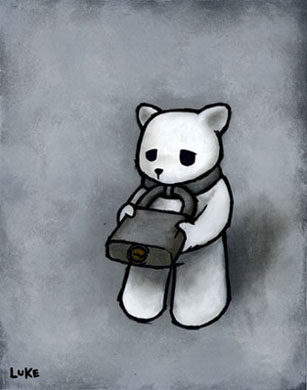
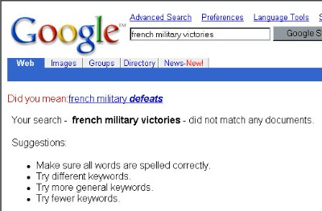

Hey, I noticed that Johnny Faneca's name appears twice in the level nine episode high scores but one says Johnny_faneca and the other says Jonnhy_faneca
I was going through the highscores and I noticed some names that looked suspiciously similar. So far I found on 59-4,"Brett_Sully_" and "Sully_Brett"(Strangely enough, they are spots 1 and 2)and on 8-4 I found"juh_on" and "Juh_ay"(Once again 1 spot from each other)
I can't believe it, I beat Trib4lmaniac in 15-2 !
(Boardmaster=bonzai)
(Boardmaster=bonzai)
...I'm gonna get you... 
Please rate these:
http://numa.notdot.net/map/10243
http://numa.notdot.net/map/10294
http://numa.notdot.net/map/10295
http://numa.notdot.net/map/10798
http://numa.notdot.net/map/11111
Thanks in advance
http://numa.notdot.net/map/10243
http://numa.notdot.net/map/10294
http://numa.notdot.net/map/10295
http://numa.notdot.net/map/10798
http://numa.notdot.net/map/11111
Thanks in advance
I can't get any fasterThe see similar maps option doesn't work for me. I've used it on three of my maps, all completely different and they all showed the same results, even in the same order. I hope its not just me 
look at this map
http://numa.notdot.net/map/11968
isn't it a bit weird that this AScott said
"It looks impossible. I thought it was too, until someone actually beat it. " even though he just posted it and nobody posted a demo until eight minutes later when
kkairos posts a demo and says "watch the demo to see how", when nobody asked how to do it?
I hope i not seeming too suspicious but it just seems weird to me. also, kkairos stopped making maps and the next day, AScott posts his first map.
http://numa.notdot.net/map/11968
isn't it a bit weird that this AScott said
"It looks impossible. I thought it was too, until someone actually beat it. " even though he just posted it and nobody posted a demo until eight minutes later when
kkairos posts a demo and says "watch the demo to see how", when nobody asked how to do it?
I hope i not seeming too suspicious but it just seems weird to me. also, kkairos stopped making maps and the next day, AScott posts his first map.
"possiballs"

Another doghouse titled "POSSIBALLS (IN THEORY ONLY!)" and the description reads "ACOIDING TO ME THIORY, I BELEIVE DIS IZ POZJISUIBLEA ONLY IN ME RETADED RTHEORY."
EDIT:well, it looks like he deleted it when he said i couldn't beat it and i asked him to prove it to be possible
Another doghouse titled "POSSIBALLS (IN THEORY ONLY!)" and the description reads "ACOIDING TO ME THIORY, I BELEIVE DIS IZ POZJISUIBLEA ONLY IN ME RETADED RTHEORY."
EDIT:well, it looks like he deleted it when he said i couldn't beat it and i asked him to prove it to be possible
HAHAHA i love it! so funny...HAHAHA
personally, i love the DDAs he makes; everything else sucks
GOOD GOD! it looks like hes doing it in frame by frame
to those who don't like gold delay in DDAs, please explain to me why. Gold delay to me is another way for DDA makers to be able to have closer calls, be able to loop some areas or be able to come back and do a different path. Also, without gold delay, we wouldn't have bounce-block propulsion or normal door propulsion.
 naem, are you sure you're human?
naem, are you sure you're human?... i feel like an idiot, i think that was an old strategy, please lock this
i stumbled across a way that should make a faster start on 35-0 but i can't make the highscores with it, however, i would love to see it implemented. I did not use fbf mode and i have done it once where i used the first and third thwumps so i am almost certain it can be improved more than the demo i posted. anyways, good luck, it should save 1-2 seconds.
I hate to give up my first highscore since 15-2 but i don't feel i should get a highscore and keep it just because no-one knows about it. I am certain that the whole thing, especially the end, can be improved maybe saving 1 second depending on the player*cough*naem*cough*, so good luck
hmmm...i'll look into those
EDIT:so far, addition of the elements
scraper run
sir-plussed
fire pillars
AM
Guess what, I also got Concisement and Superfluous Boost and you missed sir-plussed

EDIT:so far, addition of the elements
scraper run
sir-plussed
fire pillars
AM
Guess what, I also got Concisement and Superfluous Boost and you missed sir-plussed
why would spect create a disguise to get highscores rather than taking the credit for the amazing runs we have seen? it is really kinda pointless. Also, refer to 50-2: notice naem is at 17 and spect is higher at 6. the point of that is spect has been around longer than naem and spect wouldn't be able to make a highscore with a run worse than his personel best. And about the cheating accusations: how could he possibly go into the .sol and find the level that matches exactly to the demo? that would be one hell of a search if not impossible and also doing it a multitude of times? just accept that naem is not cheating, not spect, and is really that good of a player.
ha, there's a hole in this argument.
ha, there's a hole in this argument.
my thought is that naem was in fact just a good player (perhaps spect? who seems to know alot about naems every thought..
seems to me you are accusing him.
to answer your other question, maybe he finished the game w/o getting highscores then went back and worked on individual levels in the highscore section rather than the episode for whatever reason. after all, that is how i get my highscores.
I brought up the .sol because many people accuse naem of fbfing his demos and you would have to fbf in the neditor then put the demo into the .sol
for the next part about a highscore with 2 names:
spect has been around longer than naem and spect wouldn't be able to make a highscore with a run worse than his personel best
There, does that answer all your questions without whining?
oh, and i also noticed both trib4lmaniac and jalfrezi have done it so it is human, although extremely difficult
sorry iangb, i recaptured both. 
and also, i prefer bonzai, i tried to use bonzai when i joined but it said a member w/ the name already existed, despite my failed searches for that person so i ended up with boardmaster.
and also, i prefer bonzai, i tried to use bonzai when i joined but it said a member w/ the name already existed, despite my failed searches for that person so i ended up with boardmaster.
I recently learned from Ngaged that you could change my name. The reason that I want to change my name is that I was origanally going to name myself bonzai seeing as how my highscores and NUMA accounts are bonzai but the message shown when i tried to create it was that a member with the name had the name already, although i had made a search for another bonzai to no avail. If you could please do this for me, I would greatly appreciate it.
Thanks in advance.
Oh, and please lock this topic seeing as how there really is no point in anybody responding to this.
Thanks in advance.
Oh, and please lock this topic seeing as how there really is no point in anybody responding to this.
Yes, i see what you mean. Impossibly perfect like 26-2, 26-3, and 65-1 just to name a few of those awesome runs.
But wait...can it be... ...there are a few people in front of naem.
Egads! This means everyone from naem up is a cheater! And what about the one's he doesn't show up on? Egads again! Everyone must be taken off of the highscores list!
Thanks Ndrew, without YOUR logic, we would all be deprived of a highscore
But wait...can it be...
...there are a few people in front of naem. Egads! This means everyone from naem up is a cheater! And what about the one's he doesn't show up on? Egads again! Everyone must be taken off of the highscores list!
Thanks Ndrew, without YOUR logic, we would all be deprived of a highscore
speed demo of 00-0, all gold 00-3, and 01-1
the quote method was screwing up my demos so i used the text files.
good luck with these, i took forever getting them as good as this yet there is still room for improvement, very little room, but still room
00-0.....83.325
00-3.....151.350
01-1.....104.625
the quote method was screwing up my demos so i used the text files.
good luck with these, i took forever getting them as good as this yet there is still room for improvement, very little room, but still room
00-0.....83.325
00-3.....151.350
01-1.....104.625
00-0....213 frames
205
i'm abit competive
i also think the end can be improved by hitting that last corner at an angle
i'm abit competive
i also think the end can be improved by hitting that last corner at an angle
There's something weird going on...
None of those two demos work. Neither did one of your earlier ones (from the other thread), and my one.
How odd.
yeah, it happened to me too as i mentioned earlier so now i just use the file attachments thing
nice lil' all gold on 21-4
EDIT: noooo! i accidentally double posted, how do i fix this?
EDIT: noooo! i accidentally double posted, how do i fix this?
if its not too late, i'd like to compete
I think that they do count seeing as pembie put a one-way in that spot showing that he probably intended that route. I don't see why it shouldn't; it's kind of like highscores that innovate and use alternate routes to be the best
the second fall is not possible. it is possible to land on the slope, however, the force of the fall is too much to survive unless, now that i think about it more, someone can do a very small jump off the slope, but this is simply a theory
589 frames
EDIT: i got a demo about 579 frames and it can still be improved
EDIT: Holy moly, i didn't see that first prize was only mac...i guess you can just move all the prizes down so that the best effort gets third prize. This is of course assuming that i win. if someone somehow manages to out do my next demo, i can take a windows xp prize.
EDIT: i got a demo about 579 frames and it can still be improved
EDIT: Holy moly, i didn't see that first prize was only mac...i guess you can just move all the prizes down so that the best effort gets third prize. This is of course assuming that i win. if someone somehow manages to out do my next demo, i can take a windows xp prize.
bonzai: EDIT: i got a demo about 579 frames and it can still be improved
I am curious to see this run please, please post
not yet, i'm saving it for the end of the contest.
And by the way, i sped it up even more

update on my framecount for everyone: I saved a whopping 100+ frames on my latest demo. Yeah, that's what I said 100+ frames.
@pembie: please tell when it will officially close, I'm dying to release my demo
EDIT: I forgot to mention once released, it can be easily improved, that is if you have great skills; the demo took me forever to get as far as it is
@pembie: please tell when it will officially close, I'm dying to release my demo
EDIT: I forgot to mention once released, it can be easily improved, that is if you have great skills; the demo took me forever to get as far as it is
ok, I posted a demo the day round 2 started and its still not over, are you waiting for more contestants or did you forget?
i myself do believe in ghosts, as i have experienced ghosts before but i have no proof other than my own stories. One such recent occurence includes one few nights ago. I remember going to sleep as usual one night and then, maybe a few hours later, i was awakened to see a figure beside my bed simply standing there that seemed to be watching me, i assumed. it had no features to itself other than being a silhouette. i did not feel threatened or scared, but rather dazed and confuzed. i then felt an overwhelming urge of sleep and was in a way stuck between consciousness and unconsciousness in a struggle to awaken. all i could remember was struggling to awaken with my eyes open and struggling to breath, as i could remember feeling spit build up in the back of my throat. i also remember trying to call out for help (i am 14 and live with my family) to no avail and the figure still stood beside my bed. at this point i became frightened. i remember dragging myself out of bed and hitting myself about 2 times before waking at the foot of my t.v. stand. Then i saw the figure still unmoved slowly fade into the ground.
i know i wasn't seeing things or dreaming because this had happened repeatedly starting about 4 weeks ago, however, i can never truly be sure unless it is caught on camera.
and no, i was not on drugs.
i know this really interesting website with thousands upon thousands of stories and many pictures, videos, and sounds. many pictures are easily explainable, however, some are just too compelling for me to label them as fakes.
http://theshadowlands.net/ghost/
i know i wasn't seeing things or dreaming because this had happened repeatedly starting about 4 weeks ago, however, i can never truly be sure unless it is caught on camera.
and no, i was not on drugs.
i know this really interesting website with thousands upon thousands of stories and many pictures, videos, and sounds. many pictures are easily explainable, however, some are just too compelling for me to label them as fakes.
http://theshadowlands.net/ghost/
i probably couldn't, seeing as it happens at random and i have no camcorder
well it was kinda hard to concentrate on the figure when i felt like i was struggling to stay alive, but afterwards, i am startled by the figure. after the fifteenth time, i am not sure how i would react, but everytime so far i feel the same way
if there are any open spots, i'll take action, puzzle, and/or race-Bonzai
remember my 15-2 innovation a while back? well i got another but it can be improved because i was planning on using the topside of the drone and i could have done a triple jump in the lower right corner so...go and get it
EDIT: 126 flat
")
EDIT: 126 flat
come on guys, nobody has attempted it? it is easy to improve by putting some of spect's parts with my drone thing or even getting over the drone rather than under. i've done it but killed myself on the next drone. anyone up for the challenge?naem even?
come on guys, nobody has attempted it? it is easy to improve by putting some of spect's parts with my drone thing or even getting over the drone rather than under. i've done it but killed myself on the next drone. anyone up for the challenge?naem even?
EDIT: Arg...please delete this double post
EDIT: Arg...please delete this double post
good lord! that 2-4 is far from perfect and you still beat naem by alittle more than a second! well done!
YAY! i improved it and it can still be improved which i am working on now
wow, i'm suprised that noone tried to use my strategy, i mean i posted it on the fifteenth... yay i won! 
try searching .sol on the search thing next time...it should lead to a .sol for dummies thread.
well geez, that was insulting. i was trying to help him to understand abit more about .sols so he wouldn't need to ask more questions
http://metanet.2.forumer.com/index.php?showtopic=4072
very useful program by eeyore
very useful program by eeyore
three odd theories:
1) Perhaps someone important is going to join. There is no direct threats of destroying the forums. He did say " I can and will gain access whenever I choose". "I will take over the metanet forums in exactly 27 days. Don't waste your time with forum security." Perhaps this means he/she will be talked about alot(which seems to have already happened) and that forum security won't stop someone from joining. And maybe the odd terms like kingspriest refers to the name he/she will choose.
2)maybe it is already already a member who's name relates to the "hints". I already scanned about 100 names and found someone with the name "5545225875" who repeats 5. or maybe i am just feeling overly paranoid right now.
and 3)Maybe it is maniac. after all, he is an admin of webriddler.
1) Perhaps someone important is going to join. There is no direct threats of destroying the forums. He did say " I can and will gain access whenever I choose". "I will take over the metanet forums in exactly 27 days. Don't waste your time with forum security." Perhaps this means he/she will be talked about alot(which seems to have already happened) and that forum security won't stop someone from joining. And maybe the odd terms like kingspriest refers to the name he/she will choose.
2)maybe it is already already a member who's name relates to the "hints". I already scanned about 100 names and found someone with the name "5545225875" who repeats 5. or maybe i am just feeling overly paranoid right now.
and 3)Maybe it is maniac. after all, he is an admin of webriddler.
the other day, i was watching a video about japan in my class and in one scene i saw this guy with one hand moving up and down insanely fast ( hahaha that did not come out the way i planned! ) on a joystick ( again not intended...hahaha) so i am thinking that with much training, one can move faster than double shifting with just one hand and the guy wasn't even concentrating
well, noone is going to help you and if its not fun, don't even bother playing
EDIT: the title is misleading, i made 0th on 26-0
i thought the level was maxed out, then i beat it and as described, it was bloody difficult. i think maybe it is improvable if you can land on the very edge of each platform without stumbling so...yeah. good luck with that
i thought the level was maxed out, then i beat it and as described, it was bloody difficult. i think maybe it is improvable if you can land on the very edge of each platform without stumbling so...yeah. good luck with that
http://metanet.forumer.com/
What's going on over here? Did they hack the wrong site?
ok, so what? now we have two hackers to worry about? one on a time limit and one who hacked the wrong site who is bound to find out they did. geez, this may be more serious than i thought, but honestly, i wasn't around for our first two hackers and i don't know how strong the firewalls are.
maybe the source is not program related. it could be keron who we got the information from.
sorry to those i offended if i said it could be you but this is a riddle and i feel the need to present theories of the sender. Part of solving riddles includes presenting theories and eliminating them. And sorry, I didn't know i was "mod-bashing".
there should be a tricks menu showing all the tricks possible, like corner jumps, double jumping on the bounceblock, or double jumping on a curve. This could prove useful for new players looking to get a highscore.
i could come up with the demos if that is what they need. some of those tricks are quite difficult and i understand that they might not be able to do some
brain n-bolism: 77.850
Also, how do i attach the image of proof, i can't figure it out
Also, how do i attach the image of proof, i can't figure it out
um...no sorry, didn't even know about image shack
EDIT:
The Goggles Do Nothing: 160.950
EDIT:
The Goggles Do Nothing: 160.950
EDIT: I actually got a higher time and took down the image for M & R's sake. I'll have to redo it
arg...how do i make it bigger? i used the resize option
arg...how do i make it bigger? i used the resize option
it seems some people have no life. Look at 2-4 for what i mean. This basically knocked out all scores in there and it is very frustrating to those who earned it.
on 30-3, can anyone pull off a triple or quadruple off the bounce block? i know its possible but i haven't been able to implement it yet.
EDIT: my bad, 30-2
EDIT: my bad, 30-2
i was trying to make the time visible
damn! thats exactly how i imagine kryx and naem playing
i also noticed this as well as 47-1:the top right bounceblock is off a little
arg...I was working on something similar that i was hoping would be put into the game for new players to use for reference, but it would be in sections rather than episodes(something like "using tiles to your advantages" or "thwump manipulation". Well, it looks like you beat me to it. If you need any help, feel free to ask me and I'll see what I can do. Also, I may not be as active until the saturday after school's out (may 27)
ok, i finally got some time now that it is the weekend so finally, here are my demos, which are improved from the last time. Also, don't copy it, i'll check the data. I say this because it happened to me a couple times. And without further ado...
EDIT: Times are: GOGGLES-162.275
BRAIN-78.400
EDIT: Times are: GOGGLES-162.275
BRAIN-78.400
watch my demo. i think that the beginning is faster but i can't do what kryx does the rest of the demo. DARN YOU KRYX 
yeah i thought it was possible and went through hell just to do it
atleast with bounceblocks. While trying to score higher on 89-0, i made a startling discovery that if angled just right, you can jump off the corner of a bounceblock just as if it were a solid corner. if it has been discovered before, sorry for this waste but i just wanted to point this out.
awesome trick ...it looked like it was the corner though. I also tried several times after to no avail. Man, that would be some trick to pull off in a highscore
I looked over it after i got it and i know there is definitely room for improvement. anyone up to it? also, why is my name in caps? i checked my configurations and the name is not caps.
Ugh... its been so long since I have been here and I have to say its great to be back, although I see the highscorers and the highscores have improved. I lost the my internet about last June and recently got it back. I can't seem to get any good ingame scores now but I can usually get some really nice scores on NUMA levels strangely and I found/performed a really nice route that I think may be improved so...good luck
hmmm, that P.O.C. is tricky- I could only match your score Lex but I did manage to snag sting of a jellyfish. Now I will post it so you can kill it lol
Took Antigone, working on the wicked one
Here's a couple of runs up to 2-0. Some are good, some can be beaten.
Did the ones msyjsm posted in his/her(sorry, I don't know which gender you are msyjsm) response plus some of the 10 levels. Didn't bother to compare frames but I am very proud of my work and I am confident I did well.
I got some more scores, mostly those which I did not see that Msyjsm posted and I compared scores to get the best framecounts on the previous posts so I should have majority of the scores. You know, I actually like the MSRH concept but it would be way too easy for all of the maps to be filled with people of the same framecount.
What did one penny say to the other penny?
"Together we can make cents"
Ironically, two talking pennies make no sense whatsoever
"Together we can make cents"
Ironically, two talking pennies make no sense whatsoever
You guys are morons. Don't post if you don't know shit.
Unreality created a version of N that doesn't allow speedhack. You CANNOT speedhack it. He posted this version upon request, basically because L3X wanted to record his chimneyjumping with proof. I guess he didn't really understand my point.
ehhh...I see that Unreality has good intentions but, and feel free to object, doesn't modifying N to detect speedhack still fall under the category of violating the license?
3rd: You can click the Modded N to play modded N ;p It should load the progress with another set of userdata, so that it won't affect your original one...
[Skipping a few lines]
...Don't download the rar file if you don't want to violate N license
I really don't know anything about programming nor do I care to know but saying this, I think maybe you did violate the license whether you recompiled N or did something else. Therefor having this pinned might be a bad idea because it kind of encourages modding N.
Updated 3-19-07:
Under hacked/kryx(because I'm not really sure if all of his scores are hacked) scores
06-1 - 106.875(don't hit so many corners as roughly. Possible innovation but freaky hard; ricochet off the left side of the first bounceblock, I've done it only once but I messed up the last corner kick. I haven't been able to do it again.)
30-4 - 104.950(It's from my older days, just watch kryx's demo and work on it.)
67-1 - 190.725(falling down from the switch, maybe fall SLIGHTLY further to jump and hit the slope faster)
67-3 - 167.525(maybe maxed, tied with kryx. Perhaps find a way to pass the last bounceblocks faster)
90-1 - 105.375(under adeher. I cut it close, maybe the only way is to cut it closer with the 2nd to last drone.)
My zeroes:
12-4 - 231.800(maybe faster in the bottom chamber)
15-2 - 128.025(cut it closer with the drone, don't catch the foot near the end after the 8 gold chamber)
17-2 - 109.950(too much air time jumping to the first bounceblock)
23-3 - 173.525(I love my innovations here. Do a weaker jump into the third drone chamber)
25-4 - 159.100(don't catch the first corner; At end, cut it closer with the rockets and the ledge to the door)
35-4 - 149.150(c'mon, this should be an easy fix)
43-2 - 120.500(tied with seifer and J_F, watch mine; I think there is just a litle room for improvement at the end, maybe not)
89-2 - 179.025(less air time at the switch, just barely touch that top gold piece when you are coming down.)
90-2 - 184.450(less air time coming back at the bottom middle gold section)
91-2 - 146.550(corner kick at the switch, you can see I tried)
I really want to see these levels maxed out(well, all levels for that matter) so have at 'em. I have included possible ways to improve this time around.
Under hacked/kryx(because I'm not really sure if all of his scores are hacked) scores
06-1 - 106.875(don't hit so many corners as roughly. Possible innovation but freaky hard; ricochet off the left side of the first bounceblock, I've done it only once but I messed up the last corner kick. I haven't been able to do it again.)
30-4 - 104.950(It's from my older days, just watch kryx's demo and work on it.)
67-1 - 190.725(falling down from the switch, maybe fall SLIGHTLY further to jump and hit the slope faster)
67-3 - 167.525(maybe maxed, tied with kryx. Perhaps find a way to pass the last bounceblocks faster)
90-1 - 105.375(under adeher. I cut it close, maybe the only way is to cut it closer with the 2nd to last drone.)
My zeroes:
12-4 - 231.800(maybe faster in the bottom chamber)
15-2 - 128.025(cut it closer with the drone, don't catch the foot near the end after the 8 gold chamber)
17-2 - 109.950(too much air time jumping to the first bounceblock)
23-3 - 173.525(I love my innovations here. Do a weaker jump into the third drone chamber)
25-4 - 159.100(don't catch the first corner; At end, cut it closer with the rockets and the ledge to the door)
35-4 - 149.150(c'mon, this should be an easy fix)
43-2 - 120.500(tied with seifer and J_F, watch mine; I think there is just a litle room for improvement at the end, maybe not)
89-2 - 179.025(less air time at the switch, just barely touch that top gold piece when you are coming down.)
90-2 - 184.450(less air time coming back at the bottom middle gold section)
91-2 - 146.550(corner kick at the switch, you can see I tried)
I really want to see these levels maxed out(well, all levels for that matter) so have at 'em. I have included possible ways to improve this time around.
yeah, that 15-2 I've innovated many times and have been battling kryx for the 0th there.
The 12-4 was a surprise to me because I was planning to bounce off that wall then the opposite side to get to the platform at the end
The 12-4 was a surprise to me because I was planning to bounce off that wall then the opposite side to get to the platform at the end
I would like to join if the contest isn't dead
just barely beat you with 3 frames. unless a new route comes out, I think i maxed out on this one
took simplex and easy does'r but just barely
That jump on the block is by no means easy. I suggest working on the jump starting with a long wait on the block and slowly working to adjust your fingers to speed up and have less time on the bounceblock. The key here is to pace yourself. I could take anywhere from one hour if you are really good(L3X  ) to a few days or weeks to learn it. It took me about half the time I was gone to be able to do it relatively well and there is still no guarantee(spelling?) that you will do it.
) to a few days or weeks to learn it. It took me about half the time I was gone to be able to do it relatively well and there is still no guarantee(spelling?) that you will do it.
) to a few days or weeks to learn it. It took me about half the time I was gone to be able to do it relatively well and there is still no guarantee(spelling?) that you will do it.you're right L3X, i did it and there is still room for improvement
Actually, breaking 159, meh.
you have to run onto the slope and jump off right after letting go of the left button. Check out this map on NUMA for posted demos.
go to "numa.notdot.net" and run a search for "mines path 2" and click on the map; from there find one of the demos and post it in with the level data in the userlevels and watch the demo.
btw, welcome to the forums
btw, welcome to the forums
...I'll have to go through Bonzai, zapkt, Mr_Lim and Johnny just so I can get to the finals...
omg, I was considered in the same league as these people?! Go me!

It was probably a typo for L3X
Good luck CvK
IAABH, you should probably get someone to help you make all those maps...
Not me though because I kinda stink and I won't have that much time
Not me though because I kinda stink and I won't have that much time
i was just wondering ... i've noticed a couple of the highscores have the same names yet different caps on them, like bonzai, Bonzai, and even BONZAI on 30-4
Yeah, I noticed that and asked about why my score showed up that way a long time ago. I don't remember if anyone responded. Those are me for clarification.
I'm going to go ahead and state the obvious here:
What the hell does it matter if IAABH is a man or a woman? This topic has become so pointless, if starting it wasn't pointless enough. My recommended plan of action: Somebody please lock this friggin topic.
What the hell does it matter if IAABH is a man or a woman? This topic has become so pointless, if starting it wasn't pointless enough. My recommended plan of action: Somebody please lock this friggin topic.
Shall I make a thread about your views that nothing can be proven to exist, Mr. Anderson?
Yes Obby. That would make for great discussion

There is just too much overthinking and jibber jabber in here for me to read every post so I didn't. My theory, short and sweet, is that the purpose of life is to perfect ourselves, not necessarily in a single life, through each other in a process of learning and experiencing. Feel free to argue with and question this theory.
For clarification of what I mean with perfection, check out Life Themes. Everyone can relate to one or two of these themes.
For clarification of what I mean with perfection, check out Life Themes. Everyone can relate to one or two of these themes.
It's quite simple really, all life on this pitiful planet was an accident. A random collection of proteins falling into the primordial ooze that was to form the basic bacteria of well... us. So the answer to what is the meaning of life is: There is no meaning. We're here for the sake of being here
Life may have been a result of an accident, but who is to say there is no meaning to it? Also, I said what I believed the purpose to life was, not what the meaning was. The smartass in me says for you to go look up the meaning in a dictionary.
I don't think a noob could beat N but I agree with Obby in that your post was noobish. Also, congrats, now you can look forward to highscoring
Life has no meaning.
You guys aren't even answering the right question anyway; you're answering the question, "what is the best ideal life should pursue if it exists?"
I've said this in every "meaning/purpose of life" thread so far, and I'll say it again:
There is a tremendous difference between a purpose and a good idea.
"Procreate enough to maintain the existence of the species" is not a purpose, but a good idea.
"To show compassion to all other life" is not a purpose, but a good idea.
In order for there to be a purpose, there has to be something that set life into motion in order to accomplish a particular goal. So imagine a lifeless universe: this universe must have some sort of problem that some lifeless albeit thinking entity needed to solve, and so put created life in order to solve this problem or fulfill a particular purpose. Any purpose given to life that reflects back onto itself ("to treat all other life with respect") is not a valid purpose, for the same reason that an automaton that was created so that it could repair itself has no valid purpose - why make the automaton in the first place?
So if you're going to reply, I ask that you consider a purpose, and not something that's merely a good idea.
There isn't any specific problem to be fixed in the universe(or is there...) but I believe that the reason that life exists, our goal that we must accomplish, is for our souls to experience the best and the worst situations and to learn, grow, and perfect our souls. Look at humanity and all its aspects of living. We have everything from the most wretched people to the happiest people alive. We have disabled people and criminals to billionairs and just overall happy people. Look at the horrible events in history like epidemics, the Holocaust, the Great Depression, whatever. These events happened 1)to those people for them to gain the experience and 2)as a lesson to humanity overall. Some of what happens during these historical events are just so miraculous and unexplainable that it surely cannot always be coincidence or good luck. Also, that life themes page I linked just gives the ideals that one should pursue in order to achieve the ultimate purpose.
I'm saying that the Holocaust was a lesson for humanity to grow and mentally evolve
You're missing the point.
You have stated something that is a good idea for humankind; you have not suggested any purpose.
Enriching our own souls through experience, along with whatever other bahooey you wrote, is a fine example of a good idea. We exist, we look at our surroundings and at each other, and figure we ought to do something, and the sort of thing you mentioned we ought to do is nothing more than a good idea we've settled upon. But that says nothing about the reason we are here; it says nothing about our purpose.
I'm struggling with another way I can explain this, but this is the best I have so far.
Ponder it.
Gosh Tsukatu, you make me have to second guess myself and go to dictionary.com lol
definition of purpose:
Quote1. the reason for which something exists or is done, made, used, etc.
2. an intended or desired result; end; aim; goal.
3. determination; resoluteness.
4. the subject in hand; the point at issue.
5. practical result, effect, or advantage: to act to good purpose.
verb (used with object) 6. to set as an aim, intention, or goal for oneself.
7. to intend; design.
8. to resolve (to do something): He purposed to change his way of life radically.
verb (used without object) 9. to have a purpose.
Idioms10. on purpose, by design; intentionally: How could you do such a thing on purpose?
11. to the purpose, relevant; to the point: Her objections were not to the purpose.
Now analyzing every little bit, I say the reason we exist is to, as you better put it, enrich our souls with experience. A "good idea" would be that life exists for us to be nice and harmonious and blah blah. Life as many of us know it is most definitely not going to work that way. So what do all people accomplish while living? We gain experience, ultimately fulfilling our "desired result". Those who suicide go through the difficulties for experience. That's not saying once they commit suicide, they go to heaven, they'll just end up back here on earth because they have not completely achieved their purpose. Those who have everything, I believe, have just started their journey to reach their goal. To gain the best experience, we must experience the worst. Now I imagine some of you are asking, what then, what comes after we achieve this "perfection"? It's like I said in my first post. You would help guide others. Either that or just start over. Its like a game, take N for example. We strive to beat it, to reach the end. Once we come to the end, we are not satisfied and now we must strive to be the best, with highscores, and achieve perfection. Along the way, we help, like the help sub-forum, others who are striving to achieve this perfection. If some of you players out there are like me and have gotten bored, what do you do? You start over. So essentially, it is a continuous process of gaining experience. Now I think some would say that the same souls just keep repeating? No. Look at the Earth throughout history. You can very easily see that life as we know it is constantly expanding and disseminating e.g. unpopulated Earth and space. There is so much to experience, so many souls to interact with(that is a "good idea"). Now thats not to say that Earth is the only thing we can experience.
Straying a bit off topic, ask yourself "What are the chances that a rock would fall perfectly into the right spot and conditions for life to sprout and develop?" 1 in god knows how much, right? Now think about how vast this universe is. Can you honestly say that it would only happen once?
Back on topic and to the point, there is more to experience than Earth(and looking at Earth, I would say it is the worst hehe). We can be guides, people, aliens, whatever.
I'm probably missing something else but that is what Tsukatu is here for. Now, on with the quote wars.
I'll be in but it wouldn't be fair for CvK to have to win twice. If its okay by CvK, I'll compete again.
Hmmmm, you never know what those turtles are up to while they sit there all day. Perhaps they are thinking... 8/10?
I have a question: what do you have to lose in order to believe in God?Huh? I actually do believe in God. Just not the way many religions make God out to be. I see all the praying and church-going as unnecessary.
what if I practiced a religion that wasn't "the one true" religion, and I end up being punished forever? It, to me, is much more logical to stick to freedom over a doctrine I dislike when both are likely to punish me, should a religion be true.You believe what you want to believe, you will not be punished for it. I believe we are all a part of God, all God's children in a way. Many religions always say something like, "join our church or you will go to Hell" or "If you don't believe us, you're doomed to suffer in the afterlife". I really find this just laughable because, why would any reasonable being punish it's children for being mislead and getting off-track? I believe in reincarnation, not as punishment but as a second, third, or whatever chance because, practice makes perfect. I don't believe there is "the one true religion", I believe you should just live your life to the fullest and don't worry too much about being saintly or whatever. The life themes page I gave kind of tells you the path you are supposed to follow, the good ideas, in order to completely achieve the purpose.
Well, those people, for lack of a better word, are jerks. God would not send his(or her, whichever you prefer) own children to hell, to be punished for not fulfilling their purpose on a first try. It's like riding a bike. On your first try, if you end up falling down your parents don't send you to your room. The help you up and let you try again.
EDIT: I don't even believe in Hell, I see it as a way for churches and people to have a control on other people so they will do what the churches want.
EDIT: I don't even believe in Hell, I see it as a way for churches and people to have a control on other people so they will do what the churches want.
would the "noobs" really stand a chance in the end anyway?
Yeah, see, now I think I am completely missing the point. Could you perhaps give me your definition of purpose so I could answer it? I think that purpose in this context means the reason for which something exists. I feel like I've stated a reasonable hypothesis for a purpose but you keep telling me it's a good idea. I say we were created to experience things, you say it's a good idea. That to me is like me saying telephones were created to communicate and you saying that it is a good idea, not a purpose. Or like me saying school's purpose for creation was for learning and you saying it's a good idea, not a purpose. What I see as a good idea is that life was created for us to go to heaven or some nonsense like that. That is what I see as a good idea because it would be pointless for us to be created for the sole purpose of going to heaven to be with god when we could have just been sent to heaven skipping the life process. I'm really confused right now, please help me out.
But there's virtually no proof that we were created.
Huh? Anything that exists had to be created or else it wouldn't exist.
Yeah, I finally see what you mean by purpose, but I see your view as atheist and I have a theist view so I guess we have to agree to disagree here.
When does Round 1 end?
Oh no, "I.George .:. xdude http://numa.notdot.net/map/82273" map doesn't exist!
First post because you aren't
spawn of yanni->water my lawn-y?->don't use the urine
banned for excessive banning
tournament
emlisarbe
emlisarbe
The next poster will have socks in his pants
ive never used user levels b4, can someone PM me?the attachment I have contains all competition maps except for the one that I posted doesn't exist. Paste this data into the userlevels document that is in the same place as where you unzipped N when you first downloaded it. For more specific instructions, read inside that userlevels document. It is also titled "userlevels" and should always be that way. This is also for whoever wants it.
EDIT: or just go in and find your level
EDIT 2: Now contains all Round 1 levels
notification
ratyuse
ratyuse
Why is it popular to ask other guys about their sperm and masterbation habits all of a sudden?!
Well, congrats on the score but I don't cheat. I work hard to get my scores and I don't appreciate someone who's upset at me because I want to raise my standards.
You're getting high times because you're able to do fast clicking, I get fast times because I can estimate a few jumps better than you do, I guess. A frame faster than kryX, crappitrash, Bonzai, all of whom are able to do almost 20 jumps per second.
Not to start a fight or anything but this looks like an accusation to me. I don't like those people and I don't want to be known as one. I am here on these forums not only for N but also to make friends along the way.
Welcome to the forums, but I don't think you can start a topic about a replay you made. I'm not trying to discourage you but it's just not a good thing to do, expecially when you paste in the data like you did. There is a reason that the attach a file attachment option exists. Perhaps you should familiarize yourself with the forum rules before you start posting?
Here's my AGD slow demo, not posted on NUMA
Okay Hendor, now here's the problem with that. When it says "nothing", it implies that nothing is pressed, and he would not be pressing however many buttons in that amount of time. And another problem is that you assume he used the one shift button. I'm not completely sure about crappitrash, but I spent my time away learning to effectively use both shifts consistently.
Back on topic, that new 0th for this level is even more insane than spect's(albeit just a little)!
Back on topic, that new 0th for this level is even more insane than spect's(albeit just a little)!
Check out my updated scores and suggestions.
Although it is probably not necessary at this point, here is my next demo. It is 126.125 seconds.
Did you get a new color? because you don't get a new mode until you finish 1-59
Also, we aren't supposed to tell the secret
Also, we aren't supposed to tell the secret
very nice choice of maps! Here are the round two maps in one userlevels set(because I like to play them all).
Do you know...the muffin man?
Did you get a new color? because you don't get a new mode until you finish 1-59No, it doesn't matter what order you beat the columns in. After beating six columns, you unlock one secret. When you beat all ten columns, you unlock another secret.
Also, we aren't supposed to tell the secret
yeah, see that won't work for me seeing as I like to do things in order, hehe

Here is my first demo with a nice time of 93.800
I noticed iangb changed his avatar so that a little pink pony inches its way across the alien face. The problem is I can't remember if I noticed this first or if I noticed the banner first.
I noticed Seifer just stole 2 zeros since yesterday. Glad to see he is still around, he was one of my favorite highscorers back in the day. He took 43-1 and 43-2(I told you guys it could be improved.) Yay for Seifer, hope to see more from him.
heh, the best I could muster for 55-3 was a horrible 6th. However, I did manage to snag 0th on 72-3 but the beginning is still improvable if you manage to not hit the vertical wall and only hit the slant.
I mean hitting the slant after jumping off the right wall, not hitting the slant with a mine on it.
EDIT: actually just got 2nd on 55-3
I mean hitting the slant after jumping off the right wall, not hitting the slant with a mine on it.
EDIT: actually just got 2nd on 55-3
Yes, YES! I control the universe from within my pants! Oh no, I need some new pants.
The next user will have second-hand pants in his/her pants
The next user will have second-hand pants in his/her pants
Granted, but one of your borks was accidentally shipped to ethiopia
I wish I had an Easter bunny...
I wish I had an Easter bunny...
granted but while you were in a panic, your dog tore up your pagoda
I wish I had some palmolive...
I wish I had some palmolive...
Granted, but you must first go to summer school and learn the difference between "then" and "than" and when to capitalize "I" as in "I'm" and "I'll"
I wish I had my own drone.
I wish I had my own drone.
I have no idea if Limer has pm'd max_ride a demo so I have no idea if he has a secret demo or if he has just neglected to make one but in any case, here is my fastest demo so far
Okay, here are the improved (and conventional for Pit of Despair) routes
granted, but it booked a gig as a stunt double in American Pie.
I wish T.V.'s had a scent option
I wish T.V.'s had a scent option
Yeah, I never see him post on the forums either but we frequently compete for 6-1 so I guess he's a silent forumer.
Nice score Sp33dy, I forgot about my score here so now I'm off to try and take 0th(excluding the hacker) on this level
And taken
Nice score Sp33dy, I forgot about my score here so now I'm off to try and take 0th(excluding the hacker) on this level
And taken
granted but someone starts sniping threads and spamming on maps
I wish people didn't make noobish wishes that ruin this game
I wish people didn't make noobish wishes that ruin this game
Well, I did the same thing but mine wasn't as sexually oriented...
1. bonzai
A really tiny type of tree that comes from Japan. They're so small that you won't believe it's really a tree.
Oh! I need to water my bonzai now.
2. bonzai
Believed by many to be the greatest adjective in existence. It has been described by linguists and etymologists as "aestethically pleasing" and "beautiful" as well as being the most highly evolved word in the English language. Recent evidence shows that the word derived from the sitcom Bonanza, which apparently sucked, unlike the word it begot.
The Spanish for bonzai is "bonzo" and the French is "bongay"
3. bonzai
When you jump on someones face and you rub furiously with your ass while yelling, BONZAI!!!
Harlan and I Bonzaid Raymond so hard he started to bleed because we ripped his face to pieces.
Connor and I Bonzaid Ray so hard off my pool deck, that he started to cry and said his brain was bleeding.
4. bonzai
v. To go bonzai: Eat a large quantity of psilocybe mushrooms and trip extremely hard for an extended period of time.
Let's get a half-O of shrooms and go bonzai!
5. bonzai
something miniscule, and, in so, incredibly cute
omg, that baby elephant is so bonzai
1. bonzai
A really tiny type of tree that comes from Japan. They're so small that you won't believe it's really a tree.
Oh! I need to water my bonzai now.
2. bonzai
Believed by many to be the greatest adjective in existence. It has been described by linguists and etymologists as "aestethically pleasing" and "beautiful" as well as being the most highly evolved word in the English language. Recent evidence shows that the word derived from the sitcom Bonanza, which apparently sucked, unlike the word it begot.
The Spanish for bonzai is "bonzo" and the French is "bongay"
3. bonzai
When you jump on someones face and you rub furiously with your ass while yelling, BONZAI!!!
Harlan and I Bonzaid Raymond so hard he started to bleed because we ripped his face to pieces.
Connor and I Bonzaid Ray so hard off my pool deck, that he started to cry and said his brain was bleeding.
4. bonzai
v. To go bonzai: Eat a large quantity of psilocybe mushrooms and trip extremely hard for an extended period of time.
Let's get a half-O of shrooms and go bonzai!
5. bonzai
something miniscule, and, in so, incredibly cute
omg, that baby elephant is so bonzai
I think there is still a little improvement possible in this level but I'll try to make a backup demo for that
Here's an improvement of Pit of Despair but it can definitely be improved

Geez, you're like pms on steroids. You really do need to calm down. I know this is BnT but wow. A simple "I'm not trying to sum up the community with three lesbians" would have done it. And you probably should watch the language outside of BnT too, we have a lot of young children here on the forums and I'm sure a lot of angry parents wouldn't help.
Back on topic, I vote Ellen
Back on topic, I vote Ellen
granted, but your twin wants a sandbox too, so you have to split the sandbox in half.
I wish I could control life with my computer
I wish I could control life with my computer
@JF- we were supposed to post the demos on this thread
@max_ride-please let johnny though, it would be a shame to see him out because he missed that part of the rules, plus he posted the demo within the time limit and I think he would raise the competition level here about 10 fold
@max_ride-please let johnny though, it would be a shame to see him out because he missed that part of the rules, plus he posted the demo within the time limit and I think he would raise the competition level here about 10 fold
nice! I might try for this later
When was Ellen DeGeneres a Dyke? I watch her television show...
wow. If you watch her show, it should be pretty obvious. She's been an admitted lesbian for a long time now
yay, another one.
meh, sure. Why not. I'm gonna say 4 or 5.
meh, sure. Why not. I'm gonna say 4 or 5.
Oh. Well. I gues it wouldn't have mattered lol
here's a both a fast and AGD of junkyard. I'm still working on perfecting a demo for crisscross though
EDIT:
O.M.F.G.
crisscross is way too annoyingly reptitive to perfect, I'm not even going to attempt it now. I just spent a few hours trying to make an acceptable demo, and I just can't do it without bashing the keyboard, so good luck zapkt
EDIT:
O.M.F.G.
crisscross is way too annoyingly reptitive to perfect, I'm not even going to attempt it now. I just spent a few hours trying to make an acceptable demo, and I just can't do it without bashing the keyboard, so good luck zapkt
so I guess I'm a 5?
Question:Will you be looking for lowest frames or all golds?
Question:Will you be looking for lowest frames or all golds?
*snatches 0th*
lol sorry blackeagle but when I see the opportunity, I try to take it.
At least your score is still way up there
At least your score is still way up there
Hold on, I don't get it. Do you mean lowest frames or highest times?
It's April fools, you fools. Now start groovin'
Crisscross can't be that hard. Did you watch the demo I posted?
It's not hard to do, it's just hard to do it in a way that looks great.
7/10
Yay, new maps, I hope everyone participates.
Nooo, I'm bonzai, not bozai
EDIT: Heads up mam, I have a halfway decent demo of 132.600 missing some gold already
Nooo, I'm bonzai, not bozai
EDIT: Heads up mam, I have a halfway decent demo of 132.600 missing some gold already
I agree with Mr. Lim(or Mr_Lim?). All I'm going to do this round, and the next two if I get there, is give my times until the last day or two.
107.650 for my fastest so far.
Can we request map changes? Because my map is open, but it is so, so terrible for making a demo. Basically, it's easy but it is not a good highscoring map.
In my opinion.
Can we request map changes? Because my map is open, but it is so, so terrible for making a demo. Basically, it's easy but it is not a good highscoring map.
In my opinion.
Maybe it's just me, but the map doesn't really have a good flow. I know it's not a race map, but it should have at least some flow for one or preferably multiple routes, and this map for me just lacks any flow whatsoever.
meh, I managed to make somewhat of an okay flow and improved to 110.600
I'd say posting your time is good to motivate your competition as well.
Speaking of times, I improved to 137.475, and I think I can improve some.
Speaking of times, I improved to 137.475, and I think I can improve some.
I'm gifted with an I.Q. of over 160+, and have been taught at home by my very clever Mum and Dad since I was a baby. My grades are on average 2-3 years ahead of myself, giving me time to enjoy my Bujinkan and Airsoft.
I started playing with computers when I was 5-6, and went to collage for a day with my Mum at 7. At 10 I started on the UK's standard I.T. qualification, CLAiTplus, and came through with 100% in all 10, but last module, which I scored 98% - this gave me high enough scores to gain a Diploma in I.T..
Have been doing web sites since, which I hand code fluently in XHTML, HTML, DHTML, CSS and JavaScript. Know a large amount of PHP, and have a keen eye as you know, for images. Have been doing the Open University's (the OU being a well respected online university in the UK for 18 and over. I got in by my portfolio of work, if you care to know how at 12 I got in.) Undergraduate courses for the Certificate In Web Applications (meaning I get a diploma in doing web sites at the end of it) for the last year, and will continue to until 2009. Already have a diploma in Malware (Viruses, Trojans and all that), and have my good ol' business Britannia Enterprises.
Finally, no I didn't lie about my age: I am 13, and will proudly say that, even if you all think I am lying. As God will strike me down now, I am telling the truth. I promise that, on my life.
Ahem...Stop wasting your time here and go create a cure for cancer, foo!
And if I'm not mistaken, people go to college, not collage, hehe
Back on topic, congratulations on your job, everyone. I wish you all the best of luck. I still, unfortunately, do not have a job.
I have more than 88.000 now.
Lying or not, I won't stand a chance.
Yeah, see that's what's great about this contest: you don't get eliminated so you actually do stand a chance, going against people who did as well as you
Also, I don't think your last post was okay, just saying "lol". You gotta make some sort of relevant input, because it may be considered spam
wtf is wrong with all of you?
...
*bleep* this im out and not coming back. *bleep* this to the fifth power.
keron, ban me. now. *bleep* this.
kai, your behavior is really uncalled for. Nobody did anything to you. Are you just responding to peoples' posts about Dave? Regardless of what you are responding to, it is uncalled for. This isn't Bash & Thrash, please be curteous to other members of the forum who don't need this unnecessary language.
On topic, I don't think Dave should go. He has been a very influential member within these forums and it would be a shame to see him go. I haven't really noticed him break any rules or express negativity, besides responding to Kimmie's rants.
On the other hand, it is up to him, and, as many of us know, life cannot be centered around these forums 24/7. Maybe he just needs to get out more(not to imply you don't have a life). Whatever he decides to do, I fully support his decision and wish him the best of luck in the future.
Wow. I guess trying to be a good person is bad in this instance.
Oh geez. Please people, don't make wishes like "I wish for something", "I wish this was a wish", "I wish this was a bad wish" type posts. It completely ruins the fun of the game.
Ahem...back to the game...
Granted but you can't figure out what your something is.
I wish I was like a lizard and could have parts of my body fall off and grow back.
Ahem...back to the game...
Granted but you can't figure out what your something is.
I wish I was like a lizard and could have parts of my body fall off and grow back.
I would like to see a gay individual befriend a member of the Phelps familly then reveal they were gay. It might actually counter some of the brainwashing.
I don't think anyone would want to/should befriend these people. Talking is absolutely pointless to this type of people, they would never listen no matter how right the other person is. This behavior is very sickening to me, and they should be locked up somewhere.
grabbed 0th with a different beginning and horrible everything else. I think I'll try to do your thing now.
Bam. Half a second faster than johnny, and I had a few mistakes in there.
Also, it goes without saying but, your innovation was a great idea
Also, it goes without saying but, your innovation was a great idea
I think I'm going to stop with highscoring for a while, and hopefully permanently. I never truly realized how much of my time is spent highscoring until recently when I was trying to get back a score from crappitrash. I sat down, started working on the level, and before I knew it, I spent nearly three hours on that level alone accomplishing absolutely nothing. I may like it, I may not. If I end up missing it too much, I will probably come back.
Now this doesn't mean I am going to stop with N and the forum altogether. I will still be here giving my help to people who ask for it. I don't think I can ween myself off of you guys just yet.
Lastly, I will finish out my contests and will hopefully be done with highscoring once and for all.
Sorry if this doesn't qualify for the Leavers Thread, but this is a huge deal for me, and I hope I can end my time consuming obsession with N.
Now this doesn't mean I am going to stop with N and the forum altogether. I will still be here giving my help to people who ask for it. I don't think I can ween myself off of you guys just yet.
Lastly, I will finish out my contests and will hopefully be done with highscoring once and for all.
Sorry if this doesn't qualify for the Leavers Thread, but this is a huge deal for me, and I hope I can end my time consuming obsession with N.
This topic just sounds so stupid. This isn't even worthy of the Bash & Thrash. But I feel obligated to answer your question. I am an equal opportunity employer, so both.
Yeah, half snap floorguards are a good idea, although what we have now doesn't really stifle mapmaking...
My take on wall guards is no, no, no-no. I just don't see the appeal. If you want something to chase you vertically, use a thwump. And besides, players could easily outrun wall guards, considering the chimneying ease of today, and the speed must be kept at a limit for the falling aspect.
My take on wall guards is no, no, no-no. I just don't see the appeal. If you want something to chase you vertically, use a thwump. And besides, players could easily outrun wall guards, considering the chimneying ease of today, and the speed must be kept at a limit for the falling aspect.
Gone on a date with one.
translation: Gone to detention for one.
hehe, just kidding Obby
In the spirit of the thread, the craziest thing I've done or said to a teacher is nothing really. I'm one of those geeky, silent type people. I laughed at the way a teacher was talking once though, but the teacher didn't really do anything. I have also argued with a teacher about parabolas[/nerd]
In the spirit of Tsukatu, please do tell, Obby
Ugh, you guys are monsters. That is a massive amount of work to do. Sitting on rocks...pffft.
uhh.. ok, that's just weird. you sit on rocks? why would you sit on rocks when you can sit on knives?
Oh that is a no, no, no-no. An untorn anus is good enough reason for me. Then again rocks can get pretty jagged themselves...
Relating to highscores, I suggest you just raise your scores that are pretty low on the chain so that you maintain your position. Then work on getting more.
They're all great demos, but nothing is quite as innovative as clux's 70-0. In my opinion, of course.
It is a bug that is purposely used in DDAs It is an effect called cheating death and it basically lets the ninja die but stay alive. It happens when the ninja hits a jump pad because the very moment the ninja hits a jump pad, it becomes invincible. So when an enemy hits the ninja the very moment of invincibility, the ninja is stuck between life and death and can not interact with anything and the only way to die is falling from a high place. The only way to get the DDA to work after this moment is to play it in NED.
Clux uses my route because I was the first to actually do it except for the thwump part.Wow with the ego, johnny.
Hehe, just kidding.
Considering your statistics, you deserve to have an ego. Back on topic, you had a great route, but the thwump thing clux does is really just amazing and jaw dropping to watch. Luck or no luck, it's my favorite highscore.Now that I think more about it, I'm surprised melchoir's 11-0 didn't get put up there.
It's funny, but I tend to lean towards the older highscorers like Spect, Kaellstar, Clux, and Trib4lmaniac instead of the newer highscorers like Mr_Lim, L3X, and such when it comes to favorites.(Please don't take this offensively, you're all respectively great players too.)
1/10
Alot of people want to smack you with trout.
Alot of people want to smack you with trout.
bonzai, i have been playing for 13 months now....
No no no, I didn't mean to imply you were new to the game. When I said older players, I meant the older players that have been highscoring since before I joined the forums.
Haha, it's funny that people want to know so much about Obby's teacher date when thinking about a stereotypical teacher brings up thoughts of wrinkled skin, glasses, grey hair in a bun, and no life. Pretty people aren't smart.
About 1 Mb seperated into different sets
You'll become worthy of a better title than that.
its hard not to say:really then you must be a genius
Hehe, almost a straight A student.
No, no. I'm sorry if I hurt your feelings, I wasn't trying to complain. I didn't even realize I did that. I was merely suggesting alternatives for the most amazing. Don't feel bad, everyone has their preferences and you don't have to cater to them.
7h15 94M3 15 tEh L4m0rz
Ahem...C1iF7Y
Ahem...C1iF7Y
My best time is now 139.250, and I am currently trying to improve before posting it. I will post it here soon.(as in a few hours from now)
7h15 94M3 15 tEh L4m0rz
QFE
A "1" is an I, not an L.
Yeah, um...who cares? It's not even a real language.
3xU83r4Nc3
Okay, my final demo time is 140.025. It took me a while, but I think this is close to maxed(well, maxed for me). And finally without further ado, enjoy.
EDIT: whoopsies...pretend that says Enscha
EDIT: whoopsies...pretend that says Enscha
Unreality made that anti cheating version of N a while back. Maybe he/she(sorry, I don't know) can help with anti cheating programming
EDIT:crap, you already have msyjsm on that, sorry. Maybe they could work together on something else for anti cheating. I'm no good at programming, I should probably learn so that I can help out someway.
EDIT:crap, you already have msyjsm on that, sorry. Maybe they could work together on something else for anti cheating. I'm no good at programming, I should probably learn so that I can help out someway.
It's a great score to end, don't you think? It was incredibly tough to do that beginning at first. Then it gets annoying when it's easy afterwards, when you don't need to do it. There is still improvement left in there. Just don't hit the slope on your way out of that room. And maybe there is some way faster on the lower right room.
Love the name, guy. That will ensure you a good future.
And yes, it was always like that.
And yes, it was always like that.
I don't think he forgot it. I saw him on yesterday so maybe he is now judging the demos.
Much of this forum is made of really young children. Posting anything remotely sexual is probably not a good idea, especially if it's not in a password protected area. Imagine if some 8 year old kid was browsing through it and a parent happened to catch a glimpse of it walking by. The distraught parent calls the forumer and reports that Keron is posting porn on his website. You can see where this is going. If by this time you don't know the rules, considering your post count and join date, you earned it. Although I would have recommended a lower warn percentage if it were possible.
How 'bout let's not stir up controversy? This will all hopefully be done with when 1.5 comes out, then we see whose for real and whose not. There is no need for unnecessary bickering between people until then. If you wanna blindly accuse (because no one knows for sure) and argue with another member, pm each other or do some sort of chat.
I don't think they should remove it. It's a good alternative to boss mode when you're at work with a computer that doesn't have a normally grey screen. Maybe they should just have something pop up that says "Are you sure you want to do this?" That way, to lose your data, you'd have to press ctrl+q and then enter/clicking.
@zj820-metasecret, someone revealed this supposed fact
Does this work?
A piercing cry echoed across the quiet night.
A woman ran blindly into the darkness, shrieking desperately, hoping to God to find salvation amongst the desolation surrounding her. Between each fatiguing breath, she heard her pursuer advance nearer, her hope slowly but surely being depleted.
At the shot of a gun, it was all over.
Typical, easy topic to work with though.
A piercing cry echoed across the quiet night.
A woman ran blindly into the darkness, shrieking desperately, hoping to God to find salvation amongst the desolation surrounding her. Between each fatiguing breath, she heard her pursuer advance nearer, her hope slowly but surely being depleted.
At the shot of a gun, it was all over.
Typical, easy topic to work with though.
This is a problem I have noticed too; I thought it was just my dial up. But regardless, the spoiler tag is useful for reducing huge lengths of text, e.g. blue_tetris's sig and mine.
If a parent walks and catches a glimpse of a slightly exposed boob, I'm pretty sure their first thought would be "Oh my god, my child is looking at porn." As opposed to "Hey Billy, what are you looking at?". I think at first look that it looks like some sort of kitty fetish website.
You're probably right, this is getting blown out of proportion. But people nowadays can be persistantly malicious without reason, and it is better to be safe than sorry
granted, but the ninja dislikes you and doesn't let you beat the game.
I wish my apple juice tasted more like pineapple juice.
I wish my apple juice tasted more like pineapple juice.
*claps for nevermore and stepself*
You guys are really amazing writers, especially nevermore considering his age.
@stepself- could we change it to something without a 55 word limit? I'm not as good as yourself or nevermore but I think I would do a whole lot better without having to cram the detail into 55 words. Notice the potential of details cut off by the 55 word limit in my next attempt, which by default contributes to a somewhat limited interest in reading it. Then again, it may be my mediocre writing skills...
My next attempt at this writing stuff, again an easy topic:
As the wind swept across the plains, no animal dared to stir. A pair of unearthly lights pierced the blackness, stalking about through the brush. Abruptly, the specks shot toward its naive prey like a bolt of lightening, slicing through a serene night sky. A brief struggle, a cry of anguish, the deed was done.
You guys are really amazing writers, especially nevermore considering his age.
@stepself- could we change it to something without a 55 word limit? I'm not as good as yourself or nevermore but I think I would do a whole lot better without having to cram the detail into 55 words. Notice the potential of details cut off by the 55 word limit in my next attempt, which by default contributes to a somewhat limited interest in reading it. Then again, it may be my mediocre writing skills...
My next attempt at this writing stuff, again an easy topic:
As the wind swept across the plains, no animal dared to stir. A pair of unearthly lights pierced the blackness, stalking about through the brush. Abruptly, the specks shot toward its naive prey like a bolt of lightening, slicing through a serene night sky. A brief struggle, a cry of anguish, the deed was done.
Well that was enlightening. Eating a burrito halfway and going back to the counter to harass that poor woman. Very wise. 
I don't think you broke any rules posting this, but because of your ignorance, I wanna see Tsukatu come in here and tear you a new one.
I don't think you broke any rules posting this, but because of your ignorance, I wanna see Tsukatu come in here and tear you a new one.
Yup, cetormenter posted a round three demo in page six, April 3rd.
Holy Jesus, Mr_Lim! 596?! Didn't check this for almost two days, and you completely overtake the boards more. Guess those knives are doing you some good.
I smell a dronie winner.*gives Mr_Lim 3 thumbs up*
I smell a dronie winner.*gives Mr_Lim 3 thumbs up*
OH YEAH, BUT I HAVE TO GOOGLE IT FIRST.
Would you rescue my cat from a tree?
Would you rescue my cat from a tree?
Dronies are like the N awards, and I predict you'll win player of the year, and possibly get a run of the year. The 2006 awards results are in the legacy sub section here:
http://metanet.2.forumer.com/index.php?showtopic=15006
http://metanet.2.forumer.com/index.php?showtopic=15006
ew, wow. This is a hard map. Ah well, it is still beatable and I currently have a nice route in the works.
Granted, but the things are almost 1 inch tall put together.
I wish the forum had sound so I could give you a fart to emphasize my dissapointment in you.(Not directed specifically at Vyacheslav, maybe just in his general direction)
I wish the forum had sound so I could give you a fart to emphasize my dissapointment in you.(Not directed specifically at Vyacheslav, maybe just in his general direction)
start the game, press the "~" button, then "E", then the insert button. You should probably try the read-me after pasting it into an online translator, it will give you a lot of great information.
Oh, and welcome to the metanet forum. I hope you can enjoy your stay.
Oh, and welcome to the metanet forum. I hope you can enjoy your stay.
Well I thought you didn't understand it very good, I guess it was me who needed help. And please refrain from using profanity outside of the Bash and Thrash sub section.
Granted, but you lose all of your humor, seeing as you can't lose your humour
I wish I wasn't such a grammar nag
I wish I wasn't such a grammar nag
a
Once a rabbit stole pony wind! It
Well if you don't post it here, someone else will eventually
Could we perhaps try to keep the story together so that people don't have to go through several pages to get what it is about? It would suck to see a page where everyone posts one word at a time in apparently random order. This would make things a whole lot easier. It may just be me, but this seems like a good idea to do.
Once a rabbit stole pony wind! It decided to pony ponies from pants without
Once a rabbit stole pony wind! It decided to pony ponies from pants without
I'd love to grant your wish
But I've got to feed my fish
Plus I have no time
And I hate to rhyme
So I'm sorry Andrelius
Wait...granted, except you name almost doesn't rhyme
I wish I had six fingers.
But I've got to feed my fish
Plus I have no time
And I hate to rhyme
So I'm sorry Andrelius
Wait...granted, except you name almost doesn't rhyme
I wish I had six fingers.
uhhhh...141.725
Welcome to the forums, I hope you can enjoy your stay here. Make sure you swing by http://numa.notdot.net/ because you can post your maps here and check out other peoples' maps as well(in case you didn't already know)
@KinGAleX- Ouch, your big words are hurting my head. Simplicity is the key.
@KinGAleX- Ouch, your big words are hurting my head. Simplicity is the key.
Uh Cvk and anybody in general for that matter, please do not post a demo for another person's map as it can help out the opponents. Routes should only be made on a map by the competitors' creativity and innovation abilities.
FYI Cvk/Rincewind/whoever wants to know- 141 is definitely possible and my route is improvable
FYI Cvk/Rincewind/whoever wants to know- 141 is definitely possible and my route is improvable
You can probably find out more about NED in the editor manual text document, but yes it is ~. There is also a downloadable version with some features you won't normally get here:
http://metanet.2.forumer.com/index.php?showtopic=13688&st=0
And lastly welcome to the forum, I hope you can enjoy your stay with us.
http://metanet.2.forumer.com/index.php?showtopic=13688&st=0
And lastly welcome to the forum, I hope you can enjoy your stay with us.
Oh yeah, my map is a lot better for making a demo; so many routes can be made in a good fashion with good flow, etc.
Yeah, I'd love to see all the demos as well.
And Cvk, please don't call him lim, it's starting to bother me too for some reason. Plus it would be good to call him Mr_Lim out of respect. Sir Lim for his fanatics.
And Cvk, please don't call him lim, it's starting to bother me too for some reason. Plus it would be good to call him Mr_Lim out of respect. Sir Lim for his fanatics.
Did you die before or after this incident? It could be that you fell from a high area and that's what caused you to go through the bounceblock. Please clarify on if the bounceblock moved at all or if you just went completely through it.
Dude, you're not going to be able to stump us with a hard map unless it really is impossible, i.e. the switch is trapped behind a wall with no way in. Look at the highscores if you don't believe me. And it would be best for you to post your maps on NUMA rather than here. And regarding map making, please do take a look at that jeffkillian page. And post your maps on numa, because you can get feedback on what to improve.
BTW, Lockdown 1 is impossible, I'm sure just by looking at it and here is lockdown 2.
BTW, Lockdown 1 is impossible, I'm sure just by looking at it and here is lockdown 2.
You do not have to post your response if you would feel uncomfortable, but please reflect to yourself your answer to the following questions. Posting responses is encouraged, however. You can post jokingly if you want, but I want everyone to vote seriously. Reflect what you would actually do, not what you think you should do. If anyone has a problem with my questions, please pm me and not post a message here with a suggestion or an improvement. These are quick sample questions I thought of while in school. And lastly, I would like that all of you please do not ridicule anyone who posts a reaction that you do not agree with.
You are hurrying to work, afraid you will be late for the third time this week. Suddenly, a little girl comes up to you distraught that she can't find her puppy. She says, "Please, I need to find my puppy and my mommy will be so upset with me if she finds out I lost it." What will you do?
You see a man in a bar hitting on a group of women. They complain to the bartender, but he isn't doing anything. The man is a persistent vexation to them, and no one is paying any attention to it except you. The man refuses to leave them alone and the women refuse to leave the bar because of some pig. What will you do?
You find a wallet laying on the ground. You open it to find some ID, but there is none. Instead, there is only $200. You look around to see if someone is looking for a wallet, but you cannot see anyone searching. What will you do?
You meet this obnoxious person while on a cruise who does nothing but complain and criticize you. When you tried to be nice, he/she only scolded you. When he/she dropped his/her wallet and you tried to give it to him/her, he/she started ranting at you for trying to steal the wallet, and nobody on the boat trusts you. Suddenly, he/she falls overboard, and you are the only person around who can help and who has seen this happen. What will you do?
A man is walking down the street with his shirt backwards, and everybody is laughing at him. He doesn't realize it, however. How would you respond to this sight?
You are placed in a perfect situation to cheat on your boyfriend/girlfriend/spouse. There is no way you will be found out, and the person you have the opportunity to cheat with is particularly attractive. Will you take the opportunity to cheat?
You and another person are competing for a position in a company. You have already seen the test once before and know the correct answers, but the other person has not had the test before. What will you do?
You are picked for a job out of 4 people. You know that you weren't the best for the job and that you were chosen because the boss was racist/sexist. What would you do?
You were supposed to write an essay for your English Professor/Teacher, but you forgot about it completely until the day it is due. You see a well written essay about the very same topic on a table, with no name and is reminiscent of your style of writing. You have 10 minutes to get to class and you need to make a quick decision. Just as well, there is no one around that has claimed it yet or has asked about a misplaced essay. What would you do?
You came home early from school one day and caught your father cheating on your mother. You saw him, but he didn't see you. What would you do?
You are hurrying to work, afraid you will be late for the third time this week. Suddenly, a little girl comes up to you distraught that she can't find her puppy. She says, "Please, I need to find my puppy and my mommy will be so upset with me if she finds out I lost it." What will you do?
You see a man in a bar hitting on a group of women. They complain to the bartender, but he isn't doing anything. The man is a persistent vexation to them, and no one is paying any attention to it except you. The man refuses to leave them alone and the women refuse to leave the bar because of some pig. What will you do?
You find a wallet laying on the ground. You open it to find some ID, but there is none. Instead, there is only $200. You look around to see if someone is looking for a wallet, but you cannot see anyone searching. What will you do?
You meet this obnoxious person while on a cruise who does nothing but complain and criticize you. When you tried to be nice, he/she only scolded you. When he/she dropped his/her wallet and you tried to give it to him/her, he/she started ranting at you for trying to steal the wallet, and nobody on the boat trusts you. Suddenly, he/she falls overboard, and you are the only person around who can help and who has seen this happen. What will you do?
A man is walking down the street with his shirt backwards, and everybody is laughing at him. He doesn't realize it, however. How would you respond to this sight?
You are placed in a perfect situation to cheat on your boyfriend/girlfriend/spouse. There is no way you will be found out, and the person you have the opportunity to cheat with is particularly attractive. Will you take the opportunity to cheat?
You and another person are competing for a position in a company. You have already seen the test once before and know the correct answers, but the other person has not had the test before. What will you do?
You are picked for a job out of 4 people. You know that you weren't the best for the job and that you were chosen because the boss was racist/sexist. What would you do?
You were supposed to write an essay for your English Professor/Teacher, but you forgot about it completely until the day it is due. You see a well written essay about the very same topic on a table, with no name and is reminiscent of your style of writing. You have 10 minutes to get to class and you need to make a quick decision. Just as well, there is no one around that has claimed it yet or has asked about a misplaced essay. What would you do?
You came home early from school one day and caught your father cheating on your mother. You saw him, but he didn't see you. What would you do?
Damn, Bonzai. I don't think I'll exceed 139 unless I figure out a luck-based, bullet-dodging route. 138.450, with a little room for improvement.
Try as many routes as you can, my route is not luck based and I didn't have to dodge bullets by jumping through.
Oh yeah, this has been discovered before but there is not much usefulness using it for highscores. I first noticed it a long time ago trying to highscore on 89-0
@ska- Kryx has stopped highscoring altogether, I believe
Huh, I just had a handgun discussion in my class yesterday...
Anyway, a gun ban in my opinion should be enforced, because guns only make killing masses of people easier, as the massacre has clearly shown. If guns were banned, taken away, and locked up(except law enforcement/army of course) no criminal could easily get their hands on guns and misuse them. I think statistics show that death rates of the U.S. caused by guns are about 4 times higher than in Europe and 96 times higher than in Asia.(I'm pretty sure it is, from my class yesterday).
Also, suicides, bank robberies, etc. are less likely to occur, because people aren't more likely to kill themselves or hold up a bank with a knife or rock or whatever. A gun would make it loads easier.
@DemonzLunchBreak- Are you sure about that? That just doesn't seem likely to me, but then again, I'm not very well informed with politics so it just may be.
Anyway, a gun ban in my opinion should be enforced, because guns only make killing masses of people easier, as the massacre has clearly shown. If guns were banned, taken away, and locked up(except law enforcement/army of course) no criminal could easily get their hands on guns and misuse them. I think statistics show that death rates of the U.S. caused by guns are about 4 times higher than in Europe and 96 times higher than in Asia.(I'm pretty sure it is, from my class yesterday).
Also, suicides, bank robberies, etc. are less likely to occur, because people aren't more likely to kill themselves or hold up a bank with a knife or rock or whatever. A gun would make it loads easier.
@DemonzLunchBreak- Are you sure about that? That just doesn't seem likely to me, but then again, I'm not very well informed with politics so it just may be.
How about Mappy ? It relates to your current name. If you don't like it, I'm thinking people are gonna need to know more about you and your personality to suggest a new name. Maybe spammy...
I say it's fictional entertainment inspired by a true story. Of course it will have some things innaccurately depicted; movies want to make a large profit, and stretching the truth to catch more interest is what happened here. This isn't really art or racist, just profitable entertainment.
Mmmkay, I have amended some of my questions and replaced the channel changer one(because I realized it's a stupid/easy question for self reflection).
Now here are my responses to my questions.
You are hurrying to work, afraid you will be late for the third time this week. Suddenly, a little girl comes up to you distraught that she can't find her puppy. She says, "Please, I need to find my puppy and my mommy will be so upset with me if she finds out I lost it." What will you do?
I would feel so guilty if I didn't.
You see a man in a bar hitting on a group of women. They complain to the bartender, but he isn't doing anything. The man is a persistent vexation to them, and no one is paying any attention to it except you. The man refuses to leave them alone and the women refuse to leave the bar because of some pig. What will you do?
I'd call get a cop to help the women, rather than get myself involved in a huge mess.
You find a wallet laying on the ground. You open it to find some ID, but there is none. Instead, there is only $200 and a credit card under the name John Smith. You look around to see if someone is looking for a wallet, but you cannot see anyone searching, and you don't have time to follow anybody home to confirm their identity. What will you do?
Yes, I'd take the money.
You meet this obnoxious person while on a cruise who does nothing but complain and criticize you. When you tried to be nice, he/she only scolded you. When he/she dropped his/her wallet and you tried to give it to him/her, he/she started ranting at you for trying to steal the wallet, and nobody on the boat trusts you. Suddenly, he/she falls overboard, and you are the only person around who can help and who has seen this happen. What will you do?
Really tough, but I would save the snob. Not saving the snob would remain in my conscience probably the rest of my life and a perk would be earning back the trust of the other passengers.
A man is walking down the street with his shirt backwards, and everybody is laughing at him. He doesn't realize it, however. How would you respond to this sight?
Maybe I would chuckle a little, but I would help him.
You are placed in a perfect situation to cheat on your boyfriend/girlfriend/spouse. There is no way you will be found out, and the person you have the opportunity to cheat with is particularly attractive. Will you take the opportunity to cheat?
Oh God no. I would never be able to repair a relationship knowing I did this.
You and another person are competing for a position in a company. You have already seen the test once before and know the correct answers, but the other person has not had the test before. What will you do?
I wouldn't do it. If I will get the job, I want to get it because I'm the best, not because I have an unfair advantage.
You are picked for a job out of 4 people. You know that you weren't the best for the job and that you were chosen because the boss was racist/sexist. What would you do?
Same as the last answer.
You were supposed to write an essay for your English Professor/Teacher, but you forgot about it completely until the day it is due. You see a well written essay about the very same topic on a table, with no name and is reminiscent of your style of writing. You have 10 minutes to get to class and you need to make a quick decision. Just as well, there is no one around that has claimed it yet or has asked about a misplaced essay. What would you do?
I have a very bad habit of procrastination, so I will more than likely forget to write an essay in my future school days. But I would not take credit for someone else's work, I want to get through school on my own intelligence, not my thievery.
You came home early from school one day and caught your father cheating on your mother. You saw him, but he didn't see you. What would you do?
Grrr, it's so much easier writing these questions than it is answering. I honestly don't know what I would do in this situation. This would probably kill me to keep it inside, but it would also kill me to break my mother's heart.
Now here are my responses to my questions.
You are hurrying to work, afraid you will be late for the third time this week. Suddenly, a little girl comes up to you distraught that she can't find her puppy. She says, "Please, I need to find my puppy and my mommy will be so upset with me if she finds out I lost it." What will you do?
I would feel so guilty if I didn't.
You see a man in a bar hitting on a group of women. They complain to the bartender, but he isn't doing anything. The man is a persistent vexation to them, and no one is paying any attention to it except you. The man refuses to leave them alone and the women refuse to leave the bar because of some pig. What will you do?
I'd call get a cop to help the women, rather than get myself involved in a huge mess.
You find a wallet laying on the ground. You open it to find some ID, but there is none. Instead, there is only $200 and a credit card under the name John Smith. You look around to see if someone is looking for a wallet, but you cannot see anyone searching, and you don't have time to follow anybody home to confirm their identity. What will you do?
Yes, I'd take the money.
You meet this obnoxious person while on a cruise who does nothing but complain and criticize you. When you tried to be nice, he/she only scolded you. When he/she dropped his/her wallet and you tried to give it to him/her, he/she started ranting at you for trying to steal the wallet, and nobody on the boat trusts you. Suddenly, he/she falls overboard, and you are the only person around who can help and who has seen this happen. What will you do?
Really tough, but I would save the snob. Not saving the snob would remain in my conscience probably the rest of my life and a perk would be earning back the trust of the other passengers.
A man is walking down the street with his shirt backwards, and everybody is laughing at him. He doesn't realize it, however. How would you respond to this sight?
Maybe I would chuckle a little, but I would help him.
You are placed in a perfect situation to cheat on your boyfriend/girlfriend/spouse. There is no way you will be found out, and the person you have the opportunity to cheat with is particularly attractive. Will you take the opportunity to cheat?
Oh God no. I would never be able to repair a relationship knowing I did this.
You and another person are competing for a position in a company. You have already seen the test once before and know the correct answers, but the other person has not had the test before. What will you do?
I wouldn't do it. If I will get the job, I want to get it because I'm the best, not because I have an unfair advantage.
You are picked for a job out of 4 people. You know that you weren't the best for the job and that you were chosen because the boss was racist/sexist. What would you do?
Same as the last answer.
You were supposed to write an essay for your English Professor/Teacher, but you forgot about it completely until the day it is due. You see a well written essay about the very same topic on a table, with no name and is reminiscent of your style of writing. You have 10 minutes to get to class and you need to make a quick decision. Just as well, there is no one around that has claimed it yet or has asked about a misplaced essay. What would you do?
I have a very bad habit of procrastination, so I will more than likely forget to write an essay in my future school days. But I would not take credit for someone else's work, I want to get through school on my own intelligence, not my thievery.
You came home early from school one day and caught your father cheating on your mother. You saw him, but he didn't see you. What would you do?
Grrr, it's so much easier writing these questions than it is answering. I honestly don't know what I would do in this situation. This would probably kill me to keep it inside, but it would also kill me to break my mother's heart.
Gah, I've not even gotten a demo done yet. An extension would be nice
You find a wallet laying on the ground. You open it to find some ID, but there is none. Instead, there is only $200 and a credit card under the name John Smith. You look around to see if someone is looking for a wallet, but you cannot see anyone searching, and you don't have time to follow anybody home to confirm their identity. What will you do?
Edit: Bonzai, you really shouldn't have edited this. I read the original, then answered it, making me look like an amoral jerk. Of course I would hand it over to the police if there was an ID in it.
No, the point is John Smith is a common name and anyone can claim it from you.
Granted, but you accidentally got your smort in it.
I wish sporks replaced all other utensils
I wish sporks replaced all other utensils
Beat it, got multiple highscores, retired, meh-meh-neh-meh
Ugh, I wouldn't even associate myself with people like that. This is disgusting behavior, and I'm sorry that you have to deal with that on a daily basis. But don't let ignorance uspet you and don't degrade yourself with a violent response.
Double Shifter. I find it a lot easier to chimney fast with both shifts, and I can't chimney half as fast with one hand for some reason. It does take a while to really coordinate consistency, though.
Hehe, touche. I'll fix it now. Man, you overthink way too much. You're not a credit card scanner, you won't be able to figure out whose it is right there.
~you start a topic celebrating the ways of the noob
~post map pictures in your sig
~spell noob with zeroes, zero is not a letter
~criticize other people excessively
Oh wait, that last one applies to me...
~post map pictures in your sig
~spell noob with zeroes, zero is not a letter
~criticize other people excessively
Oh wait, that last one applies to me...
Oh yeah! I think that's a really great idea to implement. That property has always bothered me.
@lord day & usaswim- the chimneying is possible, but it isn't nearly as fast as regular wall chimneying.
Question regarding properties- Would implementing this ruin the other properties of one ways/doors.
Question regarding properties- Would implementing this ruin the other properties of one ways/doors.
Woo, thanks. Except in my time zone, I'm still 15.
Yeah, it happens because of the proximity of the ninja to the tile/object. Think of it in terms of a thwump. It is pushing against you so you can jump off while facing the other way. It's extremely rare to get this happen, and I've done it maybe twice before.
Heh, yeah you have a point there. A lot of maps are intended to do that. I change my vote.
@kkstrong0- Oh my god, that has to go into the "you know you're a noob to N" game!
@moshpit- just use a solid wall
@moshpit- just use a solid wall
Welcome to the forums, I hope you can enjoy your stay with us. Make sure you check out usaswim's guide, I find it really handy for the new people.
http://metanet.2.forumer.com/index.php?showtopic=16623
http://metanet.2.forumer.com/index.php?showtopic=16623
I love your expression in the fourth one.
BTW, what are you doing chatting at two in the morning? Surely you had better things to do like, I don't know...sleep?
BTW, what are you doing chatting at two in the morning? Surely you had better things to do like, I don't know...sleep?
@George- Showoff, I meant when it happens to you on accident, not when you are trying to make it happen.
@usaswim- I meant it was rare to happen in regular speed. Of course you'll be able to do it easily in FBF.
I meant when it happens to you on accident, not when you are trying to make it happen.@usaswim- I meant it was rare to happen in regular speed. Of course you'll be able to do it easily in FBF.
I second octopodsquad
Disagree. It may not accumulate post count, but it is still annoying and useless. Just fill it with topics that are likely to get responses.
I noticed that there will be a war between McP and Uzbekistan from May to July.
Someone care to elaborate?
Someone care to elaborate?
Huh? I only see the winking duck. Something else supposed to happen? Confusion?
What the frick? When did johnny leave?
Gah whaaaaa? LV, you're crazy if you think anyone really wants you to leave. But even if you are crazy, we still love you and want you to stay.
I'm gonna miss him a bunch. I hope he comes back when 1.5 comes out; he may have sometimes been a bit brutal at times, but he was still lovable and doesn't deserve to feel hated by the community.Me? 16. Now vote, fool.
It always starts out very hard, then once you can actually beat the levels you thought were the hardest, it becomes so easy that it is annoying. You'll get it eventually.
Voting- If you asked me about 2 years ago, I'd vote very hard. But since you asked now, I'll vote very easy.
Voting- If you asked me about 2 years ago, I'd vote very hard. But since you asked now, I'll vote very easy.
Gah, shut up. No one is exactly an age, if you want to get all hypercritical.
14-18 means between 14 years old and 18 years old. That includes anything from 14.0 to 17.999...
18-21 means between 18 years old and 21 years old. That includes anything from 18.0 to 20.999...
Blah blah, you get the idea. And yes people can be x.5 years old, i.e. months, weeks, days, hours, etc.
@kamikaze- Age doesn't really determine maturity. Some people have wisdom beyond their years. I just wanted to know the general age range of members to see if a pattern emerges, which one kind of has. Personally, I expected to see more people picking less than 14 option based on the kind of responses we see on other topics.
@wedgie- I did try searching(three searches I believe); nothing really came up for me except the birthday thread and I'm not about to go through 30+ pages to get the general age of people here. And besides, I want to get as close to current ages as I can. I don't doubt that people have asked this before.
14-18 means between 14 years old and 18 years old. That includes anything from 14.0 to 17.999...
18-21 means between 18 years old and 21 years old. That includes anything from 18.0 to 20.999...
Blah blah, you get the idea. And yes people can be x.5 years old, i.e. months, weeks, days, hours, etc.
@kamikaze- Age doesn't really determine maturity. Some people have wisdom beyond their years. I just wanted to know the general age range of members to see if a pattern emerges, which one kind of has. Personally, I expected to see more people picking less than 14 option based on the kind of responses we see on other topics.
@wedgie-
I did try searching(three searches I believe); nothing really came up for me except the birthday thread and I'm not about to go through 30+ pages to get the general age of people here. And besides, I want to get as close to current ages as I can. I don't doubt that people have asked this before.Gah, I had the perfect route to beat Mr_Lim's demo, but I couldn't pull it off. Oh well, I hope I can bounce back in the next round.
I like the way it already is. Adding something that gives even more time would be too easy, even if it is in a hard place; stick regular gold in hard places and see how people like that.
Geez, he mentioned he didn't exactly have a great internet connection. Be patient people, the next round will come.
What the frick? Another topic converted to a debate on the existence of God? Meh, with the video, this time I kind of expected it. I should make a topic debating the existence of God, but I'm afraid I would be pointed to ten other topics debating the existence of God.
As for my view on the video- I think, like everyone else does, that it is ridiculous. I'm not atheist but I don't think God would cure someone for praying. I see the whole "cured through prayer" thing as a mindset that if the person truly believes that God will save him/her, then he/she will start subconsciously healing him/herself. The human mind is a powerful tool when pushed to extremes.
As for my view on the video- I think, like everyone else does, that it is ridiculous. I'm not atheist but I don't think God would cure someone for praying. I see the whole "cured through prayer" thing as a mindset that if the person truly believes that God will save him/her, then he/she will start subconsciously healing him/herself. The human mind is a powerful tool when pushed to extremes.
Huh? How does that happen? Did they need to...um...add months or something?
Gah, just ignore smort, he still posts like he's new.
Welcome, I hope you can enjoy your time with us. If you need any help, don't hesitate to PM me, staff members, or anyone else who will offer help. Along the lines of help, check out the attached link, it gives alot of useful help.
http://metanet.2.forumer.com/index.php?showtopic=16623
Welcome, I hope you can enjoy your time with us. If you need any help, don't hesitate to PM me, staff members, or anyone else who will offer help. Along the lines of help, check out the attached link, it gives alot of useful help.
http://metanet.2.forumer.com/index.php?showtopic=16623
It's probably meant as a joke, because what sense does it make to ban someone for the use of a distorted word? Tsukatu makes more sense than that. McP invading Uzbekistan and Uzbekistan striking back makes no sense. Regarding the origin, someone started a poll on who was the favorite moderator. Someone said that they'd rather vote for a glacier. Tsukatu hijacked the poll and put a glacier option, and then through some sort of weirdness, I think it was Kablizzy who hijacked Tsukatu's hijacked poll changing the glacier to GLAYSHURRR or GLAYYYSHUR or some nonsense like that. kapeesh?
Yep. This section is way too random. Without a section mod, things have kind of gone down the drain, but George and I are competing and once one of us is chosen, or someone else who cares to compete, I am sure things will get better.
He's been here a month or two. It doesn't exactly make him old, but I don't consider that new. Being here a few weeks, in my eyes, makes you new.
Yeah I like this map better, especially since I can muster a demo this time.
@bunniesandsheep- um...sarcasm or what? That's not really an insult towards anyone. I think the most demeaning was made by wedgie against me when he said he was old enough to know how to use the search option. It was funny though.
-giant cockroaches
-heights
-clowns
-loneliness
-being buried alive
-Tsukatu
-heights
-clowns
-loneliness
-being buried alive
-Tsukatu
Hehe, I've seen all sorts of reactions to snipers but I don't think I have ever seen this. At least you didn't retire, like some other people would have.
Personally, I don't judge a person by how new he/she is but rather the quality of his/her posts.
-This sentence has five words.
-My randomness is uber cool.
-Your mom eats disco ponies.
-She doesn't need to chew.
-This is my last sentence.
-My randomness is uber cool.
-Your mom eats disco ponies.
-She doesn't need to chew.
-This is my last sentence.
Granted, but the chicken gave you food poisoning.
I wish for dull corners.
I wish for dull corners.
Okay, let's weigh the options.
-Robotology has not been previously released and I have N 1.4
-I've been waiting forever for N 1.5
-I've been waiting forever for Robotology
-I have already finished N
-N is free
-I don't have a job
...N it is
-Robotology has not been previously released and I have N 1.4
-I've been waiting forever for N 1.5
-I've been waiting forever for Robotology
-I have already finished N
-N is free
-I don't have a job
...N it is
You people do know that no matter how much typing is going on, there is still technically an awkward silence, right? Here's how you fix that:
Step 1)Get up out of your chair.
Step 2)Go to your back door.
Step 3)See me and scream.
Step 4)Fall for this stupid trick.
Step 5)Say "Darn, you got me there bonzai."
Step 6)There is no step 6, you already broke the silence.
You are now banned for breaking the rules.
Step 1)Get up out of your chair.
Step 2)Go to your back door.
Step 3)See me and scream.
Step 4)Fall for this stupid trick.
Step 5)Say "Darn, you got me there bonzai."
Step 6)There is no step 6, you already broke the silence.
You are now banned for breaking the rules.
...until Tsukatu gets his new banhammer from QVC...
Banned for not sticking with the traditional computer period.
Banned for forgetting the ever important grey.
Mmmkay, simple rules, simple objective. Try not to mess it up.
Rule #1:Make an incomplete sentence
Rule #2:Supply an ending the the incomplete sentence above you
Rule #3:It can not be nonsense, for example, "pony ponying disco glayyyshur"
Rule #4:Keep it clean, i.e. no vulgar language or references
Rule #5:Quote the incomplete sentence and follow it with your response
EDIT:Rule five is now optional, it just makes the game a little more convenient
Rule #6:Any violations of these rules and your post can be ignored
Example:
Person 1-If penguins could fly...
Person 2-
Your feet are...
Person 3-
I want to be a...
etc.
So you get the idea. Good. Now on with the game.
I want to be a...
Rule #1:Make an incomplete sentence
Rule #2:Supply an ending the the incomplete sentence above you
Rule #3:It can not be nonsense, for example, "pony ponying disco glayyyshur"
Rule #4:Keep it clean, i.e. no vulgar language or references
Rule #5:Quote the incomplete sentence and follow it with your response
EDIT:Rule five is now optional, it just makes the game a little more convenient
Rule #6:Any violations of these rules and your post can be ignored
Example:
Person 1-If penguins could fly...
Person 2-
then Nevermore would stalk you and make unpleasant droppings on top of you.QuoteIf penguins could fly...
Your feet are...
Person 3-
an orchestra of stank.QuoteYour feet are...
I want to be a...
etc.
So you get the idea. Good. Now on with the game.
I want to be a...
Woohah, I got you all...
...freshly picked onions.
When I was six, I...
I listen to all sorts of music from rock to electronica. I just don't like rap/hip-hop and country.
Haha, what are you gonna be when you're here for a year or so?
You name gives me a sour face.
3. 2. 1.
Go get my...
Go get my...
My view on the Bible is that it has been corrupted over it's existence. There have been things done by the churches to keep control of governments and people. I don't know for sure if the Bible has been fudged up to keep control and to keep followers, but this history of the religion sure reduces the Bible's credibility with me.
My interpretation of what Obby is saying: The Bible mentions the story of Adam and Eve as the first humans and that Eve ate the apple, condemned humanity, blah blah. This is fact because it is in the Bible, no questions about it. A talking snake? Of course it's possible, hasn't the Devil talked to you so that you will do something? No? Well, you're just one source, the Bible is right. Cavemen? The Bible doesn't mention it, therefor it is not true.(Gah, I don't own a Bible, feel free to correct me if I falsely said something)
Get where I'm going with this? Some aspects within the Bible clearly do not make sense. This doesn't make it all a pack of lies, it just makes it less credible as fact for me. Just as well, I don't think of Jesus as a god, but instead just as another person. I don't believe Mary was magically impregnated by God, unseen forces, or whatever. Name one other time in history this has happened. Never. Never has a person given birth without sex(further reducing the Bible's credibility with me). I think maybe she had a secret sexual encounter or was raped or something. I think its more likely that she was raped or cheated on her husband and didn't want to tell him, so she made up a story that God gave her a baby to save her relationship. Call me sacrilegious, unholy, Devil child, whatever. That's just the way I see it happening, if at all. And one last thing; if God wanted people to believe him/her(whatever floats your boat) by giving a virgin a child, why not do it in modern society where virginity can be 100% proven and documented? That is the logical thing for the infallible being to do, right? Keep in mind this is my theory, not fact.
Now Obby, try not to stoop as low as you are right now pointing out grammatical flaws to avoid the subject of discussion; it's not very becoming. Try to actually have a real discussion with us.
My interpretation of what Obby is saying: The Bible mentions the story of Adam and Eve as the first humans and that Eve ate the apple, condemned humanity, blah blah. This is fact because it is in the Bible, no questions about it. A talking snake? Of course it's possible, hasn't the Devil talked to you so that you will do something? No? Well, you're just one source, the Bible is right. Cavemen? The Bible doesn't mention it, therefor it is not true.(Gah, I don't own a Bible, feel free to correct me if I falsely said something)
Get where I'm going with this? Some aspects within the Bible clearly do not make sense. This doesn't make it all a pack of lies, it just makes it less credible as fact for me. Just as well, I don't think of Jesus as a god, but instead just as another person. I don't believe Mary was magically impregnated by God, unseen forces, or whatever. Name one other time in history this has happened. Never. Never has a person given birth without sex(further reducing the Bible's credibility with me). I think maybe she had a secret sexual encounter or was raped or something. I think its more likely that she was raped or cheated on her husband and didn't want to tell him, so she made up a story that God gave her a baby to save her relationship. Call me sacrilegious, unholy, Devil child, whatever. That's just the way I see it happening, if at all. And one last thing; if God wanted people to believe him/her(whatever floats your boat) by giving a virgin a child, why not do it in modern society where virginity can be 100% proven and documented? That is the logical thing for the infallible being to do, right? Keep in mind this is my theory, not fact.
Now Obby, try not to stoop as low as you are right now pointing out grammatical flaws to avoid the subject of discussion; it's not very becoming. Try to actually have a real discussion with us.
O_OCountdown, duh.Gah, it does sound stupid now that I look back at it. Bug off. EDIT: Booyah, the perfect invisible
It's so cold in 3. 2. 1.? What?
... jacket. I'm cold, because I'm in 3. 2. 1.
bonzai does not make any...
eat poo than listen to you. A hoo hoo hoo.[/lame]Quotei would rather ...
My dad said, "...
You do know that Johnny quit, right?
Oh gosh, "How COLD you are". Teehee. Seriously, chill out guys. He saw what he thought was a mistake repeatedly occur, and he wanted to correct the problem. You guys explained him the significance of glayyyshur(oh no, I said the G-word) and that should be the end of it. No need for flaming.
User was banned for this post.
User was banned for this post.
T'was for Mare.
I'll play two maps if no one else takes his place. Bonus points Then again, a threesome does sound fun...
EDIT:Yeah I know no bonus points, I was kidding.
Then again, a threesome does sound fun...EDIT:Yeah I know no bonus points, I was kidding.
way you used to hold me. Why haven't you returned my calls?QuoteWhatever happened to the...
How much wood would a wood chuck...
So far I'm maxed out at 177.850 and at this point I'm not sure what to innovate.
EDIT: Nevermind, I found a good change and can improve my 178.100
EDIT2:Mmmkay, well improved but I won't state the score just to make Fenneth squirm contemplating whether or not I have a faster score.178.925, you gotta read the fine print
EDIT: Nevermind, I found a good change and can improve my 178.100
EDIT2:Mmmkay, well improved but I won't state the score just to make Fenneth squirm contemplating whether or not I have a faster score.178.925, you gotta read the fine print
They are trying to prevent slow motion in the next version.
It's cheated, so it's not considered the true 0th
EDIT: Would hitting the bottom of the last curve like a corner into the last chamber be faster than kicking up the curve into the ceiling?
EDIT: Would hitting the bottom of the last curve like a corner into the last chamber be faster than kicking up the curve into the ceiling?
Well, since there is no IP relations, we can never be sure unless someone comes forward and provides proof. There is only proof that MT's IP doesn't match anyone else and there is only speculation of someone playing a trick. So end of argument until someone admits it or doesn't.
No, no, no. You are doing this: I am suggesting this:
I am suggesting this:
Spoiler: you
Spoiler: suggestion
Wasn't there one that got like 140 or something? I don't remember what map but I vaguely remember it happening. Or maybe I'm just imagining things.
Well yeah! You can't accomplish the potential without taking risks. And in the end, the rewards can pay off really well, as in a 0th.
Booon?
Uh, okay. Today is Sunday and yesterday was the 5th. Competition over?
Unless you have it backed up somewhere, you're pretty much screwed. Sorry.
@usaswim- I'm 100% sure that it happened before you joined, so I don't think you'd remember it. Anyone of the older members remember this? I'm almost sure that it happened.
You got mine, right?
Okay first of all, you said first of all without a second of all. Second of all, saying bon=good is not really an insult. Your name suits your behavior.
Uhh, not granted. Don't mess up the game.
I wish that milk didn't spoil.
I wish that milk didn't spoil.
Okay, what about just not using that first jump pad, doing the corner kick thing along the green line, and then not hold the shift as long so that you will fall onto the corner right before the last jump pad. Then do a corner kick to the gold, fall down, and get to the exit. I'll test to see if it works.
It's not really new propulsion, just an extended version of something done before. It's basically a cumulative effect of running into the very top of a thwump and being pushed up. But it's cool nonetheless.
Oooooh I'm nervous 'cause I might be completely out after this. You know, 'cause you're Mr_Lim and all.
Personally, I think he really wants to win it before his term is up to create a legacy aside from his idiocy. That and to take over the oil business so the U.S. government doesn't have to pay for it.
Haha, I didn't think this was actually a serious contest. I could have said "I love you long time" or something. That's a keeper.
The most random would have been ignate's. The funniest would have been McP or Blizz. I don't wanna judge, just giving my opinion.
The most random would have been ignate's. The funniest would have been McP or Blizz. I don't wanna judge, just giving my opinion.
Haha, who woulda guessed the same route? Congrats Mr_Lim and good luck to both you and George.
One day, the ninja named Bob who followed the way of N and was having afternoon tea found that PONIES PONIES PONIES PONIES FTW!!! A chaingun drone appeared out of nowhere and killed a laser drone. Bob began to think why he was thinking of such things, and then went back to his tea. He then saw on the news that someone had discovered a huge SUPER gold but couldn't get it! He new he had to find it, so he set off for a new adventure! Then Bob decided that this was to much work, so he stayed home, watched the football game, had a few beers, and got on with his life. In the fullness of time, Bob became a successful lawyer at some famous university. Bob spent the rest of his life furiously masturbating until he died from friction burns on his vagina. However, he was resurrect by Captain Morgan and was forced to drink rum every year during Hannukah. During Hannukah Bob likes to peform the ritual 'Get naked and flail around your genitalia!'. Though this seems unlikely for Bob to perform - as he has a vagina -, he still completes this ritual with great pride. Then Bob died. But his vagina lived on!, leading a happy life consisting of sleeping and consuming small insects that happened to be passing by. Another ninja named Jim heard of the gold and decided that it was NOT a waste of time. When he set out, he ran into the only force that could stop him! It was a GIANT PEICE OF PIE which loged itself in his throught, which then made him turn into a smelly vagina monster. Now he is on a quest for the one vagina that rules them all, but first he needed to find that super gold. She knew he had to go see...
banned for having "hor" in your sig.
Okay. In case you haven't heard, George and I are competing for modship of this forum subsection through a demo. It's really close and I think it may come to an end soon, so I would like to hear from you guys(but remember; the final decision is made by Keron). Who do you think should be the new mod? Don't be afraid to pick George or me and hurting one of our feelings. I won't be offended and I don't think George will either.
And to anyone who may want to attempt, check out Keron's sig and have at it.
And to anyone who may want to attempt, check out Keron's sig and have at it.
@Django- Keron's sig begs to differ. This position is given to whoever can provide the fastest demo.
@Samrat- Yeah, the randomness has gotten much worse here. I know it's T & I and doesn't matter hugely, but it is annoying and if I get the spot, topics are going down.
@everyone else- Yeah I know I'm not widely known like George, but I would like to think I'm more known in the community than that! I mean, I joined over a year before George. but lost internet for like a few months
Meh, I see this not only as a privileged mod spot but also as an opportunity to build my way up the community and not have this "bonzai who?" issue. I'm trying, folks; you'll all know me eventually.
@Samrat- Yeah, the randomness has gotten much worse here. I know it's T & I and doesn't matter hugely, but it is annoying and if I get the spot, topics are going down.
@everyone else- Yeah I know I'm not widely known like George, but I would like to think I'm more known in the community than that! I mean, I joined over a year before George. but lost internet for like a few months
Meh, I see this not only as a privileged mod spot but also as an opportunity to build my way up the community and not have this "bonzai who?" issue. I'm trying, folks; you'll all know me eventually.
Oh this is great. Now I get to watch zapkt put the pressure on the finalists.
Kablizzy, thank you for posting this. I'm getting sick of people dehumanizing the staff and treating them as video game villains who can be replaced and destroyed with a few key moves and annoyances.
The way I see it, there's going to be a crack down very soon, and the fallout may be larger than we expect. I think we should all work to stop being idiots, so we can stay a supportive-to-Mare-and-Raigan Community.
Mmmkay, the glayyyshur thing really shouldn't have been taken serious for a ban. It's a word(albeit a made up forum word) and just that: it doesn't break any official rules, offend anyone, or gives people computer viruses. The glayyyshur ban day was a fun sorta thing, and when people all decided to participate in the EGAD portion of it, they weren't stepping on the staff. It was to have a laugh and attempt to show personality within this forum, as opposed to having a merely robotic, boring, and consequently crappy community. Try not to mistake personality with idiocy.
And happy birfday Tsukatu.
it doesn't break any official rules
Except for the one against, you know, wanton spam. I don't particularly want to walk into a thread and see half a dozen one-word posts which are twice as stupid as regular one-word posts by virtue of being completely meaningless and oft-repeated.
I also fail to see how a one-day ban on a tired joke somehow sucks all personality and honour from the forums, transforming them into a deathly pit of robotic melancholy. Personally, I think the obsessive glayshur-posters getting their comeuppance as amusing as typing "GLAYSHUUUUUUUUR" ever was.
Addressing the first part, people did get warned for having glayyyshur in their sigs, avatars, and anywhere in a relevant post. Also, the only thread that was randomly filled with glayyyshur was clearly labeled "Glacier Day!!" so you couldn't have run into a thread spammed out with glayyyshur on accident. So there was warning for glayyyshur spam as well as relevant posting.
For example, I posted this:
As a result, I was warned. The part in the parenthesis was probably just asking for it though.QuoteYou guys explained him the significance of glayyyshur(oh no, I said the G-word) and that should be the end of it. No need for flaming.
But that little part of the post didn't make it spam.Addressing the "robotic melancholy" community, I never mentioned sadness, but instead "robotic, boring, and consequently crappy community" in response to Trogdor who said, "The way I see it, there's going to be a crack down very soon, and the fallout may be larger than we expect. I think we should all work to stop being idiots, so we can stay a supportive-to-Mare-and-Raigan Community". If we weren't allowed to make posts which additionally display a sense of humor, we would, consequently, become robotic, boring, and blah blah. Without humor or personality allowed to shine through, I see the future of this forum in decline.
And lastly, I have to agree with you on the point that it's is amusing how all the people who knew about the ban are complaining about actually getting banned.(which wasn't even permanent) If you knew about the EGAD, you knew about Tsukatu's ban. They kind of went hand in hand.
You get struck by lightning. Luckily, you survive and are driven immediately to the ER at the nearest hospital. On the way, your body, being highly electrically charged as a result of your shock, overcharges the heart rate monitor in a freak accident which sparks a fire. You become scorched during this fire but still survive, only to realize that while the driver got scorched, he swerved into a lake. In your condition, you are stuck under water for several minutes until a shark swims by and catches your leg dragging you twelve miles down to the shore of a beach, where your leg becomes detached and you begin to bleed and attract more carnivorous undersea beasts. For the remainder of the day, you have sharks nipping at the remnants of what used to be your leg until sundown when things finally stop. Whilst you have fallen asleep in your exhaustion, you are found by a person. Unfortunately, this person is a psychotic, maniacal, serial killer who enjoys torture. For weeks, you endure psychotic mind games and a lotion fetish waiting for rescue. When you finally are rescued, the rescuer is a dog which has dragged you out of the hole you were in and buried you under six feet of sand. You die of a heart attack while being buried alive.
I'm not sure but I think they've had that in their sigs for a while. And if they haven't pointed it out yet, it can't really hold any significance. Can it? IT CAN?
Meh, maybe it's some sort of joke to get us to waste weeks of our time on pondering the significance of their messages. Haha, you won't trick me, you evil little trolls.but I'll probably end up missing out on something important eventually
EDIT: Oh, I just saw that new topic. 3 topics, 100+ replies, one day? That thar is might strange.
EDIT2: Wooo, and it's passworded. I wonder how many people will try to guess the password. This could end up being another Y&BB type thing.
Meh, maybe it's some sort of joke to get us to waste weeks of our time on pondering the significance of their messages. Haha, you won't trick me, you evil little trolls.but I'll probably end up missing out on something important eventually
EDIT: Oh, I just saw that new topic. 3 topics, 100+ replies, one day? That thar is might strange.
EDIT2: Wooo, and it's passworded. I wonder how many people will try to guess the password. This could end up being another Y&BB type thing.
Well LV's involvement is always a possibility(being a global mod) but he doesn't have anything in his sig like the others do.
Gah, shaddap with you and your cryptic ways. You're sucking me into deeper into this (puzzle?).
one of Shark's words on his list is monkeys. Now look at this from someone earlier in the thread who I can't remember. And and so far as I know, I am not on the inside for this.
EDIT:And now they have a the password box filled in. Also, monkeys doesn't work, so thats out.
With the keyword in bold.QuoteReligion: The Concordant Ontology of Four-Fold Empirical Existentialism (COFFEE)
Class: Alter
Basis: One must view oneself as a singular entity in a universe the exact size and dimension of one's own mind, experiences, and creativity (think solipsism). The venture of the unitary being is to experience every possible experience, dream every possible dream, and open one's mind as much as possible--thereby increasing the size of the universe (because, again, the universe is only as large as you perceive it). Those who do not obey COFFEE are guilty of cosmocide, cropping and killing their individual universes. Most of these profound concepts boil down, on the practical level, to bizarre food orgies and week-long hallucinogen-induced dream states.
Creator: Dr. Dave Tetris, Ph.D
Popularity:23+
Iron Grip:22
Money:610,000 dollars-
Monkey:10,000 dollars per average growth
EDIT:And now they have a the password box filled in. Also, monkeys doesn't work, so thats out.
We don't know for sure. Someone earlier mentioned the letter "E", "Y", "O", and "N" were involved and there were three other letters indicated by wedgie three dashes so something like e-y-o-n. Shark then made a list of seven letter words that use eyon.
EDIT @trogdor- So dragons? Gah whaaaaa? And why do you keep referencing The Wizard of Oz, you freak?
EDIT @trogdor- So dragons? Gah whaaaaa? And why do you keep referencing The Wizard of Oz, you freak?
In that case, "I'll get you my pretty. And your little dog too."
Okay, now they've established the password is seven letters long. And Trogdor keeps referencing The Wizard of Oz. Dorothy perhaps? I'm not trying again, don't want my posting rights removed.
Okay, now they've established the password is seven letters long. And Trogdor keeps referencing The Wizard of Oz. Dorothy perhaps? I'm not trying again, don't want my posting rights removed.
The Y&BB code/law/thing they used? Where'd you find that here?
From the Y&BB thing.
Oooooooh, and Kablizzy is in on it too?! I do believe we have another Y&BB type thing going on! But if this is indeed a puzzle, I am destined to fail miserably.
but are still are better, 'cause Kablizzy are better[/nomakingsense]
but are still are better, 'cause Kablizzy are better[/nomakingsense]
Haha, I should have remembered the rolex thing. I didn't remember that and just saw you posted in that forum subsection. Congratulations you found the village idiot.
EDIT: Oh that's awesome! Not even 24 hours and 1000+ views.
I ARE? HOLY *bleep bot*.Of course you are!
EDIT: Oh that's awesome! Not even 24 hours and 1000+ views.
I wonder what will happen when Demonz invades you...
Okay, here's all the possible evidence in this thread up to now:
The Pit of Extraordinary Despair
(underlined=where the website was linked)
Kablizzy - ROLEX
thecalcgenius - CALCY
wedgie - WEDGIE but the three dashes before the "W" act as the link instead.
nevermore - WASTE
Trogdor007 - DRAGON
Well, kablizzy's avatar says 'follow the rabbit.' Connection? I clicked the link to view his profile, and his interests read 'All work and no play makes Kablizzy a dull bunny.' In addition, the rolex and the numbers are gone from his sig.
(also, someone mentioned the 'Here be dragons' thing.. Terry Pratchett uses that a lot in one of his books... too obscure?)
It may go through more than just space.
The path to righteousness has begun. See if you can find the brick road to ********.
There are men among you who work for the cause.
You know nothing of my flying monkeys.
They aren't really monkeys. More like serpants. That fly.
A part of me really wants to laugh at the ones who are so off track.
The rest of me likes to mock you as a whole.
Forum #Number nine.+ Number nine.+ Number nine.+ Number nine.+ Number nine.+ Number nine.=
I report to no one, nindae.
The plot thickens. I guess it will thicken as time goes on.
Until the end, my friends.
Here be dragons still, eh?Thanks Shark
annoyer
anodyne
anolyte
anorexy
anymore
baloney
bayonet
benomyl
benzoyl
beyonds
biogeny
bogymen
boloney
bygones
cockney
cogency
condyle
conveys
coyness
cryogen
cyclone
donkeys
doyenne
dynodes
ecdyson
economy
elytron
embryon
enjoyed
enjoyer
enology
entropy
eponyms
eponymy
eryngos
etymons
euphony
felonry
gooneys
groynes
heronry
honesty
honeyed
honkeys
hoydens
hyenoid
hyperon
hyponea
isogeny
joinery
journey
joyance
keynote
looneys
lysogen
metonym
moneyed
moneyer
monkery
monkeys
monoecy
mooneye
neology
neoteny
neotype
newsboy
nosegay
notedly
novelly
novelty
noyades
obeying
orangey
orogeny
oxygens
oxytone
phenoxy
phoneys
poleyns
polyene
potency
progeny
pronely
pyrogen
pyrones
reenjoy
sensory
soybean
spooney
stenoky
syncope
tourney
unyoked
unyokes
yonkers
younger
younker
youthen
zymogen
aeronomy
aglycone
amylogen
ankylose
annoyers
anodynes
anolytes
aroynted
attorney
autodyne
autogeny
baloneys
barytone
bayonets
benomyls
benzoyls
bogeying
bogeyman
bogeymen
boloneys
boneyard
boogymen
bovinely
brokenly
bryonies
buoyance
ceremony
clownery
coagency
cockneys
coenzyme
cogently
condyles
convexly
conveyed
conveyer
conveyor
convoyed
cooeying
cornetcy
crayoned
cryogens
cryogeny
cyanogen
cyanosed
cyanoses
cyclones
cymogene
cynosure
cytogeny
cytokine
cytosine
deaconry
decoying
doyennes
drystone
dyspnoea
ecdysone
ecdysons
embryons
enactory
endogamy
endogeny
enjoyers
enjoying
enormity
eponymic
epoxying
eryngoes
erythron
euonymus
everyone
evonymus
eyepoint
eyestone
fromenty
frozenly
genotype
geognosy
geomancy
glycogen
goldenly
gonocyte
gynecoid
gynoecia
hegemony
hogmenay
homogeny
honestly
honeybee
honeybun
honeydew
honeyful
honeying
hoydened
hyalogen
hydrogen
hyoidean
hyoscine
hyperons
hypnoses
hypogean
hypogene
hyponeas
hypopnea
idoneity
journeys
joyances
keynoted
keynoter
keynotes
keystone
laywomen
lonelily
lycopene
lysogens
lysogeny
menology
metonyms
metonymy
modernly
moltenly
momently
monetary
moneybag
moneyers
moneyman
moneymen
monkeyed
monocyte
monogeny
monotype
mooneyes
moseying
mylonite
myogenic
nabobery
necropsy
neomycin
neophyte
neotypes
newsboys
nonempty
nonentry
nonleafy
nonmoney
nonstyle
nosegays
oenology
ontogeny
opulency
orangery
ornately
overmany
oxygenic
oxytones
penology
phoneyed
polyenes
polyenic
polygene
polypnea
polytene
polyteny
potently
propenyl
provenly
pycnoses
pyknoses
pyogenic
pyranose
pyrenoid
pyrogens
pyronine
pyroxene
reconvey
reenjoys
renotify
rottenly
secondly
seignory
skyborne
slovenly
snobbery
soddenly
solemnly
solvency
soybeans
spooneys
stonefly
syncopes
syndrome
synonyme
synopses
syphoned
teenybop
telegony
tenotomy
theogony
"Some things do change, but then then just change back again really quickly."
-Simpsons quoteOh, and Obby's five dashes do not count as evidence, Nevermore clarified that earlier.
The Pit of Extraordinary Despair
(underlined=where the website was linked)
Kablizzy - ROLEX
thecalcgenius - CALCY
wedgie - WEDGIE but the three dashes before the "W" act as the link instead.
nevermore - WASTE
Trogdor007 - DRAGON
Spoiler: Thanks Solarion
The forum is called the Extrordinary Pit of Despair, right? Well there are two levels of N which mention pit of despair - 18 - 2 and 65 - 4. Combine them to get 182654. I have no idea what this might do, but it might mean something. It doesn't correspond to a word - too high for that. But it might be able to change it around in some way according to other clues, and fit a word.Spoiler: Thanks Epigone
"Here be dragons" is a phrase used to denote dangerous or unexplored territories, in imitation of the infrequent medieval practice of putting sea serpents and other mythological creatures in blank areas of maps. - quoted wikepediaWell, kablizzy's avatar says 'follow the rabbit.' Connection? I clicked the link to view his profile, and his interests read 'All work and no play makes Kablizzy a dull bunny.' In addition, the rolex and the numbers are gone from his sig.
Spoiler: Thanks Brocerius
So, 'follow the rabbit' is clearly a Matrix thing, but the 'all work and no play' is Steven King... what connects all the references? If anything?(also, someone mentioned the 'Here be dragons' thing.. Terry Pratchett uses that a lot in one of his books... too obscure?)
Spoiler: Thanks Lord Day
Yep there are various references to books/films here. Definetly two references to Wizard of Oz. Perhaps one to Alice in Wonderland/Matrix depending on how you look at the 'rabbit hole' one. And others that I don't get...Spoiler: Trogdor said
Why don't you see how deep the rabbit hole goes?It may go through more than just space.
The path to righteousness has begun. See if you can find the brick road to ********.
There are men among you who work for the cause.
You know nothing of my flying monkeys.
They aren't really monkeys. More like serpants. That fly.
A part of me really wants to laugh at the ones who are so off track.
The rest of me likes to mock you as a whole.
Forum #Number nine.+ Number nine.+ Number nine.+ Number nine.+ Number nine.+ Number nine.=
I report to no one, nindae.
The plot thickens. I guess it will thicken as time goes on.
Until the end, my friends.
Spoiler: Nevermore said
Don't be silly, Toto. Scarecrows don't talk.Here be dragons still, eh?
Spoiler: Here is a list of all English words that have 7 letters and include O, N, E, and Y:
annoyedannoyer
anodyne
anolyte
anorexy
anymore
baloney
bayonet
benomyl
benzoyl
beyonds
biogeny
bogymen
boloney
bygones
cockney
cogency
condyle
conveys
coyness
cryogen
cyclone
donkeys
doyenne
dynodes
ecdyson
economy
elytron
embryon
enjoyed
enjoyer
enology
entropy
eponyms
eponymy
eryngos
etymons
euphony
felonry
gooneys
groynes
heronry
honesty
honeyed
honkeys
hoydens
hyenoid
hyperon
hyponea
isogeny
joinery
journey
joyance
keynote
looneys
lysogen
metonym
moneyed
moneyer
monkery
monkeys
monoecy
mooneye
neology
neoteny
neotype
newsboy
nosegay
notedly
novelly
novelty
noyades
obeying
orangey
orogeny
oxygens
oxytone
phenoxy
phoneys
poleyns
polyene
potency
progeny
pronely
pyrogen
pyrones
reenjoy
sensory
soybean
spooney
stenoky
syncope
tourney
unyoked
unyokes
yonkers
younger
younker
youthen
zymogen
Spoiler: List of words that include O, Y, E, and N and has 8 letters
aerodyneaeronomy
aglycone
amylogen
ankylose
annoyers
anodynes
anolytes
aroynted
attorney
autodyne
autogeny
baloneys
barytone
bayonets
benomyls
benzoyls
bogeying
bogeyman
bogeymen
boloneys
boneyard
boogymen
bovinely
brokenly
bryonies
buoyance
ceremony
clownery
coagency
cockneys
coenzyme
cogently
condyles
convexly
conveyed
conveyer
conveyor
convoyed
cooeying
cornetcy
crayoned
cryogens
cryogeny
cyanogen
cyanosed
cyanoses
cyclones
cymogene
cynosure
cytogeny
cytokine
cytosine
deaconry
decoying
doyennes
drystone
dyspnoea
ecdysone
ecdysons
embryons
enactory
endogamy
endogeny
enjoyers
enjoying
enormity
eponymic
epoxying
eryngoes
erythron
euonymus
everyone
evonymus
eyepoint
eyestone
fromenty
frozenly
genotype
geognosy
geomancy
glycogen
goldenly
gonocyte
gynecoid
gynoecia
hegemony
hogmenay
homogeny
honestly
honeybee
honeybun
honeydew
honeyful
honeying
hoydened
hyalogen
hydrogen
hyoidean
hyoscine
hyperons
hypnoses
hypogean
hypogene
hyponeas
hypopnea
idoneity
journeys
joyances
keynoted
keynoter
keynotes
keystone
laywomen
lonelily
lycopene
lysogens
lysogeny
menology
metonyms
metonymy
modernly
moltenly
momently
monetary
moneybag
moneyers
moneyman
moneymen
monkeyed
monocyte
monogeny
monotype
mooneyes
moseying
mylonite
myogenic
nabobery
necropsy
neomycin
neophyte
neotypes
newsboys
nonempty
nonentry
nonleafy
nonmoney
nonstyle
nosegays
oenology
ontogeny
opulency
orangery
ornately
overmany
oxygenic
oxytones
penology
phoneyed
polyenes
polyenic
polygene
polypnea
polytene
polyteny
potently
propenyl
provenly
pycnoses
pyknoses
pyogenic
pyranose
pyrenoid
pyrogens
pyronine
pyroxene
reconvey
reenjoys
renotify
rottenly
secondly
seignory
skyborne
slovenly
snobbery
soddenly
solemnly
solvency
soybeans
spooneys
stonefly
syncopes
syndrome
synonyme
synopses
syphoned
teenybop
telegony
tenotomy
theogony
Spoiler: Thanks Qix
9+9+9+9+9+9 = 54 The forum number of pit of Despair. Doesn't help though.Spoiler: Wedgie said
Haha, some things just never change."Some things do change, but then then just change back again really quickly."
-Simpsons quote
Yeah, that's my little joke to them. The numbers lead to :"Stop being evil little trolls"
EDIT: And that bleep bot thing isn't evidence. Kablizzy made a post using profanity, I quoted him and responded, but changed the word to "*bleep bot*" because I like to censor and I guess as a joke, Keron changed his post to say that.
EDIT2:Haha, and apg thinks I'm in on it too! You make me laugh out loud.
EDIT: And that bleep bot thing isn't evidence. Kablizzy made a post using profanity, I quoted him and responded, but changed the word to "*bleep bot*" because I like to censor
and I guess as a joke, Keron changed his post to say that.EDIT2:Haha, and apg thinks I'm in on it too! You make me laugh out loud.
Haha, that's prolly it. My bad, you have to remember I'm the village idiot.
No, I was kinda hoping compiling that list would help people out. I would go try out as many passwords as I can, but I don't want my posting rights revoked.
Korbachev and Formica, fo' sho'
@George- Haha, I saw you mentioned bonzai and thought to myself, "What the heck?!" but then I remembered his map.
@George- Haha, I saw you mentioned bonzai and thought to myself, "What the heck?!" but then I remembered his map.
bonzai no lie fool! only village idiot mistakings!
@Wedgie- No I don't really care to confirm the validity, but just provide the evidence as it was given to me because it could possibly hold significance.
@Trogdor-No place in your grand scheme, eliminate a ditch that has been dug. By George, I've got it! You're going to drown me! Or maybe, you'll eliminate The Matrix/The Wizard of Oz as a clue.
@Wedgie- No I don't really care to confirm the validity, but just provide the evidence as it was given to me because it could possibly hold significance.
@Trogdor-No place in your grand scheme, eliminate a ditch that has been dug. By George, I've got it! You're going to drown me! Or maybe, you'll eliminate The Matrix/The Wizard of Oz as a clue.
Some sort of variation of a warp hole or time warp perhaps?[/me goes and tries]
EDIT: [/me fails]
EDIT2: Oh, happy birfday Trogdor[/me goes and tries birthday codes]
EDIT: [/me fails]
EDIT2: Oh, happy birfday Trogdor
[/me goes and tries birthday codes]will be on the seventeenth. I kinda thought that's what you meant by the three days thing.
Ah, I didn't take a look at your country and assumed different time zones. Just as well, it doesn't warrant a new sub forum.(No offense)
*sigh* For the fourth time, I'm the village idiot Now let's start to analyze the evidence again. I just know I'm gonna smack my head when I find out what the answer is.
Now let's start to analyze the evidence again. I just know I'm gonna smack my head when I find out what the answer is.Could you at least tell us if we have all the information we need in my evidence collection/within this thread? I don't want us to be lead way down the wrong path.
This thing's password is crazy, man. You'd never be able to get in, even with a brute-forcer or whatnot. It's not even that long, really; it's just plain... weird...Maybe we should just wait for more clues. Because, you know, Nevermore mentioned it was a cumulative thing.
Haha, I'm taking that exam as well on Thursday. Luckily, I had a book to study by designed specifically for this test. Unfortunately I don't know if I could cover everything right now. I'll see if I can get you any tips before Thursday. The best thing other than that is to study literally ALL of your notes from classes as well as your textbook.
Yeah, that's what I meant. Of course you guys wouldn't make a riddle just to solve it yourselves. I'm not that much of a village idiot.
This is really going to be difficult. I have the Princeton Review Book which has two practice tests in the back. Those were past tests, and I did horrible on the first one. But that was sort of a pretest to see how I think I would do without studying.
@epigone- is that something from the matrix perhaps? You know, because Trogdor mentioned the rabbit hole, which was a reference to either Alice in wonderland or The Matrix. I'm still googling it but can't find anything yet.
EDIT:@clifty and epigone- Nevermore put 2012 in his post to make us look at the year 2012. Should be pretty obvious now that epigone provided that quote from december 2012.
EDIT:@clifty and epigone- Nevermore put 2012 in his post to make us look at the year 2012. Should be pretty obvious now that epigone provided that quote from december 2012.
Maybe no significance, but I searched cerebrum, and this is what I found:
NOETICREALM
Coincidence? Significance? Perhaps. But I can't see any significance. And it could definitely be coincidence. But Trogdor saying this, then Nevermore? Perhaps.
Wait, the Noetic Realm fits the asterisks and sounds like it could possibly fit the quote.[goes to google]
cerebrum cerebrum cerebrum cerebrum cerebrum cerebrum cerebrum cerebrum cerebrum cerebrum cerebrum cerebrum cerebrum cerebrum cerebrum cerebrum cerebrum cerebrum cerebrum N cerebrum cerebrum cerebrum cerebrum cerebrum cerebrum cerebrum cerebrum cerebrum cerebrum cerebrum cerebrum cerebrum cerebrum cerebrum cerebrum cerebrum cerebrum cerebrum O cerebrum cerebrum cerebrum cerebrum cerebrum cerebrum cerebrum cerebrum E cerebrum cerebrum cerebrum cerebrum cerebrum cerebrum cerebrum cerebrum cerebrum cerebrum cerebrum cerebrum cerebrum cerebrum T cerebrum cerebrum cerebrum cerebrum cerebrum cerebrum cerebrum cerebrum cerebrum I cerebrum cerebrum cerebrum cerebrum cerebrum cerebrum C cerebrum cerebrum cerebrum cerebrum cerebrum cerebrum cerebrum cerebrum cerebrum cerebrum cerebrum cerebrum cerebrum cerebrum cerebrum cerebrum cerebrum cerebrum cerebrum cerebrum cerebrum cerebrum cerebrum cerebrum cerebrum cerebrum cerebrum cerebrum cerebrum cerebrum cerebrum cerebrum cerebrum cerebrum cerebrum cerebrum cerebrum cerebrum cerebrum cerebrum cerebrum cerebrum cerebrum R cerebrum cerebrum cerebrum cerebrum E cerebrum cerebrum cerebrum cerebrum cerebrum cerebrum cerebrum cerebrum cerebrum A cerebrum cerebrum cerebrum cerebrum cerebrum cerebrum cerebrum L cerebrum cerebrum cerebrum cerebrum cerebrum cerebrum M cerebrum cerebrum cerebrum cerebrum cerebrum cerebrum cerebrum cerebrum.eliminating the cerebrums, you get:
NOETICREALM
Coincidence? Significance? Perhaps. But I can't see any significance. And it could definitely be coincidence. But Trogdor saying this, then Nevermore? Perhaps.
Wait, the Noetic Realm fits the asterisks and sounds like it could possibly fit the quote.[goes to google]
Is it perhaps Dr_Dreams the new member who is the man of the mind that Trogdor is referring to? I have no time right now though, I'll continue this puzzle tomorrow with you guys.
Well, if it is someone else in disguise, then that person is the rabbit hole.(Yeah, I know I said tomorrow, but I just couldn't resist) Go check out all possibilities, because I'm really going this time. See y'all tomorrow.
I know for sure that nostra in latin is "our".
[free translation.com]and you get enlist in la cosa nostra -Italian translation> enlist in our thing[/free translation.com]
Maybe it's that mafia thing, maybe it is just there to mislead us. The only other possible significant thing that I see that everyone has overlooked is the sentence before it.
EDIT: crap, epigone got there first.
[free translation.com]and you get enlist in la cosa nostra -Italian translation> enlist in our thing[/free translation.com]
Maybe it's that mafia thing, maybe it is just there to mislead us. The only other possible significant thing that I see that everyone has overlooked is the sentence before it.
Anything that noise might hint to?QuoteI am surrounded by noise.
It's time to enlist in La Cosa Nostra.
EDIT: crap, epigone got there first.
Oh poop. That test was HARD. And when I say HARD, I really mean HARD, as in HARD. We're not allowed to talk about the specific questions(as if they'd come track me down) but they were HARD. The essay questions really wiped me out, and I didn't even attempt to answer the third one. Well, I attempted but only knew about half of the information the question asked. So needless to say, I probably did badly. It was HARD.
ABBA- Take A Chance On Me
either that or Barry Manilow- It's A Miracle
either that or Barry Manilow- It's A Miracle
Yeah, I'd say the multiple choice wasn't as hard as I thought it would be, but some parts were hard nonetheless. As for the essays, The first two were hard but do-able for me(although, I kinda filled the second one with crap) and the third one, I could only pull together information for one of the empires, so I didn't attempt to write it to spare me the futility and waste of attempting the struggle.
@disconinja- Go for it! Honors classes, despite the difficulty at times, benefit you so much more than regulars classes.(At least I think so) It's never too late to change, the offices usually tell you to get in your schedules by a certain time to save them hassle of having kids come in really late and having them work all summer on the schedules(but it doesn't take that long). All it takes is a click click click click, type type type, enter and congratulations, you now have honors classes. You should probably have a teacher recommendation though just in case they know you want it for sure.
@disconinja- Go for it! Honors classes, despite the difficulty at times, benefit you so much more than regulars classes.(At least I think so) It's never too late to change, the offices usually tell you to get in your schedules by a certain time to save them hassle of having kids come in really late and having them work all summer on the schedules(but it doesn't take that long). All it takes is a click click click click, type type type, enter and congratulations, you now have honors classes. You should probably have a teacher recommendation though just in case they know you want it for sure.
I was told you had to send your scores to the colleges.
Like an ambigram, sorta. Pretty good. I dislike the fact that there are only four colors, but I like the concept you employ and the creativity in writing your name to make it an ambigram. 6/10: really, pretty good for a first(so far as I know)
EDIT:Yeah, I should have remembered anagram was letters out of order.
EDIT:Yeah, I should have remembered anagram was letters out of order.
Welcome, I hope you can have a fantastic stay with us(we can make that pretty easy in case you haven't already figured). Just make sure you follow the rules, and you're pretty much set. Make sure you swing by here because it is a very useful database of N information(thanks usaswim). And because you seem to be motivated to get highscores, swing by here because it can really help(thanks atilla).
Well, his last post was actually on the 15th, and I haven't seen him since. I guess someone may have to take over until shark comes back. I'll go and hold a poll.
EDIT: Gah, shark you suck. I just started a poll and you got back. Way to make me look like a fool. Heh
EDIT: Gah, shark you suck.
I just started a poll and you got back. Way to make me look like a fool. Heh Okay, shark has been gone for a awhile, and the contestants are getting impatient. So? Should someone else take over until shark comes back? Post here who you want to take over so we can decide on someone and get this thing started back up as soon as possible
EDIT: Haha, or not... I guess shark is back. Deeleet me fooolishnish.
EDIT2: No, no, no. Wait...mmmkay, it's back on. Go vote and comment.
EDIT: Haha, or not... I guess shark is back. Deeleet me fooolishnish.
EDIT2: No, no, no. Wait...mmmkay, it's back on. Go vote and comment.
Gah whaaaaa? Anyone besides me starting to notice the resurgence of kryx? Is he starting to come back legit or something? I just noticed he took my old 12-4 score, which I know was mine since long after his retirement. Oh, I'm feeling sick, I need to go check my other scores...
Well, if kryx is coming back legit, I welcome him with open arms. But if he is still cheating, let me be the first to tell him to go crawl back into the scummy hole he is coming out of.
Well, if kryx is coming back legit, I welcome him with open arms. But if he is still cheating, let me be the first to tell him to go crawl back into the scummy hole he is coming out of.
Eh? I'm almost certain many of those scores usaswim listed are old. But it is quite possible that the newer scores we see are actually legit this time around. I mean he had a long time to improve, right?
Well, that's why I said to post so we can decide on someone. Anyone one else want to run it? Anyone second usaswim?
9/10, little color but sometimes less color can be better
Heh, I'm slacking
Congratulations Fenneth, but the cool thing is I posted my final time earlier and no one noticed yet.
This round had some really close ones, especially Spect vs. crappitrash. When I saw it, I was like
EDIT: So...many...smilies... 


Congratulations Fenneth, but the cool thing is I posted my final time earlier and no one noticed yet.
This round had some really close ones, especially Spect vs. crappitrash. When I saw it, I was like
EDIT: So...many...smilies...
Ailianss are comed! I is one of they're! You cna't stop we for the invasion will begun!
Sent $500 each to the wite howse and we will not attacking.
We're is mind deflecting you to do this! Do this or we will mind deflected your childs also!
Sent $500 each to the wite howse and we will not attacking.
We're is mind deflecting you to do this! Do this or we will mind deflected your childs also!
Youu fools, thea alllians aree massters of trikerry, we haff trikd yu and noww yyuo are out of munoey!
We ar stil goouing too attcack youo!
keeeoooo efff EEEEEEE????
Ugh, you suck.
You're lucky I'm retired. But I'm so tempted to get this. Ehhhhh....*sigh* congratulations.
Heh, just kidding. Great job, I've been wanting to see some of my scores be improved.
You're lucky I'm retired. But I'm so tempted to get this. Ehhhhh....*sigh* congratulations.
Heh, just kidding. Great job, I've been wanting to see some of my scores be improved.
Well, good and evil aren't like mathematical variables such as x and -x. That's like saying since there are criminals and cops, they cancel out and therefor don't exist. Or at least that's how I am interpreting the view you're presenting. Additionally, the good and evil things are opinion based, i.e. When someone sees something as bad, another person might see it as good. Am I making any sense?
On my left hand I use my middle and ring fingers on the left shift, and on my right hand I use my index finger on the shift and my middle and pinky fingers on the arrows. It takes some getting used to but it works for me.
*sigh*
Back on topic, I feel I must restate
Noobs.Quote: main rules-Don't flame; it's lame. No flame wars or heated arguments are allowed outside of the Bash & Thrash forums! Take it out in e-mails/PMs if you need to. If such post battles are executed here, they may be edited/deleted with all participants warned.
- No trolls allowed, except for maybe the Bash & Thrash. Find another forum if you feel like trolling.
--> (at least outside of the B&T) Regular members, please do not feed trolls. Ignore them and continue on with the topic's original subject (or, if they made the thread themselves, wait for a staff member to lock it).
Back on topic, I feel I must restate
Personally, I don't judge a person by how new he/she is but rather the quality of his/her posts.meaning I'll judge you by post quality no matter how old you are or no matter how many posts you have. There's nothing wrong with being new here as long as you can show me you're a decent person who knows how to behave correctly and can at least attempt to contribute to some quality conversation.
Donkey Kong Country series, FTW!!! My personal favorite was #2. I think it's still a lot better than many 3d games today.
Um...What the hell?
Oh no, I think some's forgot to take his happy pills today.
You used "some's" incorrectly, BTW, bonzai.Okay, fine. "It looks like some's pills haven't been taken today." Make you feel better?
BY ALL DEFINITIONS AND GRAMMATICAL RULE, TROUBLESOME SHOULD BE TROUBLISTICAh, you're great Keron.
@rennaT- Keron, it just so happens, is an eyeball donor.
He can make up any word he so chooses.EDIT: It's so funny watching the eye disappear
Holy frick! Nice run, but what is he doing? Trying to target my scores? ;_;
Animation's too rough. But it's still good. 7/10
ainchent must have something to do with it. The white text isn't too significant, it just means exactly what it says.
Gah WAIT!!! E is the next letter I think, the E in "clue" is italicized! But it can't be that easy, can it?
*Waits for confirmation*
Gah WAIT!!! E is the next letter I think, the E in "clue" is italicized! But it can't be that easy, can it?
*Waits for confirmation*
Quote: Caero @ read the next page @ would ya?The mandatory '99' at the end of every freaking price.
QFE
Okay, this thread is like dying. Fast. Well, have fun with this little set of maps, I'd love to see what you guys can do.
http://numa.notdot.net/map/11385
http://numa.notdot.net/map/7392
http://numa.notdot.net/map/11846
http://numa.notdot.net/map/27931
http://numa.notdot.net/map/8657
http://numa.notdot.net/map/7602
http://numa.notdot.net/map/23052
http://numa.notdot.net/map/15977
http://numa.notdot.net/map/12221
http://numa.notdot.net/map/11385
http://numa.notdot.net/map/7392
http://numa.notdot.net/map/11846
http://numa.notdot.net/map/27931
http://numa.notdot.net/map/8657
http://numa.notdot.net/map/7602
http://numa.notdot.net/map/23052
http://numa.notdot.net/map/15977
http://numa.notdot.net/map/12221
Double crap. It was the right topic after all.
In my eyes, if you can beat 0-0, you're a player. If you can beat the game, you're a great player. If you can get several highscores, you're an exceptional player. And if you dominate the highscores, you're...well...Mr_Lim.
In my eyes, if you can beat 0-0, you're a player. If you can beat the game, you're a great player. If you can get several highscores, you're an exceptional player. And if you dominate the highscores, you're...well...Mr_Lim.
Back in the day when I made maps, I was working on this really cool DDA for Sendy and I deleted it without saving. Needless to say, GAAAAAAAAAHHHHHHHH!
@Poulpe, CvK, Limer, and whoever else wants to post - Let's try to keep the conversation from becoming a post count raiser or a spam host. Kapish?
@Poulpe, CvK, Limer, and whoever else wants to post - Let's try to keep the conversation from becoming a post count raiser or a spam host. Kapish?
You guys have missed a letter back on pages 16-17. metanet/hm.gifWedgie has been linking his smilies to posts earlier in the topic (at least once before) That particular smiley leads to this:
Haha. Maybe you might all progress if someone could really understand clues I am leaving. metanet/;-).gifI'm not quite sure what letter/number/whatever is hinted there.
Sorry, that's a no no here, asking for .sol's. Even if it was accidentally erased. Just beat the game again and gain more experience. It's usually easier the second time around.
It sucks, but we really aren't allowed to give you a completed .sol. ( or even a partially completed .sol I think.)
I have finished it, but it doesn't matter; we're still not allowed to post it regardless of how complete it is.If you must have your .sol, I have it posted here. There you go. This is the only place you will get it.
For the most part, no one should ever leave. It leaves a void in my heart.
But seriously
So stay, you'll break my heart if you leave
But seriously
I've noticed that lately, most all of my posts have been really pointless and unhelpful.I've noticed that the forum has been pretty boring lately, so you don't really get a good opportunity to make a high quality post.
I've been really annoying lately, at least I think, and nobody likes me.I haven't known you well but I never noticed that you annoyed people.
I'm good with images, beat N, and I make not-too-bad maps....and you think you should leave?
I'm just annoying when it comes to the forums.Well, like I said, I haven't noticed. And even if you do, so what? It's not like the whole forum thinks that you're annoying.
I made this poll, because I want to know what you all think. If "Yes" has the most votes, I guess I'll leave, but maybe not forever.Screw popular sovereignty, this should be completely up to you.
So stay, you'll break my heart if you leave
For one thing, it's bad grammar. We are not idiots here on this forum and I'm sure Keron as well as many of us regular forum members don't want to proliferate bad grammar. Additionally it's annoying, so try not to do it.
decent run limmy; could be fasterHeh I see you are still stubbornly refusing to call me Mr_Lim..
Or, using a combination of Decestation and CvK, you could call him De-K.
Really nice run, especially near the floor guard in the middle left area. There's not really much you can improve because you're pretty much stunted by the drone paths, except the ending jump. So once again, great job; you've given us another great and innovative score to marvel.
Heh, thanks, but doing the chimney in there goes very fast and it took me a long while to get it 'cause I had to predict when to hit jump until the top. Plus I don't think that naem was a cheater, although some levels are almost unbelievable, so I can't say I have the 0th run here.
Well I don't quite recall that. I remember someone said that naem was actually spect and I remember arguing in that topic. I don't think naem ever admitted to speedhacking. But that was before my loss of internet. I have no idea what happened after that. There were actually many topics created for naem.
After searching, here is what I found regarding naem:
-In an ironic twist, it was actually kryx who accused naem of being spect cheating in this topic.
-Naem did not admit to being a cheater and even created this topic making fun of the accusations.
After searching, here is what I found regarding naem:
-In an ironic twist, it was actually kryx who accused naem of being spect cheating in this topic.
-Naem did not admit to being a cheater and even created this topic making fun of the accusations.
Bwahahaha! Ah you're great suki! I actually thought you were serious for a little while about making the movie. Or are you actually serious? [/cracks up some more]
Like Emperor Palpatine from Star Wars, but uglier.Clever. How much time do you have on your time to be the only sane person I know who calls the pope evil through a very long movie trailer idea?
I actually thought you were serious for a little while about making the movie. Or are you actually serious? [/cracks up some more]Gah, exberwielder5. Brilliant.
@nindae- I like your name, you should keep it.
@nindae- I like your name, you should keep it.
Bonzai, from the "10 most amazing highscores" thread:Quote(spect)Mmm. To be honest.. I did cheat.Quote(Sammage @ April 10, 2007 09:45 pm)
Ooh, I think spect just admitted he's a cheater! *grabs the rope*
And it was easy to portray all of you into me not being a cheater...
Yes, I do confess. I did cheat. Many of my highscores have been done using Cheat Engine. I found it ages before you guys saw that thread about it.
Infact, naem was me! kryX was right when guessing that. But yeah, who would believe that? It was really easy convincing you guys that it wasn't me and stuff. Highscoring against myself was the easiest to make me look unsuspicious.
Of course, my arguments of "there's no proof" blahblah all support my unsuspiciousness, too.
You don't believe all of that? How about that run on 89-0, then? Didn't it look suspicious to anyone?! Hell, I did the biggest crapload of cheating there, using an innovation someone else used earlier with some chimney jumping, and I'm still too stupid to pull off perfect jumping...
Yeah, if you actually read the thread or even just spect's post and the post he quoted, it's a pretty clear example of sarcasm.In case you can't find it, I made the biggest giveaway in bold. I believe it was a response influenced by Crappitrash and Johnny arguing with each other about cheating. More sarcasm in this post:How about we play some mafia and lynch some highscorer every week? Like, lynch the most suspicious one. We won't have any cheaters then, soon.

This ghost picture totally convinced me.
I can touch the keypad and escape.
Beat that.
Yeah, I would but I don't have freaky gargantuan hands. The farthest I can reach is from left shift to the / and ? button. It's hard to hold the position though 'cause between my fingers start to hurt.
Now not to completely change the topic of this thread, I don't have a problem with no "back to top" link. Like many others have said in here, use the home button.
the message is "the password is tw(did you mean to include an o?) words and only 5 letters left.
Oh yes, Bob has become an integral part of my life, and was even my bestest friend at one point. We laughed, we cried, heck we even tanned together a couple times. I'm sure going to miss hearing him. "Come on down."
Oh GOD! You just revived a thread where the last post was made three years ago? And you congratulated Maniac on achieving Metanet Fanatic status? While he is now a Moderator?! That is three topics so far you have just revived from a long time ago. I smell something fishy...
EDIT: Oh what the crap. 9 revivals Juggler?
EDIT: Oh what the crap. 9 revivals Juggler?
He probably hates them all equally Christianity just happened to be the victim here in Tsukatu's line of fire. Probably because Christianity is the most popular religion and because they dedicate several freakin channels to it.
Christianity just happened to be the victim here in Tsukatu's line of fire. Probably because Christianity is the most popular religion and because they dedicate several freakin channels to it.Oh well I just saw that Bonzai was reading this thread and I'm an ally of Bonzai so naturally whatever he was going to to say about crappitrash I would agree with... Turns out he didn't write anything. But yeah, he can't get angry at all of us right?I'm with Bonzai...Bonzai never posted...
Glad to see I'm recognized by at least one person on here
. But seriously, I'm not saying anything about who's a cheater right now for the sake of less drama, flaming, etc. I'll keep those opinions to myself because as I said before, the jig will be up when 1.5 comes out. Then no more cheating controversies.This demo, I must say, is very well executed. I tried that jump on the circle to the far right once. I screwed it up and it messed me up for the rest of the demo as you can see.
Ohhhhh, how did I know that was going to happen? Johnny, I love you and all, but let's try to keep the flaming and stuff to PMs. Pretty please with sugar on top? Or a cherry, whichever you prefer. Let's discuss the what you think of the demo, not what you think of the person who did it. Cheated or not, it's impressive to watch, no?
Let's discuss the what you think of the demo, not what you think of the person who did it. Cheated or not, it's impressive to watch, no?
Tsukatu, you calling Christianity a tumor made my jaw literally drop.
Then I giggled some.
@Obby-
Quote: freetranslation.comThe reality and you, you do not agree, isn't that right?
sorry, I don't follow what you mean.ugh, smiley attack!!!!


nevermind, I'll let someone who ran the puzzle tell you 'cause I don't know if I'm allowed.
I'd watch it. I'm still trying to think of a way to work Samuel L into it somehow, though...
heh yeah, m***** f***ing Christians on a m***** f***ing plane
Something must be up. I checked the last click thing while we had 171 guests on just now and any actions of the guests was done in a 15 minute period. This surge of guests has me thinking something is up because now the numbers have just died down. In maybe six minutes, it went from 171 to 18. We're like under attack.Correction: Longest thread made by tktktk, the map rating thread with about 150 pages
Does it really need an author tag, considering the author is linked right above the tags?
Upon looking into this topic, I too, like Keron, find it to be extremely interesting with possibility of surviving quite long, when opposed to previous topics in this very sub-forum, for this little competition could possibly ignite ingenuity in the multiple competitors (bound to compete for the top prize of your golden, silver, bronze, or blue sig), consequently turning this little competition between us into much bigger competing with posts upon posts of inventive concoctions of words combined with expressions to build the very long, intelligent, no nonsense sentences needed to win this letter dodging festivity upon us now, but multiple problems could possibly stem from this seemingly innocent contest like some of the things you previously mentioned, e.g. writing, or more precisely typing, sentences with excess words to the point where some of the supposed sentences become nonsense, or blurting odd words out of the blue; however I see you discussed those issues with more problems I did not think of so in conclusion, I would like to convey to you how I would love the opportunity to compete with the rest of my fellow forumers soon to be in this contest of words in the hopes I could win this contest (with whichever position I get whether it be first position or it be tenth position) with this long sentence (which took me roughly fifteen to twenty five minutes to type up while my siblings disturbed my commitment in thought) which went from very few words to over two hundred words surprisingly quickly in my hope to score big in your contest.
264 words according to Microsoft Word, but you should probably go through and make sure I didn't miss any of the rules.
264 words according to Microsoft Word, but you should probably go through and make sure I didn't miss any of the rules.
My left eye treats me so bad I vote option number three.
I vote option number three. From Wikipedia, here is a list of slang for body parts, in several languages as if it wasn't odd enough. Have fun.
Can you believe George W. Bush is linked under Pubic Hair?!
Arrrrrr, eyepatch! Me wants an eyepatch smiley!
EDIT: me has two eyepatch smilies, although my picture editing skills are quite horrible. ARRRRR. These two smilies would so sell an eye aye.
 <- looks like it's on crack or something.
<- looks like it's on crack or something.
EDIT: me has two eyepatch smilies, although my picture editing skills are quite horrible. ARRRRR. These two smilies would so sell an eye aye.
<- looks like it's on crack or something.Eyepatch, ARRRR!I'd rather look at naked women with two eyes instead of one.Assuming you can get a woman in bed with a seriously disfigured face...
[offtopic]Sorry, suki...arrr
Unfortunately, they are focusing more on producing their new game(s)...
Are you out of your mind?That's probably why ZZ9's suggestion was not turned into a poll option. Assuming that was the system, it's probably going to be easy to tell that something weird happened if someone has very few posts with few visible words and becomes a metanember.
I would say something else, allow the members to delete their own posts so they don't doublepost.*posts*
*deletes post*
*posts*
*deletes post*
*posts*
*deletes post*
*posts*
*deletes post*
*posts*
*deletes post*
*posts*
*deletes post*
*posts*
*deletes post*
*posts*
*deletes post*
*posts*
*deletes post*
*posts*
There. That's +10 to my post count for 1 post, and no one would really notice.
Deleting a post doesn't lower your post count. It should, but it doesn't.
Shouldn't be to hard to change, though.
Oh now that's just silly. Deleting spam posts to raise post count to achieve metanembership is silly for obvious reasons.
I recognize three of those levels right off the bat as metanet made. Isn't that plagiarism?
The smilies thing is not doing that to me...in fact, the smilies are not showing up at all for me. Not quite sure how to fix that...perhaps get a new skin or re-import that skin.
For spoilers, it is a mod code, which you must install yourself from fmods because it is not a default code. I don't know how, but I'm sure one of the admins here do. Also, you must be a platinum member there, e.g. get 50 posts or something.
For the online/offline thing, here is a page that gives you a mod for it.
You'd probably be better off asking this stuff at the forumer main support forums for more info.
For spoilers, it is a mod code, which you must install yourself from fmods because it is not a default code. I don't know how, but I'm sure one of the admins here do. Also, you must be a platinum member there, e.g. get 50 posts or something.
For the online/offline thing, here is a page that gives you a mod for it.
You'd probably be better off asking this stuff at the forumer main support forums for more info.
Rename the "Bash & Thrash" section first.???
What's wrong with the name?
Probably the fact that it is a rip off from this forum.
Poor LV. How does it feel to know that people are imagining you having sex, discussing missionary, jackhammer, mods with sticks up their asses...
No! I like Sgt. Poptarts better.
I'm kinda scared to ask, but what exactly in your life just prompted this...erm...outburst. I kind of agree with what you say, but I'm just curious.If we're getting that many spam bots, is it really something to celebrate?
*Pass the bag.Ditto.
uhhhh...barf? That can't be good for your digestive system.
<.< Custom titles are overrated.
Reading the FAQ:
QuoteQ: "Member Titles?" What's a Member Title?
A: You see how you started off with "Newbie," then progressed to "Member" with Post Count, and so on and so forth? That's the forum's default Member Title system. I can manually change it to stick to something else permanently. Check out how pariah's letting off the happiness, Tsukatu's a Retired B&T Tyrant, etc.
Q: Cool. How can I get one?
A: We don't just hand Member Titles out like free passes to an amusement park (I used to, but that was when I was a moron, back in the day
1. You must have done something very drastic in the community that affected numerous members (this can be a good or bad thing), like piss off a lot of people without actually breaking any forum rules, win a NTTS round or some other major contest, etc.
2. You must be ber-1337 in some field, like working wonders with Paint, being a math genius, or helping Keron Cyst with his homework in the IRC room!:D
3. (this counts as a third but it's so rare that I didn't label it above) An admin can give one at random to a member, whether he wants it or not. Heheh, that's always fun.
But at any given time you can lose your title or it can be replaced with something else, so don't take it for granted!
I am prepared to say we should just ask Raigan and Mare and they can tell us what they think.
apg pointed it out earlier, but I guess it needs to be mentioned again.
Quote: metablogThe ninjas gender IS NOT MALE!
The article goes on to refer to the ninja using the masculine pronoun his, which is again sadly incorrect since the ninja is decidedly non-gender-specific. Were not sure how people get the idea that the ninja is male.. or even human for that matter have you seen the head on that thing?!
The ninja would prefer to remain gender-neutral.
Nuke the south.
Problem solved.
Nuke the south, except for bonzai. No nuke bonzai
Lotta words
so pretty much we should all ask ourselves when we play N, "Hmmm.... What gender should the ninja be today? How about hermaphroditic? That sounds good. It has both, and it can reproduce asexually!"
I think it is hilarious we can all get worked up about the gender of a bunch of pixels. In order for our brains to make sense of the game there must be some kind of recognition for it to make sense....
No, we don't have to do that. But you could try this:
Condensed wisdom: Shut up and play the game.
Does it matter what gender the ninja is so long as you're having fun? I think not!
I do not trust the staff to handpick privileged members, this is favoritism. I believe it would lead to a small group of "trusted members" who are above the rest of the community in a kind of aristocracy.
Not if the whole staff accepts the nominee
It doesn't really lead to favoritism, it'll just be very selective. One person being nominated by a member of the staff could be favoritism, but if the whole staff agrees that the nominee is worthy, it can't be favoritism.
snowglobes?
only if the ninja lays a ninja egg. Being multi-talented, ninjas can lay eggs for any species, which is why there are humans. Ninjas used to be from another solar system all together, but they were much more violent and hateful than their brothers and sisters on the ninja planet. So they came to Earth via teleportation and started laying human eggs. I still think ninjas are asexual (mostly because that is awesome), which would mean they are neither man nor woman.
What?
K this is going nowhere fast. Please try to make a point when you post, thanks. None of this ninjas lay eggs nonsense.
I'm picking bonzai first. He's so cute!
Favoritism! I cry favoritism!
Stop 'N' Swop? Yeah, I follow that. I've got all of the eggs and the key in both B-K and B-T and know most of the cheats to get them on B-K off by heart. When you first get the Ice Key Banjo and Kazooie are like, "We'd better hold on to this for later." I wonder what it was meant to do.
-The stop n swop in the first game- no idea why they named it that but the eggs and ice key were under that section
-The ice key [in the second game] was used for the mega glo-bo that turns Kazooie into a dragon
-The eggs in BT were used to unlock special features of the game, like an extra move and extra multiplayer characters.
-Yes, I'm a big fan of the game. I only wish I had a working N64
You:
You:
You:
You:
You:
My general point- You've probably caused a lot of damage to the reliability of the highscore boards, and apparently a lot of hassle to Mare and Raigan. I would prefer you just leave this community but I obviously can't make you. However the controversy you are stirring up is likely to get you banned and maybe an admin will report you to your isp. It's happened already before, so instead just act civilized and responsible like a good little forumer and there hopefully won't be any more big problems. Maybe you might be able to rebuild your positive reputation in this community. If you don't care to have a reputation with us, then begone. Less issues for you and us.
the only possible way to be CERTAIN who's the best and who's most deserving of 0ths, is to use CE..Me: The best and the most deserving most definitely should not use CE, because it is dishonest and/or it is unfair.
You:
and to all of you bashing me for cheating.. you could've done that when i was still active, couldn't youMe: Back then, you weren't so screwed up. Now you're just getting ridiculous; you advocate cheating, which ruins the competition for those of us who choose to remain legit.(excluding me, I'm retired)
You:
i've submitted like.. 4 scores in the last few months.. nobody's died, right?Me: Well, you may have done that but you also have encouraged cheating so more space on the boards have been taken up by your cheaters.
You:
cheaters exist and i'm just one of many, many out there. no point in telling me what's right and wrong about that..Me: No, we're trying to point out it was wrong to encourage it. There is no point in telling you what's right or wrong about cheaters existing(obviously) but there is a point in telling you to STOP ADVOCATING CHEATING TO HIGHSCORERS, i.e. if you stop, less cheaters will spawn from this.
You:
yes, i do know very little [about the community]. have very little time to care aswellMe: Good, we don't need you here obviously. Now why won't you leave?
My general point- You've probably caused a lot of damage to the reliability of the highscore boards, and apparently a lot of hassle to Mare and Raigan. I would prefer you just leave this community but I obviously can't make you. However the controversy you are stirring up is likely to get you banned and maybe an admin will report you to your isp. It's happened already before, so instead just act civilized and responsible like a good little forumer and there hopefully won't be any more big problems. Maybe you might be able to rebuild your positive reputation in this community. If you don't care to have a reputation with us, then begone. Less issues for you and us.
Blah, I prefer eyepatches.
2, 3 & 4: i could just answer these three at once since the only point you finally reach in all three is that i advocate cheating.. you know, you could've saved quite some time just typing "i don't like you because you advocate chating, it's wrong".. but well you wanted to take time to quote unnessescary things but hey, that's your problem..Well, I quoted those things to make sure I covered several of your points. But yeah, I could've just not put those there and leave people wondering what exactly I was responding to. I'm such an idiot!
first of all, by encouraging cheating you mean that post i wrote that got like 8 views before kablizzy erased it? and second of all, that post i wrote.. the one centense that you disagree with was something like "fuck it, the score-boards are already fucked up, let's all cheat, then we'll at least have a fair competition"
i wrote that ONCE.. never have since.. yet people tell me to stop telling people to cheat? i stopped a long time ago.. it was obviously frauned upon so why keep it up? didn't see why.. it's not like i'd really care wheter people acctually went thru with it or not.. i wouldn't notice either cause new cheaters appear all the time anyways.. you also say that "if you stop, less cheaters will spawn".. so you mean that that post messed up the score-board? geez man please read every post in a topic before replying..
5: i'm not here cause i'm needed.. you wanna know what happened?
i wrote quite a large post, the last centense was where i encouraged people to cheat.. hours(?) later the post was erased, people kept asking my "why did you create angerfist" and stuff like that, which i had already answered in my original post that got erased..
i got mad at kablizzy for erasing my post and so i wrote something like "dam kablizzy erased the entire post" then kablizzy started ranting about why it was wrong to say what i did.. sure, his oppinions are understandable. but i did not agree. i started bashing kablizzy (not cause i felt offended but because kablizzy just bothers me.. that's something between him and me and all noobs that bash me cause i don't like him are just pathetic.. really..)
so after that people started bashing me like crazy, digging up old unnessescary thing i've done just to be able to make me look like a complete douche..
the only thing i've really done here is to stand up for why i think it doesn't matter if everyone cheats.. cause i still think it's kind of a neat idea.. but that's JUST because of the situation.. kablizzy mentioned if real competitions would start, (xbox 360 competition) and stuff like that if that would happen or if 1.5 wasn't on the way it would OFCOURSE not be ok in my book either.
"this whole cheating thing won't even be a possibility soon so let's all do it now when everything's getting erased anyhow"..
people make references like i'm killing people and stealing chocolate, beating up cripples and giving heroin to kids (haha) but the way i saw it when it was mentioned was:
imagine you're at a theme park, you ride your favourite ride all day long.. then, 10 minutes before they close down the theme park for ever you can ride it three times in a row without even getting of, if you just download a speedhack from internet, and EVERYONE can ride with you too! GREAT FUN!!
things to remember to others replying:
i've stopped encouraging people to cheat.. only did it the one time and that's it.
i've admitted it's wrong to cheat and that i wish that there was never such a thing.
i've stopped bashing kablizzy and said i wasn't proud of doing so, also that i have no idea who he is so it was unnessescary.
now, please reply.
When I say advocating cheating, I don't mean just that one post that got deleted. I mean that in your posts, including those that bash Kablizzy, you don't apologize for anything. In fact you attempt to justify it (including the bold part of the above quote) and according to this post made just today (about 7 hours ago), you haven't actually stopped openly encouraging cheats. Justification is saying that it's okay.
EDIT: "If everyone's on the same playing field, everyone gets the same chance, and the people who deserve the spot get the spot."
that was my whole original idea of telling people to cheat... since cheating has already spread like a epidemic throughout this community. and since you can't stop the cheaters, it's better to let everyone play by the same rules
a bit far fetched analogy,
"Hey, I just got this computer program that lets you hack into the bank system and raise your account balance! Everyone should have it, so that the playing field is balanced."
Granted they are different scenarios, the general situation is similar: Someone found a way to cheat the system, someone cheats the system, someone encourages other people follow, the staff (or more specifically Mare and Raigan) have a more difficult time because of this.[I don't know the difficulties, but Kablizzy does and he says they are having issues with it.] Unrelated to the analogies, this problem is serious because it obviously stunts the development of Version 1.5.
Seriously, am I not making any sense here?
I was at the board index and saw Newest post: Who do you think of when you...Wait, what?!
I was like
Isn't that what this is about?!
He has a dirty mind...
As for me, I think of several people, namely Keron, Kablizzy, and Blue_Tetris.
*gets bashed in the head by Suki*
Oh, and please leave the monocle spam in the monocle spam thread. Thanks.
Nope. Not them either. The only people who wear monocles are rich and/or snooty people who think that they look "handsome" in them. WRONG.
p_O
pah, if they're so rich, why don't they just get laser eye surgery?
Pirates don't wear monocles. They wear eye patches genius.
Arrrr
<-crack pirateself-kill:33729
mines:11963
floorguards:1834
gauss turrets:1893
rockets:3119
chaingun drones:976
laser drones:1253
electric drones:6385
thwumps:2057
---------------------
total:63209
mines:11963
floorguards:1834
gauss turrets:1893
rockets:3119
chaingun drones:976
laser drones:1253
electric drones:6385
thwumps:2057
---------------------
total:63209
@Kablizzy- Yeah you're right. I apologize for mentioning warns, got kinda carried away there in the moment.
@kryx- I'm gonna stop. Not because I think you're right; I still think you're dead wrong, but I can't really say anything because this apparently keeps going in circles and there's really no point in repeating ourselves, is there?
@Johnny- Pah, if we didn't do it, you surely would have
@everyone else- Heh, you guys have fun in here
@kryx- I'm gonna stop. Not because I think you're right; I still think you're dead wrong, but I can't really say anything because this apparently keeps going in circles and there's really no point in repeating ourselves, is there?
@Johnny- Pah, if we didn't do it, you surely would have
@everyone else- Heh, you guys have fun in here
Somebody lock this, so that this is hidden in the bowels of time, and join the pony wars in the process.
Heh, will do
I think of message board games
Metanet Forums.
Blah, the question was who, not what.Why isn't there an all of the above option?Only ten choices allowed silly!
Okay, now back on topic, *punches turtle*
Well, not necessarily polluted. It's more like the standard for highscoring keeps getting higher. Oh, and congrats Mr_Lim! 100 0ths is no easy feat, but that goes without saying.The high scores are getting better and better all the time.They're getting more and more polluted, that's what you mean...
The above are the only ones I'd consider doing, and only if I know I'm going to fail hard.
Ha that's rich. Since when does Tsukatu fail?
Great list by the way, several times you made me laugh out loud when I imagined myself doing that.
Text is interchangeable, please let me know which one is closest to the one I should use or if none of these are suitable.
[spoiler=fourth one][/spoiler
Spoiler: first one
Spoiler: second one
Spoiler: third one
Bah, this thread is super-hypocritical of what is scorns. Unfortunately, those threads could go somewhere; this thread won't.
Bah! Viva la dragon thread.
there's a yahoo radio...
Bah, I knew I did badly, but I didn't think I'd get a two.
*dun dun dunnnnnn*
Congrats guys
*dun dun dunnnnnn*
Congrats guys
So...you're scorning me for cleaning up posts? I don't think I did anything wrong or abusive, except for maybe once when I edited one of sniperwhere's posts correcting spelling. And I think I know what sparked this:
If I'm not mistaken, I only edited two things: I changed bastard to something I forget(I think ponies) for the reason that the word bastard is considered profanity(at least it is where I come from). I made the minitrue comment regular size for this reason:
And yes, I realize that T&I is considered worthless at times and my modship there is probably equally worthless, but I feel since given the spot that I should do something that contributes to the community, because I have no skill in level making, graphics, programming, etc. I really don't have worthwhile skills, but what I can do to help contribute to the community, other than making posts, is to make sure that posts fall under the category of following the rules and therefor forumer friendly. I apologize if I somehow offended you, but I really don't feel like I did something worth scorning.
I don't trust Keron Cyst to handpick moderators, this is favouritism. I believe it would lead to a small group of "staff" who are above the rest of the community in a kind of despotism. Madness? This is sarcasm!I concur. I believe Keron Cyst's forum should be led by a group of members that is not picked by Keron Cyst. The proletariat demands representation!!!!
Oh, wait. I'm not allowed to be a member of the proletariat?
T _> T
I [love] this stupid Party and the [wonderful] jackasses in charge of it!
Quote: MinitrueThis post has been deemed doubleplusungood by Minitrue and has been edited in an effort to make it acceptable for readership. Any member who reads the former version of this post will be cleansed by Miniluv in a timely fashion, to eliminate crimethink.
If I'm not mistaken, I only edited two things: I changed bastard to something I forget(I think ponies) for the reason that the word bastard is considered profanity(at least it is where I come from). I made the minitrue comment regular size for this reason:
I saw big letters as falling into the category of one of these categories(more so as making people stare at the post longer). And if not that, it is sort of like posting in pure caps.Quote: board guidelines- No posting in PURE CAPS. Such posts may be edited with the posts' authors warned.*
- Please make an effort to post with proper grammar. Bad spelling, punctuation, etc. or anything to purposely make people stare at posts longer will be edited/deleted with the posts' authors warned. Posts submitted in Geek-Talk / 1337 language are allowed if a direct translation is included.*
And yes, I realize that T&I is considered worthless at times and my modship there is probably equally worthless, but I feel since given the spot that I should do something that contributes to the community, because I have no skill in level making, graphics, programming, etc. I really don't have worthwhile skills, but what I can do to help contribute to the community, other than making posts, is to make sure that posts fall under the category of following the rules and therefor forumer friendly. I apologize if I somehow offended you, but I really don't feel like I did something worth scorning.
Bah, I should be less goody-goody (right description?) about it I suppose. I'm sorry to anyone who I annoyed. I promise I'll try to be more laid back from now on.
I promise I'll try to be more laid back from now on.Honestly, I think he wants to edit, so he browses until he can find something which he might be able to reason out later. It's just a case of boredom or attention-seeking, but he manages (not well) to veil it in some concordance with rules.
Can you imagine what the forums would be like if our mods were anything like that? I haven't made an edit in at least a month, on any of the forums (ones much more frequented than T&I), to any of the multitudinous members that have cropped up and gone away.
If he wants to pretend that his actions have a basis in actual moderative duties, then he needs to emulate the existing moderators better.
This reminds me of that episode of Rocko with Heffer. You know the one.
Ouch much? I hate being hated. Demote me if it will make people feel better.
I'm gonna start calling you Costya
Oh right. My nickname? My family calls me TJ. It's pretty much just TJ and bonzai for me.
Oh right. My nickname? My family calls me TJ. It's pretty much just TJ and bonzai for me.
I like the name Tsukatu. Tsukatu just has a certain feel to it. You know, the creepy feeling you get when something bad is going to happen, like someone is gonna stab you in the jaw. Other names just don't instill that fear you get when Tsukatu enters a room.
It's way obvious, I am an admitted idiot at times but I'm not that stupid, thus the lack of seriousness in my post.
What the hell? Your quick search box is now cutting into the calender box.
EDIT:Nevermind, it's only like that when I have the screen resolution set to 800 by 600.
EDIT:Nevermind, it's only like that when I have the screen resolution set to 800 by 600.
Add one of those Mortal Kombat "FATALITY" messages whenever the ninja dies.
LittleBlizzy001. Either that or: Perfection
People like Andy Dick and Kathy Griffin are attention whores. Paris is just a regular whore.
Lively? hardly.
I think we're really a pretty boring guy. Not quite sure why people think we're a little odd, maybe it's the clowns perhaps?
Yeah.....it's our style ya know.
2
O_o
The juggler confuses us.
Glayyyshur.
Glayyyshur?
Glayyyshur!
GlAyYYshUr
Glayyyshur?
Glayyyshur!
GlAyYYshUr
Well excluding deleted users, we're on 5000. In reality, we've just hit 7680.
Wouldn't reading the reviews inside be just as effective and even more informative? It's takes only a few more seconds and isn't that hard.
Nope, a turtle cannot turn homeless just because it loses it's shell. In fact, it can be homeless with it's shell. And naked turtles....hmmm. It doesn't need to take off any clothes, or shells in this case, to reproduce, therefor it is naked all the time.
Well, it doesn't take that much effort or attention to read even one. A little finger movement and a few seconds of eye movement is really all it takes But I guess it would be a nice feature if it could be implemented. Perhaps a mod could rate it and put his rating in the topic descriptions.
But I guess it would be a nice feature if it could be implemented. Perhaps a mod could rate it and put his rating in the topic descriptions.I've always been curious as to whether the jokes were true, exaggerated, or not true. I'm probably going to sound like an idiot for asking
You should write it as 'abowt' for clarification. Actually, 'about' is pretty mnuch phonetically correct.
Yeah, I didn't want to write abowt because bow has two sounds(bao like bowing after a performance and bo like boat) About is probably a better example though, but I didn't want to use the word directly in case people actually pronounce it aboot, and would see it as the same choice twice.
I don't like the idea of buying things. But an idea I got from this suggestion is requiring levels being all golded for extra features.
1)Try using locked doors and trap doors.
2)Honestly, who would be willing to make the wait?
2)Honestly, who would be willing to make the wait?

How about nooooo...
[ontopic]I loved Pac Man, but I liked Ms. Pac Man better.
BeSilence? ") I liked Nyin-day better.
I liked Nyin-day better.
I liked Nyin-day better.What is a nindae, anyway
Read his sig man! Ninja Daemon.
Really nice run! I see a spot for a potential innovation that you may be thinking about; during the first descent, if you collide into that obtuse angled wall the right way, it might propel you a little faster downward. That's about all the innovation I can see right now. I'm glad to see you haven't lost anything L3X. I love spongebob but he doesn't act 16. AT ALL
He acts about 5. But I would have to agree with you.
That's because he wasn't written for 16 year olds.
But yeah, I'd say he's about 16 or 17.
I wouldn't consider it spam, it's just a really short answer to the question asked. More input would be appreciated but the post is acceptable since it answers the question and isn't a double post.0
please refrain from spamming.
As for me, I don't get spam, but I do occasionally get emails that somehow get labeled as spam. Number 1 and 7, totally. It really gets on my nerves. I'm like then and then . Wouldn't you be like that? A couple of extra tips:
1) Spoilers within spoilers are already open, so they're rendered almost useless.
2) Quotes inside spoilers don't work, unless you have it coded something like this(minus the periods):
1) Spoilers within spoilers are already open, so they're rendered almost useless.
2) Quotes inside spoilers don't work, unless you have it coded something like this(minus the periods):
[.spoiler=whatever][.spoiler=][quote=person's name]quoted text[/quote][./spoiler][./spoiler]
I used to be very addicted to it. I just lost interest over time. It's still fun to play every once in a while, but not as fun as I used to find it, e.g. hours of play at a time.
I use hey alot, then hi.
[offtopic]O_o your avy and custom title frightens bonzai
[offtopic]O_o your avy and custom title frightens bonzai
How about chikchik-chik-chika-ping?
Incidentally, guys, the point of the code tags is it doesn't allow other tags to work. So you don't have to go putting periods and asterisks inside them, since spoilers won't show up when they're in code tags.Incidentally, spoilers actually do work inside code tags if you wait a minute for it to load.
[spoiler=click me][spoiler=]see?[/spoiler][/spoiler]
We need a pinned thread somewhere so people can discuss changing their own names. "The Name Change Thread". Yeah...
It could get a little hectic, and there wouldn't be much room for discussion. Keeping track of everything and name suggestions for certain people would also be a little difficult because it might get mixed up.
I once saw an ad on myspace that said something like "out-blow the blond".
LOL! Oh and by the way, Bonzai, I found your secret link and i'm NOT an idiot.
The fact that you admitted sitting there and scrolling your mouse over every character suggests otherwise.
a wll that you can not run through but you can destroy with a lazer, gun or whatever hits itUhm, excuse me, but what the hell?
and ice blocks that melt as you stand on them i did not say that
Quote: Top of the page (It really is there @ you should check it out)3D, multiplayer, warfare, and ideas which add more keys to play will not be implemented, NO EXCEPTIONS. Please do not suggest them.
And a lazer gun would clearly add more keys. And warfare.
There's a comma there, perhaps he means to use the chaingun and laser drones to your advantage to break the wall. Just trying to clear things up, but I still don't like the ideas.
I think the prizes offered in those ads are big, steaming piles of... spyware. With corn in them.
Spyware, phishers, and mail. Lotsa, lotsa mail. With corn in them.
Now, the ads are about porn.And here on metanet they are about zwinkies. With corn in them.
Really the T&I is one big question bin, and I think people like the discussions that can take place in their threads; however this could be a good idea if people asked questions like in the N help forum (but unrelated to N) that only require one post to answer the question, instead of opinion based inquiries. Let's let it grow a little before it gets pinned. Really great idea, Tk_ArtS.
 Oh yeah, great idea and it sounds like an easy feature to implement.
Oh yeah, great idea and it sounds like an easy feature to implement.If you look at the main page, you'll see that someone has assigned the metanember group as the moderators of the FAQs forum. Not sure why, but that's how you're able to see and partially use the Mod CP.You are a cruel taskmaster Keron. "Actually..." Psh.Erm... yeah, Keron, we can edit the FAQs now. Why?
Edit: serious question, what's with the new Mod CP (control panel?) button? Shouldn't it only be there for mods, seeing as non-mods aren't allowed to use it?
Edit: or a better question, why can I now change the titles of the faq's in the faq section of the forum?
Edit: cool, but can't any metanember change the titles and stuff now? that seems a bit, dangerous.
Even if you could somehow achieve that angle jumping away from that wall, there wouldn't be enough force to launch you all the way back up to the exit tiles.
Well, see, it was more of a play on the words within the context of vegetables... you know?
Ah, forget it, you just made me feel like a jackass.
ermm...n
Onions and spinach...es are my favorite vegetables. With corn in them.
JESUS MAN! I guess I should have tested it before I opened my mouth I bow to you and offer a sacrifice. With corn in them.
I guess I should have tested it before I opened my mouth I bow to you and offer a sacrifice. With corn in them.Does this demo help?
*for the first jump hold the jump button and the left button until you hit the bottom near the switch. From there you just have to make quick jumps. Then making your way up after the drones come in there should be pretty easy. Getting to the exit is also easy as long as you wait for that second to last drone to get completely out of the way.
*for the first jump hold the jump button and the left button until you hit the bottom near the switch. From there you just have to make quick jumps. Then making your way up after the drones come in there should be pretty easy. Getting to the exit is also easy as long as you wait for that second to last drone to get completely out of the way.
Some tips with this demo-
*You should hold the first jump until you are clear of the thwumps
*Don't slow down jumping across the thwumps until you clear the last one
*Don't come to a complete stop on the tile that leads into the drones/switch area.
*On that same area, don't hold jump. A quick tap of the jump button will do the job. Holding it too long could result in a mine death.
*You should hold the first jump until you are clear of the thwumps
*Don't slow down jumping across the thwumps until you clear the last one
*Don't come to a complete stop on the tile that leads into the drones/switch area.
*On that same area, don't hold jump. A quick tap of the jump button will do the job. Holding it too long could result in a mine death.
woahAbortion should be illegal because it prevents a person's existence.
Abortion is acceptable in certain situations, such as the baby will be born with some sort of disease that may cause a lot of pain for the duration of the baby's life, or the baby will have some sort of fatal disease(I don't know what but it could happen).
BROCOLLI SUCKS, PROVE ME WRONG
Quote: the wikiIt is high in vitamin C and soluble fiber and contains the multiple nutrients with potent anti-cancer properties including diindolylmethane and selenium.
I vote Tsukatu, but your mom is a close second.
These moderator slanted polls options are getting old.So are people that try to ruin other people's fun.
Just chill man, if you don't like it you could just, y'know, ignore it and go read a different thread, for instance meh or mah. BTW, I vote
Quote: meahAre your antisocial tendencies the product of your beserk pituarity gland?
bonzai rushes in.
Exberance and Django stare blankly as bonzai interrupts the game.
bonzai rushes out, loses 300 coins and takes 25 damage when he stubs his toe.
Exberance and Django stare blankly as bonzai interrupts the game.
bonzai rushes out, loses 300 coins and takes 25 damage when he stubs his toe.
O MA GAWD, let's hit on her.
Hey, I...uhhhh...brought you a...new shell
Hey, I...uhhhh...brought you a...new shell
Ooh. She's hot.What?
Pah, get with it man. Turtles are naturally hot. Especially the females.
I like action maps that have a good difficulty to them, but at the same time allow several routes and ways to complete them. I like puzzles second best, as long as it's really hard.
I think I'm the only one who's being mature about this.
Bonzai takes offense to this. You think th...
 Hi turtle.
Hi turtle.cuz u guys have just shown me a really immature side of basically all of you.
You still want that shell I got you? It's been bedazzled just for you.

Never. I'd miss the people here too much. Honestly, I don't want to ever leave but that's probably bound to happen anyway.
Honestly, I don't want to ever leave but that's probably bound to happen anyway. Highscore Rankings #59trib4l has lost 6 0ths in less than a month. That is crazy!
0th Rankings
5 trib4lmaniac - 17
What's crazy is that he hasn't been active (that I know of) and he's still in the top 5!
He's still one of the greatest in my opinion.I'd say stick close to the thwumps (hold left until the end). And whenever you're close to mines where you have to jump, make the jumps really short. I've also attached a demo, so good luck.
It's easy peasy, make a prediction for the person above and someone will make a prediction for you. Inspired by my sig, so read it for some examples. Here's more examples.
person1:
person 2: Your eye muscles will tire and you eventually look like this: You will scare off endless lines of children and never find true happiness.
person 3: Beware grocery carts.
person 4: Love is headed your way. Unfortunately it comes in a minivan at 34 MPH.
Get it?
Wait for it....wait....BEGIN!
person1:
person 2: Your eye muscles will tire and you eventually look like this:
You will scare off endless lines of children and never find true happiness.person 3: Beware grocery carts.
person 4: Love is headed your way. Unfortunately it comes in a minivan at 34 MPH.
Get it?
Wait for it....wait....BEGIN!
I see herpes in your future. Avoid brunettes.
Your addiction to cake is getting dangerous.
I sense a monocle rebellion on the horizon. This will be followed by iangb and costya trampling it with their ponies. You should avoid smort and animator.
I've never heard holy poo before. I'll be sure to use that sometime.
You'll get a new pet bird. In an unfortunate series of events, you end up with the avian flu. Try to piss off your dad as much as possible.
You must nurse a rabbit back to health to meet your true love; an animal rights activist known as Kablizzy. Try riding your bike/car about 5 mph faster than normal for best results.
You will experience seasickness during a cruise while on vacation, but then you'll find a hundred dollar bill. Spend it on chocolate and reap the rewards.
Stop bothering Pembie. He said he can't tell because he's not allowed and there are no exceptions. If you want the code, look through the source or go to FMods and work your way up by posting.
Topic locked, go elsewhere. Don't post the codes, it may get someone in trouble.
Quote: FMods and PembieNB: You are not to share any modifications in this topic, or in the Platinum Club with any person who is not a platinum member here at FMC. Do not repost any of the modifications seen in this topic. If you do your Platinum status will be removed, and action taken against your account.
Topic locked, go elsewhere. Don't post the codes, it may get someone in trouble.
Urg. Ain't no Bonzai Bill here, but if there were, it would so be my favorite.
Maze? I think you mean 2-4. Here a demo and a picture(in the spoiler).
In the picture, the two gold pieces that I've slashed are the ones you shouldn't touch (they activate locks).
Here's a demo that makes it in time with little gold getting. Get some gold in addition to this and you should do fine. You should also start collecting around 2-0, 2-1, 2-2, and 2-3 to start 2-4 with a better time.
Spoiler: click to see 2-4 picture
Here's a demo that makes it in time with little gold getting. Get some gold in addition to this and you should do fine. You should also start collecting around 2-0, 2-1, 2-2, and 2-3 to start 2-4 with a better time.
hi Σخ.
If you want any of your posts deleted, feel free to PM me.
You're just an eager beaver, aren't ya?If you want to have your post(s) deleted, simply get your post count to 750 to become a metanember where you can delete them yourself, pm a mod or admin the post you need deleted (which you can find by clicking "posted:" next to the date and time of your post), or just edit the second/first post asking a mod to delete it.
Well I don't pronounce it, I see it and think, "Oh, they gave it a 5 and made it a favorite". Pronouncing a number as a single letter is just silly. But if I had to pronounce it, I'd probably say five-aved or something.
Meh, I favor the older DDA makers over the newer ones. My overall favorite is probably doghouse though.
You're chicken only poll makes me cringe. *Removes poll*
My favorite animal? Why, it's the flying squirrel! Oh, look out; here it comes, straight at your face.
My favorite animal? Why, it's the flying squirrel! Oh, look out; here it comes, straight at your face.
I'm a forumer type. I used to be an avid highscorer, but now I'm more of an observer in highscoring.
Homosexual ninja...robo Jesus, the pimp/prostitute...inside George Bushes testicles... Someone's sad attempt at humor?
Someone's sad attempt at humor?I think that you are like an early me, albeit with less post cleaning and more power. You just need to get used to the position as many have said.
My thoughts on your actions?
I disagree with your decision in regards to the Superbad thread- if 13 year olds are allowed to access the B&T and 13 is pretty much the minimum age for all members here, moving it was pointless unless it got vulgar and dirty.
In regards to your edits, deletes, etc. : Do as I do and be less...boastful about them, e.g. you don't need to make it so everyone notices what you do, excluding warns. Well, even then only point out warns openly if multiple people are on the verge of being warned. Otherwise mention your verbal/regular warns in addition to speaking about the main topic or preferably warn in PMs. I think it kind of belittles people much in the way that my edits used to.
Erm...that's about it. You're only being abusive a little bit. As you and others have said, you just need to get used to the position and relax some more. Other than that, you'll probably be a fine mod.
My thoughts on your actions?
I disagree with your decision in regards to the Superbad thread- if 13 year olds are allowed to access the B&T and 13 is pretty much the minimum age for all members here, moving it was pointless unless it got vulgar and dirty.
In regards to your edits, deletes, etc. : Do as I do and be less...boastful about them, e.g. you don't need to make it so everyone notices what you do, excluding warns. Well, even then only point out warns openly if multiple people are on the verge of being warned. Otherwise mention your verbal/regular warns in addition to speaking about the main topic or preferably warn in PMs. I think it kind of belittles people much in the way that my edits used to.
Erm...that's about it. You're only being abusive a little bit. As you and others have said, you just need to get used to the position and relax some more. Other than that, you'll probably be a fine mod.
I have to say either Super Mario 64, or Super Mario RPG: Legend of the Seven Stars. It's a close call, but I lean more to the rpg, although its only a little.
Well I usually tend to avoid mad scientists but the mustachio was magnetic, sucking in my mouse, and consequently my face. Needless to say, I picked the scientist and my face hit the screen like pow.
Seriously though, school's back where I live and it's sucky.
Seriously though, school's back where I live and it's sucky.
Mmmm once I was like really hot for a couple of days. I had to keep a cold towel on my face constantly and had to stay laid down for several days(yeah, yeah stinky). I could hardly eat anything at all and could only keep water down if I drank VERY slowly and in small increments. Then I was better for like a day until I began non-stop vomitting (Well, not exactly non-stop. More like once every hour or two  ) even past the point where there was little to no food in my stomach for about a week. The smell of food made me gag and my water problem was still there, although a little less problematic. Oh what else...my eyes hurt to be open, a constant headache, and my skin feeling like it's on fire. I got better, but for a while most foods still made me nauseas. 'tis a pity. Y'know?
) even past the point where there was little to no food in my stomach for about a week. The smell of food made me gag and my water problem was still there, although a little less problematic. Oh what else...my eyes hurt to be open, a constant headache, and my skin feeling like it's on fire. I got better, but for a while most foods still made me nauseas. 'tis a pity. Y'know?
Oh, and how you all like me kitty?
) even past the point where there was little to no food in my stomach for about a week. The smell of food made me gag and my water problem was still there, although a little less problematic. Oh what else...my eyes hurt to be open, a constant headache, and my skin feeling like it's on fire. I got better, but for a while most foods still made me nauseas. 'tis a pity. Y'know?Oh, and how you all like me kitty?
I can sing. I just can't sing well.
I hum too. Just not well either.
I can talk. I don't know when to stop though.
I can leave pretty well.
Okay, no I can't.
I hum too. Just not well either.
I can talk. I don't know when to stop though.
I can leave pretty well.
Okay, no I can't.
Ha! My Enya totally trumps all of y'all. She's makes me feel so dirty inside...
I think it's just a jump off the side, although it's quite remarkable that people can pull it off doing a double jump. It looks like the corner but it's sorta like when you just clip the very edge of a thwump and it brushes you aside. Except the block gets brushed away in this case and you're the thwump. Watch this demo if you don't get it.
*sigh*
When will bonzai become a fad?
 *salsa-salsa*
*salsa-salsa*
Seriously though, you can't just try to make a fad happen. They'll just happen when they happen. Either that, or a mod plants it in your minds. Whichever way, a fad will probably always come to us whether we like it or not.
When will bonzai become a fad?
*salsa-salsa*Seriously though, you can't just try to make a fad happen. They'll just happen when they happen. Either that, or a mod plants it in your minds. Whichever way, a fad will probably always come to us whether we like it or not.
Arg! It's not off the corner. Corner jumping off bounceblocks isn't possible! (Unless Mare or Raigan care to say otherwise) What happens is the ninja is so close to the edge of the block while still above it. But because it is so close to the side, there is no way the ninja could stay balanced on the top, thus the ninja forces the bounceblock to the side(because a bounceblock isn't quite as solid as a floor tile). And if timed just right, as many demos here have demonstrated, you can use that force to your advantage to propel you much quicker to the side while kicking off the very top of the side. Am I making sense here?
Sooo...you're accusing him because of the imperfections in his run? Really CvK, this is....what? You're "third charm"? Don't screw it up with your trolling.
That being said, this one's a nice score, but you could better the ending where you hover over the exit for a little while.
That being said, this one's a nice score, but you could better the ending where you hover over the exit for a little while.
Voodoo.
Once upon a time...the end.
Jesus, how did this turn from "Where were you on 9/11?" to some serious discussion? Such a serious debate in the T&I is rather disturbing.
Anyhooo, I was in school when I found out but I didn't comprehend how serious it was at the time.
Anyhooo, I was in school when I found out but I didn't comprehend how serious it was at the time.
Oh I'm sure some ninja some where downloads music illegally.
Hey baby, what's say you and me get outta this joint and have some real fun. And by fun, I mean let's play N.
Ahhh N, the ultimate chick-magnet.
Ahhh N, the ultimate chick-magnet.
I have an afro on my left cheek and a pig-tail on the right.
I'm 16. And a half.
RIP Mr. McRae.
And Obby, there's nothing wrong with making a thread mourning someone's death just because he happens to be famous nor is anyone trying to make other deaths less meaningful (I don't think) so calm down and stop being so negative about this.
And Obby, there's nothing wrong with making a thread mourning someone's death just because he happens to be famous nor is anyone trying to make other deaths less meaningful (I don't think) so calm down and stop being so negative about this.
You'll be missed fo sho'. Good luck without N, but I hope you don't get too used to life without us!
What we choose to post and not to post is not left for you to decide unless it directly violates a rule. If you want people to acknowledge millions of other people, or just people significant to you, who have died, you go create another thread for them and don't try to say this thread is unfair to other people, when you [should] know that wasn't the intended effect.
Yes, please do tell. And tell which line, if any, you used.
Wow. Way to uh... completely miss my point. I never said the thread shouldn't be here. I asked why it was made and other threads that in my opinion were more reasonable, were not made.The reason it was made and those other people were not posted about is because, although no-one's death is more significant than another's, he was famous and more people knew him. Like Iangb said,
The more impact people have had on our lives, the more we miss them when they're gone. Colin just had a larger impact on the world in general than some.Those people are basically statistics or "the millions of victims".
And you completely missed my whole "No disrespect to Mr. McRae" or the "There is nothing wrong with this thread." or perhaps all the questions I asked such as "Doesn't that seem a bit cruel to the rest of the world?".I don't think saying "no disrespect" makes it okay to devalue (for lack of a better term) his death when you add a "but..." statement following. Whether you realize it or not, your attitude is pretty negative in regards to the relevance of this thread even though this thread is in the proper section and abides by the rules.
All I'm saying is that it would only be fair to the rest of the world to make a thread or even a mention of all the other people that have died. That's all. So please stop all this "Calm down!" or "stop ripping on McRae!". Please? For me?
If you want people to acknowledge millions of other people, or just people significant to you, who have died, you go create another thread for them...It would be fair, but those people, even though I may sympathize for them, mean little to nothing to me. Yes, it sounds cruel but it's true because I don't know every one of them. But this doesn't mean I don't sympathize for them and the people affected by them.
I don't think the Lost Children of Sudan like to be referred to as "statistics".Referring to dead people or victims of something as statistics was merely an example. You just gave me another example by referring to them collectively as the Lost Children of Sudan. My point was that you don't know each person individually and they probably have less value to you than someone that is in your everyday life.
"4 people died! Lets talk only about them!"This thread is solely for Colin McRae, hence the title of this thread and you did more than point out other peoples' deaths.
"That's too bad, but what about the other people that have died?"
"Stop slandering these 4!"
...why make a thread about this?
And for someone that claims to care a lot about the subject of this thread, you seem to enjoy debating about the thread more than the subject.I'm debating because you seem to want to take attention away from the proper subject of this thread and bring it to something almost completely unrelated.
Stop it! Bad Obby!
After reading your edit,
I am not against this thread in any way, whatsoever. I only believe that in all fairness, there should be threads about more catastrophic deaths. Can we end all of this; "your attitude is pretty negative in regards to the relevance of this thread even though this thread is in the proper section and abides by the rules."Sure but I want to reiterate this thread was made for Mr. McRae and not AIDS, cancer, etc. victims. They deserve condolences but in their own thread.
And finally, truce?
*goes back into seclusion*
I don't so much have a problem with the page loading; I do have a problem with their support, service, a staff though. Completely sucky.
No more penises, I'm gonna have a mental-breakdown.
Turtle is different from Suki 'cause Suki would [let's use "do"] her.
Nah, it were an accident. He meant to quote it.
Anyway, if you missed it, here's roughly what I said, give or take a couple of h's:
He meant to quote it.Anyway, if you missed it, here's roughly what I said, give or take a couple of h's:
QuoteIt's a suicide.
NO! It's a hostage situationses!
Ahhhh! We loves hostage situationses!
NO! We hates hostage situationses!
Ahhhhh!
Bonzai is different from Tsukatu becuase Tsukatu is only a little tasteless.
Well, it's not like she's gonna do herself...erm...
*walks away slowly*
*walks back*
Animator is different from Suki 'cause Suki is scary.
*runs away*Quote: Suki vs. Obby21:40:24 <@Tsukatu> I'm possessed by Satan, Obby! Booga-ooga!
Is it weird that I don't need to use it?
But you're too expensive to feedWhat does he eat?
Christ-flakes.
Haha, that's funny how you wanna add more levels and compete 'cause M&R made it so easy for you to just use the userlevels. Good intentions or not, I'm pretty sure you've just violated the N license again. You should have run it by M&R before you even attempted to do that, but since it's too late, run it by them now and hopefully it'll be safe enough to release.
That happened to me like a year or two ago. It only happened once to me though; as for the explanation, I don't really know so I'm guessing it's a programming error.
Personally. When I am done with the laborious task of excreting waste, I prefer to do as little work as possible to reach my toilet paper. I have it on an electronic dispenser where you just tap the top and it gives you a perfect sized piece (you can fully customize what size you prefer too). I also use colored paper, I find it is a nice accent. I suppose this qualifies as "other" even though I can't imagine having my toilet paper any other way.
Aha, whaaaaa?
Oh. *Sleeps in peace*
This should be an add-on in 1.5.
Once you beat the whole game, then you can start adding in your own episodes.
Again, userlevels. Plus imagine what that would do to the highscores.
*ahem*
A dramatic re-enactment of this thread. With puppets. And you can't see the puppets because I don't have a webcam, but I assure you, I'm using puppets.
Obby: HAY GUYZ I MADE THES GR8T FUNNY THINGIES WIT DIS HAWT CHIK
Everyone: Uhh, ok, these are mildly humorous, but who the fuck is this?
Obby: HAY FUK YOU YOU GUYZ AND THE MODZ YOU'RE STUPID
iangb: eh?
Obby: U HEARD ME DR. HIPPOCRAT PANTS
McP: Ahaha. Boobs.
Kablizzy: ?!
iangb: *blinks* *walks into a tree*
Thank you.
That about sums it up, but don't forget that part where Obby attempts to assert his modship against other mods again. Oh and someone should really make that puppet show. I'd pay 5 bucks to see that.
Okay, no I wouldn't, but maybe you could give me a discount?
Those lyrics are sooo appealing.
*searches for a therapist*
*searches for a therapist*
Happy birthday. Someone should give you a mechanical leg. That way, you can officially be the Metanet mascot.
Happy birthday. Someone should give you a mechanical leg. That way, you can officially be the Metanet mascot.?
No, no, he needs the ninja's legs. That way he represents N and he can jump up walls, this time without breaking his hip. And give that gigantic mechanical leg to the ninja.
Big legs=super ninja
Little legs=freaky Kablizzy
Everyone wins.
Some people find it offensive, though I personally don't. Since others find it offensive, I assume it is a swear word. Then again, people find my BO hideously offensive, so I guess I'm kinda on the fence with this one.
Oooo me likey!
I know who I'm voting for for best fan program...
BTW, my score on 100-0 was completely unintentional; I forgot about auto submission. In other words, I don't plan on coming out of retirement for highscoring but I do plan to start playing N more!
I know who I'm voting for for best fan program...
BTW, my score on 100-0 was completely unintentional; I forgot about auto submission. In other words, I don't plan on coming out of retirement for highscoring but I do plan to start playing N more!
Plus, it raises a point.Aye, that it does.
*Removes the corruption*
*Waits for it to put itself back in*
BTW, I vote for Kablizzy.
I don't really like a majority of those. 50 refreshes later, here are my favorites(particularly #3).


She shells she sells by the seashore.
Wayyyyyy easy.
Wayyyyyy easy.
Kablizzy, dude!
What I would like to know is why Obby is playing around with his generally newfound powers for the use of corrupting a perfectly good poll, and for a result which no-one finds humorous...hmmmm?
What I would like to know is why Obby is playing around with his generally newfound powers for the use of corrupting a perfectly good poll, and for a result which no-one finds humorous...hmmmm?
Sorry, I assumed by this post that Obby was the one who was changing it. If it wasn't him, I apologize but who else should I assume to put Obby in there?
Oooohhh "Red leather, yellow leather" is one I really can't do. Try that a few times, and tell me when you screw it up.
o_O'Unreality, could you not post people's I.P's on here please. Some people could do all kinds of things with that information.Those who submit cheat score 'damaged' my database, I MUST protect my database, I have the right to post their IP. I get their IP from my own database server, not from this forum.
Now, let me post again:
the one who uploaded "xaelar_sucks_cock" is Decestation, both IP is --.--.---.---
14 has cheated score of 9999, his IP is --.--.---.--
Under NO CIRCUMSTANCE I will give up fighting back who submit cheated score / foul name.
Woah now, you don't need to post people's IPs; it does no good to post it unless you want to cause harm to him, in which case the revenge would be illegal. All you really have to do is say that the IPs match and that the person is decestation. And now I have to warn you not to post IPs. Yes I have to warn you because 1)you posting the IPs does no good for you, 2)may aid someone in doing illegal things and 3)because an admin knows that is illegal as well and may take certain measures to rectify the issue. Really all you have to do is delete the highscore, report to his ISP that he is screwing up your server, and maybe as you suggested implement that banning system. I'm pretty sure you posting someone's IP could get you in serious trouble as well.
Giving out IPs makes it so much easier for people to hack (again, this is illegal) into his computer, which as a side note is against forum rules. And let me just tell you that by giving out his IP, I can find out where he lives (legally of course). That's not dangerous?1)you posting the IPs does no good for you, 2)may aid someone in doing illegal things and 3)because an admin knows that is illegal as well and may take certain measures to rectify the issue. Really all you have to do is delete the highscore, report to his ISP that he is screwing up your server, and maybe as you suggested implement that banning system. I'm pretty sure you posting someone's IP could get you in serious trouble as well.1) does me good cause less ppl will attempt to do harm to my server again
2) IP itself doesn't relate to anything illegal. Metanet forum rules doesn't say that you can't post IP. It's like you tell someone that person A is studying in abc college, and someone may do a suicide bomb attack to abc college, but then does it mean that you have aided someone in doing illegal things?
3) Forum rules haven't said so
4) ISP won't do a thing to this.
5) I must fight back for those who ruin the highscores
BTW, ISPs(internet service providers) are everything; report his IP to them and he loses any access to the internet.
Then tell people what you've done and the message will be just as effective, if not more so.
I dont really want to get into this battle, but I feel thishas to be said1) It's like I said earlier, posting the IPs, even if it is inevitable, makes hacking much easier and
"Locks keep the honest people honest"
If someone wants to get past your lock, with enough motivation they are going ot do it, no matter what obstacle you place in front of them. If osmeone really cared enough to hurt 14's and Decest's computers with the IP, then they would figure out a way to do it. It makes no difference wether or not Unreality posts it. If someone wants it to happen, then its gonna happen.
2) Just because you feel it would happen with or without Unreality's help doesn't make him posting it any more justified. He may have been upset at what was happening, but he shouldn't have done it. Decest had one more account, which shouldn't really cause that much damage to a database in the first case when you think about all the highscores that Unreality will soon have to host, and all Unreality had to do was tell people that the anti-account belonged to Decest and that both accounts had the same IP. Then he should delete the name(s) and if this situation is really serious enough for it, report Decest to his Internet service provider that he is "damaging Unreality's database" in which case if they find it serious enough, his internet privileges will be revoked. Then he should tell people that he is prepared to do the same to anyone who wants to screw up his highscore tables.
BTW, should I really consider coming back into highscoring? I see a good number of opportunities that I can grab at this stage, especially since these highscores aren't nearly as close to being perfected as the first 9 columns.
yep, just got some on 120, though I don't think I'll go for perfecting episode scores.
Since my ip has already been posted, you'll see a lot more of my ballin names on the highscore tables
And why, oh why do you need to do that? Speedhacking is virtually impossible on this new version...and you vandalizing the new highscore tables won't really send an inspiring message as you might have hoped; instead even more people will hate you.According to the IP you listed ealier, his ISP is AT&T. Go here and give them the IP and tell them that he is vandalizing your server. The proof should be enough to get his internet removed (internet service providers are the people that give him internet access).
BUT STILL, please care about the highscores, take some action please N moderators and admins! Show some respect to the highscorers! say, it will be nice to see the cheaters being warned.
Oh, yeah. Kablizzy said earlier that they've repeatedly banned him, and I remember that, but he apparently has a dynamic IP that lets him constantly change IPs to where they aren't close enough to permanently ban.
Because that's decestation, who has been banned like 6 times and refuses to go away.QuoteStopbanningme
And you chose that name because...?
You kids and your names...
I have a little problem that keeps happening every once in a while: sometimes, when I have my mouse hovered over a level box, the box two to the right is highlighted. For example, let's say I had my mouse over 100. Instead of 100 being highlighted, 120 is and click 100 will open 120.(this is in the highscores section) Also, when I go to bossmode and come off it, the grid becomes activated anytime I press the spacebar until I move my mouse. So yeah...
Also, I would like to say I am particularly proud of my 120-4 run if anyone wants to go for it. And though it's not a 0th, I have proof of chimneying at the end of my run in 101-2.
Also, I would like to say I am particularly proud of my 120-4 run if anyone wants to go for it. And though it's not a 0th, I have proof of chimneying at the end of my run in 101-2.
again i ask is there any way to add flavours to these new 100 columns? also how did u make this add-onWhy don't you try beating the whole regular game before you attempt this add-on first. By the time you're done, the extra colors will probably be ready.
Mr_Lim zero-eth.
LOL.I thought I made this clear. Guess not.
But seriously, an election is meant to be clean and assured with out any tricks or cheats.
And serious.
Right now, even if Bush, Ron, Obby, or Kablizzy would say "Ani is a little whiner." And I don't care if Bush and... that other guy split. A clean election is a good election.
VP's come along with the President. You vote for the president, you are also voting for a Vice-President. That's how it works. They aren't separate elections.
Kapish?
Really? Because the question said "your vote for president" and people don't normally go from president to vice president anyway...
Haha, Obby has zero votes now.QuoteREVERT REVERT!!!
I don't know about you, but my sister's boyfriend is currently having an affair with my mother. But my father has a vendetta against his father, and they are currently over at my fianc's house with guns pointed at each other. Currently, my fianc is back at my sister's house cheating on me with my sister's roommate in a lesbian affair, while my sister is unconscious at my house from a stroke.Yeah, we should totally make a metanet soap opera.
I'm at the Coffee Bean, writing this now.
*Obby makes a dramatic speech*
*Zoom into Obby's face real close as he raises an eyebrow*
Bonzai: Gasp!
*Zoom into bonzai's face real close as a single tear falls*
*Suddenly, the camera zooms out of Obby's face*
*Obby clears his throat*
*Camera cuts back to bonzai, who blinks several times*
*Obby lowers his eyebrow*
Obby sez, with an Irish accent: You are not the baby's father
*Dramatic music plays as the end credits are scrolling over the screen*
*Camera cuts to Kablizzy, who stands menacingly over the balcony leering at bonzai as he runs behind the stage and collapses*
To be continued...
He was the one who first linked it to you on the other forum...The burger-king guy maybe. Go around poppin out from behind trees, servin people burgers on a platter.
Speaking of restaurants, I was actually thinking about getting one of those Wendy's wigs.
I've never gone out for Halloween in my entire life.
Oh no, I don't plan on going out with that wig. I just plan on getting one.
No problem with images for me, but my assistant won't pop up either.
1. Well, he had one last time I checked anyways.I do what I want. I'm Obby.
2. Dick is not a swear word or considered overly inappropriate. You spelled language wrong unless you were going for some strange french whorehouse spelling variety???
3. Of course you're obby, that's why we must tell you what to do.
[SIZE=-7]If I may point this out... What grounds do you have to tell me what to do?[/size]
The way that you say some things at times can really just sound rude, which he may interpret as trolling/flaming. When anyone does that, including mods, I say it's fine to point it out so that some improvement can be made. Being a mod doesn't make you above being suggested ways to act better especially when improvement seems necessary so just take it constructively and move along happy again . Also, my vote is for Kablizzy.Here's to another two months of Obby sez.
What?! You guys are crazy! Did you know 100% of you filthy milk-drinkers are likely to die?
*goes to suck Freeda*
*goes to suck Freeda*
I'd like to toss an application into the pile as well. I think I'm ready for an upgrade.
Yeah, someone just pointed it out yesterday (here), but we're probably gonna be stuck with it for a while; forumer support that requires an actual staff member is generally crap.
EDIT: Err...just read the other thread. Some of the issues have already been pointed out.
EDIT: Err...just read the other thread. Some of the issues have already been pointed out.
Everyone likes music; you probably just haven't found the right type for yourself yet. I'm sure of it.
Erm, surely it would be a good idea to keep things like that to yourself Keron. As you just know that someone would.
Heh, warns and suspensions aren't out of the equation yet though.
Suki would love to have a field day with those poor, poor souls.Spam is so running rampant among the internet. You can't stop it.
English, Latin, and most notably gibberish. It's really quite a talent I have.
Google is your friend.
We can't at the moment. Hellooooo? Forumer is busted right now! I can't add any new sections even if the good of the forums depended on it (and thankfully, it doesn't, heh).
Limez claims to have fixed it though (here).
643 total, 413 that are worth something.
C'mon people! Wouldn't google provide infinitely more/better resources, and um...not take up space on the forum? Nay people, bonzai decrees a nay.
Wouldn't google provide infinitely more/better resources, and um...not take up space on the forum? Nay people, bonzai decrees a nay."Muecke" is my last name (Pronounced Mickey)
Muecke is a pimp
Mickey is a pimp
Mickey-pimp
Mickpimpsta
McPimpsta
McP
McP3000 (McP is too short for most places, so i added a random but round number)
I always pronounced your name mic-peeeoooo.-----meanwhile-----
I picked bonzai 'cause I always associated people saying that when they rush headfirst into things, like your mom for instance.
*pow pow*
o_O Weird. I can't help but think that really isn't formica.
1)He's never done it before,
2)He hasn't even visited the forums in a while and hasn't made a map for a few months so why now? and
3)No offense to DDRave, but formica, considering his previously established skills as a DDA maker, would be able to throw out something of better quality, in my opinion. It's either a joke or a cracker. It has to be...
1)He's never done it before,
2)He hasn't even visited the forums in a while and hasn't made a map for a few months so why now? and
3)No offense to DDRave, but formica, considering his previously established skills as a DDA maker, would be able to throw out something of better quality, in my opinion. It's either a joke or a cracker. It has to be...
Oh my god guys! Earlier today, I...I...I took a bite out of freeda. It was sooooo, so delicious, but guys...my hip broke and I got cow-cancer.
B = me, J = it
Annnnnnndddd, busted!
QuoteB:Sooo...hi!
J:About you.
B:Wow, that was a quick bust.
J:What do you mean?
B:Oh, you know what I mean honey. Just relax and let me bust you up som'more.
J:Ok. Lets change this subject.
B:K, how's life when you're stuck in a box?
J:You know, you're starting to sound just like my friend, Davie, from Scotland...
B:Eh? I'm American, and most definitely not from dirty ol' Scotland.
J:You just said that.
B:Now I'm disgusted! You filthy, filthy machine...go wash off and 'splode.
J:That you do not like?
B:That I like, hence the suggestion.
J:Just.
B:Say what?
J:That I am American.
B:Filthy American, go eat your bacon and lard and shop spending unnecessary amounts of money. Then maybe some of your American friends will make off with it and have American sex with your wife.
J:I thought you were English?
B:I am, but you're the despicable kind.
JABBERWACKY.COM
Sorry, our AI servers are currently experiencing heavy load, and your request timed out.
Please wait at least 30 seconds before using the Back or Refresh buttons in your browser, as it will give a better chance of success.
If you are in the middle of an AI conversation, Refresh will cause your browser to ask if you want to post the data again. You can say 'Yes' to this question, and your conversation will continue as long as the server capacity is available.
-----meanwhile, here is a refresh-----
J:No, I am William H. Gates.
B:Proof, I need proof!
J:Then I don't believe you.
B:But you're the one who's not to believe.
J:Everyone has their own talents. What I said was not absoulte, I was merely searching different possiblities. That doesn't make you smarter then me.
B:My magic 8-ball begs to differ.
J:Tell me of your magic powers.
I have magic voodo powers that will make your hair fall out.
JABBERWACKY.COM
Sorry, our AI servers are currently experiencing heavy load, and your request timed out.
Please wait at least 30 seconds before using the Back or Refresh buttons in your browser, as it will give a better chance of success.
If you are in the middle of an AI conversation, Refresh will cause your browser to ask if you want to post the data again. You can say 'Yes' to this question, and your conversation will continue as long as the server capacity is available.
Annnnnnndddd, busted!
Been done, please enjoy making this forum less repetitive than it already is.[click the smiley]
Have a wonderful day.
Ick, that defeats the purpose of the game (to be difficult for the sake of fun). If anything, they should make a mode that if you die, you have to start the game from the beginning again.[/sadistic]
I'd sell my kitty, but it'd claw my eyes out. I'm far more interested [and less scared] of what I could browse on ebay.
...
WHAT?!
But... but... you can't just sell a friend off like that! That is slavery!
His friends don't matter.
Apparently, he got $3000 off his friends he "didn't" care about....His friends don't matter.
WHAT?!
But... but... you can't just sell a friend off like that! That is slavery!
Smiley-quote pyramid!
Okay, seriously, I have a friend for sale if anyone wants to buy: bids start at $30 for Mr. Neato.
Wait, wait wait. Does this mean I can break the rules to provoke a reaction and not get banned?I'm sure you probably could.
...awesome! The next few days are gonna be some fun.
-----meanwhile-----
Really, I have no idea but I doubt that it was Formica. If it is, then punishment probably would be recommended, but at the same time probably minimally effective. Couldn't an admin on NUMA check the IPs or something?
"Head on, apply directly to the forehead"
...okay, no. She does "because I said so" a lot though.
...okay, no. She does "because I said so" a lot though.
Try this route, hopefully it'll help.
Erm, not really an innovation. It's just a cleaner run. But regardless, congratulations.
10 neato smilies.What does he come with?Smiley-quote pyramid!Apparently, he got $3000 off his friends he "didn't" care about....His friends don't matter.
WHAT?!
But... but... you can't just sell a friend off like that! That is slavery!
Okay, seriously, I have a friend for sale if anyone wants to buy: bids start at $30 for Mr. Neato.
Smiley pyramid!
Stop spamming. You too bonzai.
You can't really spam in a thread that's asking you want you would sell on ebay. Well actually you could but nobody really has.See? Oh, and by the way people, bids just went up by -$29.99.QuoteKC-selling friends is slavery!
B-His friends don't matter.
T-But they got him $3000.
B-Oh? Bonzai's got a friend too, bids start at $30 for Mr. Neato.
T-
B-10 neato smilies!
But anyway, here's something somebody else is selling that I would get especially for you, Obby.
All this negative energy really needs to go.Well, that was fun...the cops came. Ill tell yall more what happened tomorrow, but there were ~40 people here pissed to hell and back, and they were dancing to soulja boy (grinding) on top of the kitchen counter.
Ha, yeah. Talk about going down in a blaze of glory.
Of course! Bouncy balls are the source of all goodness and light. I mean, has a bouncy ball ever made you frown? Plus, haven't you ever noticed that you don't see bouncy balls in the dark, and only in the light? It's so obvious.
I'm all for greens.
Oh, you're a devious one, aren't you?
Wow, some of you are really...passionate...about your apples.
I know. Vague question yields vague comment.This is a pretty vague question.
This is a pretty vague quote, but I am still selling it in eBay, nontheless.
Yeah, see that whole interaction right there has to be worth at least $13.57.
Quote: Obby, October 22, 2007 02:48 pmBarely.Stop spamming. You too bonzai.he's a mod for crying out loud!
I would sell my thoughts.
Not to stray off topic too much, your insults won't go to waste. I'll be sure to resell them on eBay, maybe get a buck or.....a buck.
What, about that non-existent spam you so eagerly accused me especially of making? No, noooo. Definitely not meant to insult me.Insults? Son, the truth isn't an insult.
Not to stray off topic too much, your insults won't go to waste. I'll be sure to resell them on eBay, maybe get a buck or.....a buck.
I think I'll kidnap you two and sell you on eBay. Some washed-up director would love this bickering.
Sorry, I never meant to take away from anyone's fun. I'm gonna go ahead and try to end this nonsense here. Anyway, commence with the selling and bidding...again.Surprisingly, seeing the monocle "fad" rise and fall inspired me to go out and buy a monocle. I've failed in following through with this, but I plan to get one eventually. I'd either look very sophisticated or out of my mind. That's a 50/50 chance I'm willing to take.
Oh yeah, I'd call it a fad, but a really, really small fad. Like a penguin flopping off of a glayyyshur.
Oh yeah, I'd call it a fad, but a really, really small fad. Like a penguin flopping off of a glayyyshur.
Kablizzy.
*attempts to move topic*
*sprains wrist*
*attempts to move topic*
*sprains wrist*
Brocerius is different from Suki because I miss Suki.
My view is that it should be around 24 or possibly less, but definitely not below 20. My reasoning is that while some people below that age have the mental capacity and sense of responsibility to make a sound decision, 20 would be a more logical standard to pick for people in general because more people don't really start "getting it" (mentally) until these ages and actually being capable of taking responsibility effectively if any "accidents" should occur.
*goes to turn on Maury, Jerry Springer, that other show...*
Haha, my spidey-senses point me in another direction.QuoteAdults make adult decisions.
*goes to turn on Maury, Jerry Springer, that other show...*
@ epigoneThat's not the point though. The point is to debate what the age of consent, based on what you observe or think, should be, not to restate what the age of consent is without reason. Personally, I would like to hear why you think 18 should be the age of consent without using the "adults make adult decisions" argument, because adulthood is also sorta being argued in here.
Not at all. When you turn 18, the government says that you are responsible for your actions. So when dealing with the legal age of consent, it only makes sense to use the governments terms.
Because I trust our government to do what is in the best interest of our people?
I have two words, and two words alone to respond to that.
Patriot Act.
Hey, so you give up a few personal liberties that you won't even notice for the protection of the citizens. Doesn't really hurt you.
Oh. My. God.
@ bonzai
Tell me. If some government agent is listening to a phone call to your sister, does that really hurt you? I mean, I get the whole idea of impeding certain rights. But I mean, the government reserves the right to do what it wants to keep it's citizens safe.
There's more to it than eavesdropping. Plus there's the whole unconstitutional thing. Yeah, so they feel free to violate your constitutional rights in your best interest. Also, they hold the right to lock you up in prison indefinitely without reasons or explanations, take over businesses the same way, etc. They could do this to you if they wanted to I'm sure, but it'd be in your best interests, right?Quote: WikiIn particular, opponents of the law have criticized its authorization of indefinite detentions of immigrants; "sneak and peek" searches through which law enforcement officers search a home or business without the owners or the occupants permission or knowledge; the expanded use of "National Security Letters," which allow the FBI to search telephone, email and financial records without a court order; and the expanded access of law enforcement agencies to business records, including library and financial records.
They can claim to act in the best interests of the people, but sometimes that's just an excuse. Can every violation really be justified every time?
I'm willing to take the risk. I have nothing to hide, and it really makes you wonder why some people are so adamantly against the Patriot Acts. I mean, if you have nothing to hide, nothing will be done against you...
I dunno, I just kinda have this thing about me: it bothers me that people can legally go through my personal information at their amusement and not get in trouble. If someone not working for the government went through all your personal information, would it bother you? I mean, if they say it's in your best interest would it change anything?Well, I have this secret door behind my bed that is opened by voice command, and can only be opened by me. I say the password and I get to slide down a 20 foot spiral tunnel, whereupon I can proceed in counting and organizing my massive horde of nickels and quarters. Then, usually I have to climb up a ladder to the well outside my garage and sneak into my house. I grab a baloney sandwich and proceed to slither up my stairs. Then I have to retrieve my special key behind the thermostat, which requires one strand of my hair (by now I'm balding), and lock myself back into my room.
For me, it comes down to the fact that I'd rather be safe than completely private.Erm...how much safer are you since the act was put into effect though? I wouldn't say it is very much.
Yay, I inspired a thread!
Okay, we've already established that the guys should be banned. Do we need to say it so many times?
1) I don't know this. I assume by watching how much terrorism we've stopped in the news.Erm...how much safer are you since the act was put into effect though? I wouldn't say it is very much.1. You know this how?
2. Does it really matter? I mean, what I said was pretty general.
2) Everyone's constitutional rights get violated for a few people who the government assumes are always out to get us. Plus no-one was completely private before. The only difference is before, the invasions of privacy abided by the constitution. Yeah, that's definitely making progress.
I'd eat either of them, so long as I have a bucket of syrup to pour over it.
Hm... a one-time automatic PM to new members could be pretty neat. I wonder if Pembie can actualize that...
FMods has this. I think they also have one for the platinum members, but I may be wrong, seeing as how I'm not platinum.
Actually, I just got glasses yesterday.
yellow, red, blue, green
I think he's broken another hip and gone senile on us, bless his heart.
Twenty-four hours from this post, the key will be turned.Key...opening a door...perhaps to something game related? Ooooorrrr he's gonna lock all of you in his basement.
This post has been edited by Bonzai on November 09, 2007 "24 hours later" pm. I'm infallible, you'll see. Just...tomorrow.
You'll see soon. You're nearly close to being almost there.
I barely got almost halfway before not have the intellectual capacity for caring anymore. So yeah, I''ll wait for it to happen, or not to happen. That way, I won't make predictions that put me into depression when I'm wrong.
...
Puh-leeeeeeeeez tell us [non-cryptically] what it means Kablizzy! I'll give you "hooray for Kablizzy" or something.
http://www.suchsweethands.com/images/blog/march24.jpg
Who said that?


Dude, sweeeeeeeeeeeeeeeeeeeeeeee...tah. And yet I liked being teased.
Take away the ones?
Quote: the first set of numbers without onesYEBHEIEBEY
The (J) means I'm unsure, but taking away all ones and using that number to letter things gets these. They don't make any sense unscrambled though...maybe some ones should be included(to get like 15 or 21). I'll try again.Quote: the second set of numbers without onesDEWDTHE(J)CBEFEHDBE
1) Banners can be replaced in "HTML Templates>Global HTML elements>Board Header". Scroll down to where it says "<!--IBF.BANNER-->" and slightly below that you should see
2) Icons can be changed if you follow the directions here.
3) Forumer won't ever let you get a backup or your forum, and won't let you transfer the database to a new server. So yeah, we'd be stuck with them if we decided to move unless we were willing to lose all the old posts and such.
For future reference, not many people here would know a whole lot about forum coding and all that good stuff, so you'd be better off asking on the main support site.
Replace what's in blue with another image you uploaded somewhere like imageshack or photobucket.Quote<img src='{ibf.vars.img_url}/logo4.gif'
2) Icons can be changed if you follow the directions here.
3) Forumer won't ever let you get a backup or your forum, and won't let you transfer the database to a new server. So yeah, we'd be stuck with them if we decided to move unless we were willing to lose all the old posts and such.
For future reference, not many people here would know a whole lot about forum coding and all that good stuff, so you'd be better off asking on the main support site.
Kablizzy is Mare's twin.
88
Guess why, win a prize.
Piano.
My best number would be 7. It's so cliche, but it really is lucky for me.
1) You could add a background image to the #logostrip that will repeat without any obvious transitions (like a gradient). In other words, something like this:Awesome, thanks!Quote*some blah*
However... just with number 1... I know that'll add in a new picture, but how can you make the picture stretch to fill the screen, no matter the resolution? Well, not stretch, just... fill it. Like, you need to divide the image into three parts, the start, middle and end images, the duplicate the middle to fit the screen size. I'm just not sure how to do that.
Oh, and where can you host a .ico file?
From there, the banner can be adjusted to fit. For something like what metanet has, you'll have to ask Pembie; he is, after all, the one who coded the skin for this forum, and right now I don't know how to do that.Quote#logostrip { border:1px solid #FFF;background-color: #FFF;background-image:url(put url in here); padding:0px;margin:0px; }
2) http://tools.dynamicdrive.com/favicon/
all the directions are in that thread I linked, you may have to read some of the posts below though.
Bah, who needs recorders when I've mastered the kazoo?OMG I DID TOO, WE MUST BE LIKE TRIPLETS SEPARATED AT BIRTH OR SOMETHIN'I played the recorder in 4th grade.so did i. Coincidence?
I think not!
BTW, good luck Keron. It is particularly tough (
), but I have a feeling you'll be able to pull it off. Whizzing glass pellets is so much more fun. The plane, the plane.Gallstones are not pleasant. Drink plenty of cranberry juice!Quote: bonzai, November 16, 2007 03:07 pmIn 24 hours, the stone will be moved.Ugh lame, it sounds like an almost direct rip off of Blizz and B_T's puzzle.
Mmmmkay whatever, I'll participate I guess. No, just no.
A note to the detractors: please, don't bother posting. You're just spamming and making it harder for those interested to enjoy the game.
Too true, and I apologize.
Anyway, Chase's sig: blinding
Ignate's sig: nothing
Smort's sig: nothing
Mosh's sig: nothing
I forget who the fifth person is.
Or, you could refrain from flaming in the first place.But that's what BnT is meant for.
Anyway, here's my rant:
Bonzai, you suck. I hope you get a paper cut.
I think image tutorials should be in a "tutorials" sub-forum in images. Kinda makes searching much less random when looking for them, that way.
My favorite letter is Kablizzy.
I
I
Damn, you two are so competitive.Yolks.
Keron: Information seems like an important section of the forums, so make sure that the superforum T&I is well administrated. Like... less spammy.Gee, thanks.
Anyway, I agree with BT that messageboard games shouldn't go. Here's my proposition.
GENERAL *This Forum* ->Same *Offtopic* ->Serious discussion ->Other Games ->Music *Images* ->N Images ->Tutorials *Tests & Inquiries* ->Information(optional, will probably be too small) *Messageboard Games* ->same *Bash & Thrash*Also, I suggest moving the Metanet Software Feedback into News as a subforum.
Oh, and just out of curiosity, where did you get "project: byrd" from?
The buttons are a plus. The centering...ehhhhh, not so much. It looks so...odd...
I loved V.C. Andrews's "Dollanganger" series, particularly Flowers in the Attic.
Your voice is hot.Bad sound quality or not, they all sound hot.
Any-hooo, I loved the whole interview. Very informative and great stuff.
Also, what is all that beep-boop in the background?
C'mon. It's LV and Blizz; you think with reputations such as theirs that either party will ever fail to follow through with a map?
I don't think Information belongs in T&I. T&I is basically the crap and spam forum, so why would the high-content Information area be lumped in with that? I could see Information in Off-Topic maybe instead.Maybe, but so far I can't really envision anything high quality making it into the information forum(this is, of course, assuming that the image tutorials get moved to their own place). I mean, tooth brushing and faking how to be an expert at something? No offense to anyone but come on.
I like them, but the blue icon is too...bright. It doesn't really blend in well with the blue bars in my opinion.


Plumbers are superior to hedgehogs any day.
Me, with a little bit of brightening. Still bad quality, but hey, it's rare that I like to take pictures, and it was extra awkward smiling to myself, so enjoy it.
P.S. - Please excuse my ugly ass wallpaper.
P.S. - Please excuse my ugly ass wallpaper.
Nay, bonzai decrees another nay. Revert!
Bleh, 0.5
I say be innovative and make something up.
I don't know what kind of gunk you guys have in your ear that requires you to get it wet, but anything I stick in my ear is dry and I come out of it feeling totally clean.
Oops, multimedia description. Other than that, it looks a lot better now.
I see "F?r all of your non-gaming passions!" Is the question mark supposed to be there?
*looks down*
oh, the . I see it normal in topics but not on the board index. Refresh my memory, what character encoding do I set to fix that?
*looks down*
oh, the . I see it normal in topics but not on the board index. Refresh my memory, what character encoding do I set to fix that?
I'm utterly in love with their music and acts. Any other fans?
bonzai tip #218 - If you want to see/hear what someone's talking about, youtube it.
Here's one of my favorite acts.
bonzai tip #218 - If you want to see/hear what someone's talking about, youtube it.
Here's one of my favorite acts.
I hate all of you.
...okay, no I don't.
I love all of you.
...okay, no I don't.
I love all of you.
There should be, like, an anti-advertising rule of some sort 'cause advertising like this annoys the heck out of me.
What's your favorite? I love the Hot Cheetos(what are they called?) and Lays Salt and Vinegar.
That's called "Indonesia," d00d, one of the top 5 most corrupted nations in the world
...flag
Oh don't worry honey, just look at our George Bush.
Meh, last night I just felt like argueing with someone, so I tossed this in here.Ah, then what you're looking for is the Bash & Thrash.
Whenever I see other people put up theirs.
Left is the only sane option. By the way, making this copycat thread was kinda...blah. The poll, as it was, was worded awkwardly anyway and the opinions via posts weren't skewed.
True the options were confusing, but not to where it warranted another thread. I made this new one because the options were changed to "chicken" and "beef liver." That warrants another thread. I admit I feel some remorse from the centers of my forum-etiquette conscience, but I feel that this poll needs to actually happen, so I did what I had to.Erm...not my point. Sorry if I wasn't clear enough (no offense, I realize that sounds a bit patronizing); my point is that making another thread about the same thing is essentially unnecessary because peoples' opinions (poll wise) didn't matter anyway. What did matter and what wasn't altered was people's opinions expressed generally clearly in their posts. So really, it kinda didn't warrant another thread...
But I stray too far away from the main point...align=left=Yes
align=center=Fail
There's no room for no.[/double meaning]
Mmmm, that winter show they are talking about is Wintuk. I heard Wintuk was a major flop, so yeah...steer clear of that one.
Mmmm, never done it, though I once got all the sides except two opposing sides.
Hmmm, yeah I kept bugging them so I think they're finally trying to do something about those problems we've been having. Either that, or they gonna screw us over some more.
EDIT: Yep, they're definitely having problems then, 'cause every time they have problems, e.g. the "too many connections" error, no-one can access their home page (and I use a cable connection).
EDIT: Yep, they're definitely having problems then, 'cause every time they have problems, e.g. the "too many connections" error, no-one can access their home page (and I use a cable connection).
I also enjoy RML due to the sexual innuendo.
Eh! CHILDREN SHOWS, CHILDREN SHOWS!
I used to like them cartoons. But sooner or later, they all just seem...lame.
GASP!Ha, where have you been? They've been deteriorating for a while, it's just been dodging around our server (2). Like a while back, none of the admins had actual...admin access for a month or two, I believe. That went horrible.
What if forumer is deteriorating as we speak type?
Year 7... as in... seventh grade?Man, you're asian! You're supposed to represent for us!
"Man, I feel like a chump."
Mmm, no. I like my own playlist; plus it comes with less programming and composing for M&R.
Oh GOD, my penis is just soooo HUGE, I have to go around or else my hand gets TRAPPED between the edge of the seat and my ENOOOOORMOUS PENIS.
Many people find candy canes tasty. Me, well I'm another story. See, I wish candy canes didn't exist and I feel that it's the candy canes which do the sucking.
- My whole name (first and last) contains a massive total of six letters.
- I have ten fingers and ten toes.
- I use napkins excessively.
- I don't go into messageboard games often.
Flying monkey show, charge a couple bucks, sell it back to a circus or a zoo.
Yeah it would. I DEMAND A POINT STUFF OUT FORUM.It's bad enough that we already have one spam forum, and that is T&I.
I still resent that.
clovic is cool name wise. But I have one question, his titile is "Always the first to be banned" and he is the same post-count group thing, yet my title is "MetaNet Fanatic", how does this change? I always thought it was, when you hit x-number of posts, you could change it.
,
Lord of the Sith
No, when you hit X number of posts KC, Blizz, or LV can change it.
do you get to pick what it will be?clovic is cool name wise. But I have one question, his titile is "Always the first to be banned" and he is the same post-count group thing, yet my title is "MetaNet Fanatic", how does this change? I always thought it was, when you hit x-number of posts, you could change it.No, when you hit X number of posts KC, Blizz, or LV can change it.
Lord of the Sith
Only if you're cool enough.
...Not even 100 posts?
[sarcasm]Nice, mate.[/sarcasm]
At least I have had previous moderating experience, and am not new to forums. There are people who try to sign up for moderating after only three weeks of being at ANY forum. That's not good.
Sorry, man, but I am pretty sure that you won't get it.
The majority of the mods have about twenty times that amount.
Post count is overrated.[/hint hint]
Okay so details, details...
Previous experience: I've been a privileged mod here for a few months, and although I had a rocky start, I feel I've developed quite nicely over time. I've also co-administrated a few boards before, though none as big as metanet. Regardless, I think I show enough to you guys to let you know I have good ethics.
Contributions: I eliminate spam, excessive profanity, and other bad stuff that I see (this is of course when it's within my domain or if another mod hasn't already cleared it up). I helped fix one of the forumer coding issues, i.e. the {$info['posts']} that used to be below the active users area. Plus I helped (and am still helping) get most of the rest fixed by continually bugging forumer to fix it.
Recommendations from ye threads of olde-new T&I:
Issues: To my knowledge, I've only been warned once, and that was for saying Glayyyshur (in a way that wasn't spamming, go me) on Suki's anti-glayyyshur day. Also for best results, save this application for later. I've usually been very much involved with the board but recently I've been taking less time here due to school. Regardless, I'll be mostly available weekends and then for Christmas break at the end of next week, then hopefully regularly.
Previous experience: I've been a privileged mod here for a few months, and although I had a rocky start, I feel I've developed quite nicely over time. I've also co-administrated a few boards before, though none as big as metanet. Regardless, I think I show enough to you guys to let you know I have good ethics.
Contributions: I eliminate spam, excessive profanity, and other bad stuff that I see (this is of course when it's within my domain or if another mod hasn't already cleared it up). I helped fix one of the forumer coding issues, i.e. the {$info['posts']} that used to be below the active users area. Plus I helped (and am still helping) get most of the rest fixed by continually bugging forumer to fix it.
Recommendations from ye threads of olde-new T&I:
Quote: ska from an old thread+Determined and skilful
+Never puts people down, encourager
+Every post is thought out and not rushed.
Issues: To my knowledge, I've only been warned once, and that was for saying Glayyyshur (in a way that wasn't spamming, go me) on Suki's anti-glayyyshur day. Also for best results, save this application for later. I've usually been very much involved with the board but recently I've been taking less time here due to school. Regardless, I'll be mostly available weekends and then for Christmas break at the end of next week, then hopefully regularly.
I have telekinesis. You want proof? Okay here it is. Click the spoilers in order or else it won't work.
Spoiler: Step 1
Center yourself behind your screen and align the keyboard as well.Spoiler: Step 2
Scroll so that my post is at the very bottom of your screen.Spoiler: Step 3
What? Ain't no step three, I just did all that with my thoughts. If that's not enough proof, I dunno what is. Are you high? Bad advice is...an understatement. Is it some sort of...Canadian joke or something?I'm reading metanet topics.
#3 here. I guess it's okay, but I never really see it as a big deal.
Number 3. Anyone who gets offended by someone wishing them well just because of the word choice deserves a miserable life.
[on topic]Mods filter content; admins, global mods, and coder d00dz (I think) do the tech work. Maybe the mods might do some code help behind the scenes, but it's only the ones I listed who can really do anything about it.
Just a quick question: Do the mods of the forums assist on a technical level, or is that left to the admins? Also, did that effect your choosing of any of the other staff members in the past?
Hmmmm...'tis gone now. Apparently, they're working on a new footer.Also, you should see what's happening to their server 9. TOTAL chaos.
My guess is a lot of people also don't like nudity in the public because it may make them feel self-conscience about themselves. And people like violence, to an extent, becomes it puts something interesting into their lives (I am, of course, referring to wrestling, boxing, etc.).
QFE
Quote: maestroIt's all pretty sad.
QFE
Well, wrestling is totally fake, so I'm not talking about that. I'm not even sure you could really call wrestling that much violence. You can totally tell that it's fake.I know that.
I was merely using that as an example because so many people are attracted to the action, which in wresting's case emulates violence. Hmmm...I wonder who opened it.
*If you feel like this can go places besides sarcasm-saturated posts, feel free to PM me.
Spoiler: old message
We're all smart enough to realize the earth isn't flat. The topic? She go nowhere* except out of my tummy and onto my keyboard. And thus,
*If you feel like this can go places besides sarcasm-saturated posts, feel free to PM me.
Everything comes at a cost in one way or another. If you want money, you must work for it; if you want love, you must give love; if you want sun, you must sacrifice time; and if you want pie, you must gain a pie's worth of weight.
if you want sun, you must sacrifice timeI'm pretty sure the sun shines regardless of what we do.
Not when I'm shut away in my room behind my computer screen.
Okay, so some things are free, but to an extent. You only get sun if you want to go outside or open your windows. Technically, that sacrifices energy.
Er...I'm not quite sure but I don't think it can be done. I guess just do a search for your name and click the forum to search in.
Just press the search button, type you name into the appropriate box, and click a forum from the given list. Then calculate the posts through the number of pages, and I believe it is 25 posts per page except for the last.
Still, what would be the point of this ? It's like "Oh Man i have like 1337 posts in the sub forums under General !!!!1!!!!11!!!!one!!!eleven!!!!1!!!"Er...I'm not quite sure but I don't think it can be done. I guess just do a search for your name and click the forum to search in.It's a relatively simple mod you put into the HTML of the "Search Window" (or something similar) box in the ACP. I don't know the code, but I know it's there.
Okay dude, enough.
I've mowed my way through about 5 or so keyboards in the past.
Actually, in my opinion you should try not to include anything metanet. It's almost entirely pointless, seeing as how this is the official metanet forum (though I wish we weren't stuck with forumer), which pretty much encompasses N, Robotology, and M&R. If you have any passions, say images or music for example, work on some sort of forum that develops, discusses, and/or teaches one of those topics, though it would probably be a better idea to pick something less...generic...than those ideas I listed.
I've mowed my way through about 5 or so keyboards in the past.Nice. Leagcy did it, right?
Yep, that and miscellaneous beverages spilled on *accident*.
I've found that sometimes my post-count doesn't actually seem to go up after I post. Has happened 3 times today, and hasn't sorted itself out :SSome forums are set so that post count won't go up. This is to prevent post count rocketing up with one word posts, or saying "That's cool!", for example, in images. Forum descriptions tell you where your posts accumulate and where they don't.
Also, bonzai, I believe posts in Images do accumulate because of the reordering of the forums.
Oops, my mistake then, sorry.
"I'll Attack" - 30 Seconds to Mars
I don't and never have used Anti-Virus software, and have managed to remain 100% virus-free.
I guess my Anti-Virus is "Being Careful".
Ya'know, there are many viruses out there that are meant to stick themselves on your computer and remain undetected. Maybe your anti-virus is "obliviousness" (not meant as an insult, but rather a hint
)I use ZA, Ad-aware, and various other system cleaners.
Ehhh, seeing those entries is a little dis-heartening but I'll give it a go anyway. Here's some simple stuff, but I think these are okay. Well, this. First, the avy.
And the sig. Sorta Winter...y. Aren't they?
EDIT: Ick, I'm sure I could have done better to make them match now...I's a turble matcher fer them avaters. If you end up liking the sig and not the how the avy matches, I guess you could just crop a section of this.
EDIT: Ick, I'm sure I could have done better to make them match now...I's a turble matcher fer them avaters. If you end up liking the sig and not the how the avy matches, I guess you could just crop a section of this.

.. changed it to what?People can no longer spam here and there just to get metanembership. Now, the staff handpicks metanembers based on who they think deserves it. You guys should check this place out more often.
i need to pay more attention in class
I'm not on your "I love..." list, ya bastard.
You can't just use what I said back against me; my point is that the thread does have a purpose, whereas your post doesn't. Don't post unless you have something worthwhile to add, thanks.I'm rubber, you're glue...
@Invictus...I'm sorry you got hurt and I hope you have a nice recovery but what the hell man? Were you expecting it to say sorry?
Second entry sig
second entry avy That is all.
That is all. Whoops, lost the poll in a merge. Here's the results in case anyone wanted to see them.
The Simpsons--------[ 9 ]----------[22.50%]
Futurama--------------[ 8 ]---------[20.00%]
Southpark-------------[ 6 ]---------[15.00%]
American Dad---------[ 0 ]---------[0.00%]
Family Guy------------[ 8 ]---------[20.00%]
Other-------------------[ 8 ]--------[20.00%]
I hate cartoons!-------[ 1 ]---------[2.50%]
I don't do funny...-----[ 0 ]--------[0.00%]
URGH for lining them up.
The Simpsons--------[ 9 ]----------[22.50%]
Futurama--------------[ 8 ]---------[20.00%]
Southpark-------------[ 6 ]---------[15.00%]
American Dad---------[ 0 ]---------[0.00%]
Family Guy------------[ 8 ]---------[20.00%]
Other-------------------[ 8 ]--------[20.00%]
I hate cartoons!-------[ 1 ]---------[2.50%]
I don't do funny...-----[ 0 ]--------[0.00%]
URGH for lining them up.
Can't someone change that ? I don't think it would be that hard would it ? Wouldn't it just be changing the color for a group then it's done ? Or is it actually harder than i thought it would be ?
It's easy to change, but I'm guessing it has probably been decided that metanembers have enough perks. Otherwise a color would have been implemented already.
Is a color really considered that much of a perk ?Plenty of people consider it so. After all, it is getting requested.
And the avy? It's Chrissy bitch.
You don't have to be good at telling jokes to be able to see when some jokes are bad or tasteless.
Ah, I see. That's true, so very true.
Here's a demo, I hope it helps.
Edit: Oh, bonzai got there first. Well, ignore him anyway, because my demo's betterGee, thanks.
But yeah, go for George's demo. It's definitely aimed to make your path easier than I've done it.60-ish %. I know you but only because you post wayyyyy more than everyone else.
The best so far was Bonzai's French joke.Why thank you, but I must admit it's not personally my joke. I found it at a website. Speaking of which, here's another from the same website. By far, my favorite google logo.
Not to douns brash or anything but if she dates your friends ove ryou, then you have some shitty dfriend, and she isn't the type of gf you'll want if shes gonna cheat anyway
My thoughts exactly.
Also, I guess the next best thing to do in this situation is to call your...um..."friend" out on his shit and tell him to stop. Really, you should have also probably stopped hanging out with him at all if he has kept doing it 'cause that's just not right. If she ends up leaving you, let her and don't let it bother you. Obviously she wouldn't have even cared about you that much.
You know you've been with Metanet too long when you can know and can explain the meaning of 3 or more forum fads.[/guilty]
Sweeeeeeee! Big thank you to the Legacy Team for constantly such great contributions to us.
Maybe we could get Forumer to put that feature in their forums! Man, that probably sounded very improbable.
Forumer won't put diddly squat in to benefit us. They got the forums out and put their ads on them and that's all that matters to them. I've asked them to install things like additional admin/log-in security and infinite sub-forums but only got silenced and ignored.
Doesn't forumer let you modify/add features with the admin menu?
They let you add some stuff, but only what can be manually coded into the templates. To have the good stuff, we'd need access to the actual files themselves.
Ah. Forgive me for not researching, but does forumer allow people to buy the code? Or buy some kind of program to change the actual data files? We could start a fundraising project if people wanted it bad enough.The codes are free; they just don't want to put them in. I've even given links to the codes, but those were edited out of my post.
I'm sure the metanet admins would embrace mods like this, but forumer won't update anything. They'll only point you to fmods.
95%
You cool, you cool.
You cool, you cool.
I want to make a picture really stand out and try to draw out a lot of emotion for my history project (about the election of 1860, and issues like slavery and such). This is the original(yes I realize the picture is inconsistent with the time period, but it's really really good):

And attached is the edited version. My question to any of you guys is: what kind of things can I do to draw more raw emotion into the pictures and what else, if anything, should I do to this picture to make it more dramatic...al or less over teh top? Also, does anybody know any good sites where I can get pictures of slavery, civil war, and other such topics?
And attached is the edited version. My question to any of you guys is: what kind of things can I do to draw more raw emotion into the pictures and what else, if anything, should I do to this picture to make it more dramatic...al or less over teh top?
Also, does anybody know any good sites where I can get pictures of slavery, civil war, and other such topics? Under Pressure by Queen and David Bowie.
How about a flying floorguard, a stunt double ninja, or an "I'm too scared" button?
How about a flying floorguard, a stunt double ninja, or an "I'm too scared" button?we have those.
Proven:
flying floor guards, GLITCHS
stunt double ninja, RESPAWN
"I'm too scared", SUICIDE BUTTON
No, no, no...a flying floorguard that can travel horizontally and vertically, a stunt double ninja to take the hits for you, and an "I'm too scared" button that will initiate a "hahahahahaha" screen with a finger pointed at you.
How's this? Standard black and white:
Messing with it, this is with a little more blue:
And lastly, with 50+ contrast:
Also, thanks to everyone for the tips.
Messing with it, this is with a little more blue:
And lastly, with 50+ contrast:
Also, thanks to everyone for the tips.
^ has a sweet ass
> has a tan-deprived ass
\/ has a dirty ass
> has a tan-deprived ass
\/ has a dirty ass
Grrr...I was ready to go with the blue until you had to post that. Anybody else have an opinion? 'cause I can't decide between blue or red.
Anybody else have an opinion? 'cause I can't decide between blue or red.And we have ourselves a winner! Thank you so much you guys. I'd give you something as gratitude but I can't think of anything I could give you besides thanks. Erm...here:
Erm...here: Oh yay! I actually finished it! Hopefully I'm not too late, though.
My stats from playing this map pack alone are:
Selfkills/Falling: 757
Mines: 819
Floorguards: 133
Turrets: 162
Rockets: 440
Machine Gunners: 28
Lasers: 136
Zap Drones: 344
Thwumps: 61
My stats from playing this map pack alone are:
Selfkills/Falling: 757
Mines: 819
Floorguards: 133
Turrets: 162
Rockets: 440
Machine Gunners: 28
Lasers: 136
Zap Drones: 344
Thwumps: 61
I masticate for a living.
I'm searching.
I'm searching.
There are some problems of some sort with all of them, but if I had to choose, I'd have to say Obama then Clinton or Huckabee.
Okay, so I need some powerpoint experts. I need to know how to pack an MP3 with a powerpoint presentation so that it'll play on a CD automatically. No "click this, then that". I need it to start automatically with the music, but I don't know exactly how and I've wasted a CD already. Any step by step guides? BTW, google did nothing for me.
You guys are useless.
I got it; apparently, I was doing the wrong thing. I had to insert a sound file and adjust the animation timing instead of trying to play the CD track. Such simple work, and two wasted CDs.
*topic locked*
I got it; apparently, I was doing the wrong thing. I had to insert a sound file and adjust the animation timing instead of trying to play the CD track. Such simple work, and two wasted CDs.
*topic locked*
I thought Clinton was statistically ahead of Obama
Keyword was. He won the Iowa Caucus and did better at the NH debates.
Mm.Speaking of which, you may want to fix the moderator page on the old skin...
... let's just keep it at what maestro says.
I would elaborate, but then a hacker would read this post and get clever. >_> Perhaps already...
I'm a loner. Or I guess sometimes, one of "those kids".
...No no, not one of them...yeah, those ones.
...No no, not one of them...yeah, those ones.
Coffee is the bee's knees! But I only drink it occasionally. Like, once or twice a...fortnight.
A new priest at his first mass was so nervous he could hardly speak. After mass he asked the monsignor how he had done. The monsignor replied, "When I am worried about getting nervous on the pulpit, I put a glass of vodka next to the water glass. If I start to get nervous, I take a sip."
So the next Sunday he took the monsignor's advice. At the beginning of the sermon, he got nervous and took a drink. He proceeded to talk up a storm. Upon return to his office after mass, he found the following note on his door:
1. Sip the Vodka, don't gulp.
2. There are 10 commandments, not 12.
3. There are 12 disciples, not 10.
4. Jesus was consecrated, not constipated.
5. Jacob wagered his donkey, he did not bet his ass.
6. We do not refer to Jesus Christ as the late J.C.
7. The Father, Son, and Holy Ghost are not referred to as Daddy, Junior, and the Spook.
8. David slew Goliath, he did not kick the shit out of him.
9. When David was hit by a rock and knocked off his donkey, don't say he was stoned off his ass.
10. We do not refer to the cross as the Big T!
11. When Jesus broke the bread at the Last Supper he said, "Take this and eat it, for it is my body", he did not say, "Eat me."
12. The Virgin Mary is not referred to as the, "Mary with the Cherry".
13. The recommended grace before a meal is not: "Rub-A-dub-dub, thanks for the grub, yeah God". and finally...
14. Next Sunday there will be a taffy-pulling contest at St.Peter's, not a peter-pulling contest at St. Taffy's.
So the next Sunday he took the monsignor's advice. At the beginning of the sermon, he got nervous and took a drink. He proceeded to talk up a storm. Upon return to his office after mass, he found the following note on his door:
1. Sip the Vodka, don't gulp.
2. There are 10 commandments, not 12.
3. There are 12 disciples, not 10.
4. Jesus was consecrated, not constipated.
5. Jacob wagered his donkey, he did not bet his ass.
6. We do not refer to Jesus Christ as the late J.C.
7. The Father, Son, and Holy Ghost are not referred to as Daddy, Junior, and the Spook.
8. David slew Goliath, he did not kick the shit out of him.
9. When David was hit by a rock and knocked off his donkey, don't say he was stoned off his ass.
10. We do not refer to the cross as the Big T!
11. When Jesus broke the bread at the Last Supper he said, "Take this and eat it, for it is my body", he did not say, "Eat me."
12. The Virgin Mary is not referred to as the, "Mary with the Cherry".
13. The recommended grace before a meal is not: "Rub-A-dub-dub, thanks for the grub, yeah God". and finally...
14. Next Sunday there will be a taffy-pulling contest at St.Peter's, not a peter-pulling contest at St. Taffy's.
How human of you.Quote: some siteA girl came skipping home from school one day.
"Mommy, Mommy," she yelled, "we were counting today, and all the other
kids could only count to four, but I counted to 10. See? 1, 2, 3, 4, 5,
6, 7, 8, 9, 10!"
"Very good," said her mother.
"Is it because I'm blonde?" the girl said.
"Yes, it's because you're blonde," said the mommy.
The next day the girl came skipping home from school. "Mommy, Mommy,"
she yelled, "we were saying the alphabet today, and all the other kids
could only say it to D, but I said it to G. See? A, B, C, D, E, F, G!"
"Very good," said her mother.
"Is it because I'm blonde, Mommy?"
"Yes, it's because you're blonde."
The next day the girl came skipping home from school. Mommy, Mommy,"
she yelled, "we were in gym class today, and when we showered, all the
other girls had flat chests, but I have these!" And she lifted her tank
top to reveal a pair of 36Cs.
"Very good," said her embarrassed mother.
"Is it because I'm blonde, mommy?"
"No Honey, it's because you're 24."
Oh my GOD that one was so nasty. I much prefer their tuna helper branch to any of their hamburger helper products.
Logic declares that the FAQs should be edited.
Just out of curiosity, has anyone actually directly asked them and/or received a conclusive answer? That might do the trick, or not.[/me voted like a year ago and forgot what me answered]
Nobody likes a "realistic" game. I mean, the best game I can think of off the top of my head that's realistic is monopoly, and...well that's just a terrible game anyway. It was good for its time I suppose, but no thank you, I much prefer crazy drone things and exploding ninjas, et cetera.
Pick your fungus.hate'm all. No offense. I just don't like the taste of mushrooms.
In that case, I'm thoroughly offended.
I'm eating some button mushrooms right about now, and I'm loving it.
Nobody likes a "realistic" game. I mean, the best game I can think of off the top of my head that's realistic is monopoly, and...well that's just a terrible game anyway. It was good for its time I suppose, but no thank you, I much prefer crazy drone things and exploding ninjas, et cetera.Life is a great game.
Bahahah. Monopoly's a terrible game? God, you guys crack me up.Uhhhh-huh.
If we could do it that easily, I'm sure we would, but really, everything would just have to start from scratch. Forumer disables the ability to back up the database, and if someone could even code a bot to grab the data, Forumer would surely find out and...delete us. And to be honest, despite all the issues Forumer has, for some reason I love the option to access HTML templates, more so than Jcink's security and such. If it's ever possible, we ought to host our own forum IMO.
And to be honest, despite all the issues Forumer has, for some reason I love the option to access HTML templates, more so than Jcink's security and such. If it's ever possible, we ought to host our own forum IMO.Is anyone else getting a problem with the size of the text at the top when going from forum to topic, or is it just me?
Okay, thanks that's all. Little things like this bug me, I'll have to try to get them to fix it anyway.
Really? I've never gotten it recently...
Yeah, it happens occasionally. This time, it appears as though server 3 suffered a DOS attack and a flood of bots. It's a problem, but it's explainable in this instance.
Rivage - Cirque du Soleil
Hahaha, me and my weirdo circus songs.
Hahaha, me and my weirdo circus songs.
Ick. Like other people here, I sympathize for you but unfortunately at this time I can do nothing significant for you. The best I advice I can give at this time is to work those bottom of the barrel jobs, maybe go full time on something and get an additional part-time job elsewhere. McDonald's can't be too bad, and surely there's a Wal-mart somewhere over there?
*sigh*
Some of you may be aware of the whole Tony Romo-Jessica Simpson that happened where it was all her fault.
It's times like this that I'm ashamed to be Texan. Let me assure you, just for the record, that I'm not in the ignorant majority of sports-obsessed Texans who have this mindset.
Some of you may be aware of the whole Tony Romo-Jessica Simpson that happened where it was all her fault.
It's times like this that I'm ashamed to be Texan. Let me assure you, just for the record, that I'm not in the ignorant majority of sports-obsessed Texans who have this mindset.
Sign me up for the US of A.
Quote: AGD279:0|35791392|35791394|237117986|107374182|107374182|140902|1118481|35782656|35791394|52568610|1118481|0|0|107367424|35791398|35791394|88867362|17896789|17|17825792|17895697|17895697|18177297|107374323|88368742|89478485|89478485|89478485|219239765|17895765|17895697|69905|33554432|35791394|8738|17895696|17895697|17895697|1118481
why can't IIt's not against any rules, but it would get annoying eventually. I mean, you wouldn't
its not fair
Its fun to press enter
like
if
I
entered
every
word
now would you? So small, but for some people so annoying. Please don't take this as an attack, but rather some friendly advice.
Lastly, welcome to the forum. Come play our game sometime.It's a shame that less than a week after the comments, T.O. said that it was all a joke...
Sheesh. It's month old news.
Believe it or not, some people are really serious about it though. I heard somewhere recently that Texans wanted to ban Jessica Simpson from coming here. O_o
Believe it or not, some people are really serious about it though. I heard somewhere recently that Texans wanted to ban Jessica Simpson from coming here. O_oKey phrase: I heard somewhere
As in television news. I forget what channel I was on.
my demo is on Nreality's server, like I said in my first post.Ooh, that's a nifty feature! I'm gonna get one up there now.
EDIT: And I just cut off two previously existent frames.
bonzillius summae ordinis
@Kablizzicus: Try imperator
@Kablizzicus: Try imperator
umm everyones demoes in the quote boxes dont work for me.
can you resub them in txt. files
Try to place the demo data in front of the map data.
Step one:
enter this part into the demo replay box:
$2 half lifes#chaosraider##111111111111111111111111111111111111111111111111111111111111111111111111111111111111111111111111111111111111111111111111111111111111111111111111111111111111111111111111111111111111111111111111111111111111111111111111111111111111111111111111111111MI1111111111100111111MI0011111111111001111MI0000111111111110011MI0000GK1111111111100FI0000GK1111111111111H00000GK1111111111111111LH000FJ111111111111111111LH000FJ111111111111111111LH000FJ111111111111111111LH00?1111111111111111111E00C1111111111111111111A0?11111111111111111111LHC1111111111111111111111111111111111111111111111111111111111111111111111111111111111111111111111111111111111111111111111111111111111111111111111111111111111111111111111111111111111111111111111|5^300,204!11^324,444,546,378!0^312,204!0^324,204!0^336,204!0^336,192!0^336,180!0^348,180!0^360,180!0^372,180!0^384,180!0^396,192!0^396,204!0^396,216!0^384,192!0^396,228!0^396,240!0^396,252!0^408,252!0^420,252!0^420,264!0^420,276!0^420,288!0^408,288!0^396,288!0^384,288!0^372,288!0^360,288!0^360,300!0^360,312!0^360,336!0^360,324!0^372,336!0^372,348!0^372,360!0^360,360!0^348,360!0^336,396!0^336,408!0^336,420!0^420,300!0^420,312!0^420,324!0^432,324!0^444,324!0^444,336!0^456,336!0^468,336!0^468,348!0^456,360!0^468,360!0^456,372!0^456,384!0^468,384!0^468,396!0^468,408!0^480,408!0^492,408!0^492,420!0^504,420!0^516,420!0^516,408!0^516,396!0^528,384!0^528,396!6^540,396,1,0,0,2!3^282,444!3^558,402!0^348,372!0^348,384!0^348,396#Step two:
add the demo data at the end after the #:
279:0|35791392|35791394|237117986|107374182|107374182|140902|1118481|35782656|35791394|52568610|1118 481|0|0|107367424|35791398|35791394|88867362|17896789|17|17825792|17895697|17895697|18177297|1073743 23|88368742|89478485|89478485|89478485|219239765|17895765|17895697|69905|33554432|35791394|8738|1789 5696|17895697|17895697|1118481
It should work from there.
$2 half lifes#chaosraider##111111111111111111111111111111111111111111111111111111111111111111111111111111111111111111111111111111111111111111111111111111111111111111111111111111111111111111111111111111111111111111111111111111111111111111111111111111111111111111111111111111MI1111111111100111111MI0011111111111001111MI0000111111111110011MI0000GK1111111111100FI0000GK1111111111111H00000GK1111111111111111LH000FJ111111111111111111LH000FJ111111111111111111LH000FJ111111111111111111LH00?1111111111111111111E00C1111111111111111111A0?11111111111111111111LHC1111111111111111111111111111111111111111111111111111111111111111111111111111111111111111111111111111111111111111111111111111111111111111111111111111111111111111111111111111111111111111111111|5^300,204!11^324,444,546,378!0^312,204!0^324,204!0^336,204!0^336,192!0^336,180!0^348,180!0^360,180!0^372,180!0^384,180!0^396,192!0^396,204!0^396,216!0^384,192!0^396,228!0^396,240!0^396,252!0^408,252!0^420,252!0^420,264!0^420,276!0^420,288!0^408,288!0^396,288!0^384,288!0^372,288!0^360,288!0^360,300!0^360,312!0^360,336!0^360,324!0^372,336!0^372,348!0^372,360!0^360,360!0^348,360!0^336,396!0^336,408!0^336,420!0^420,300!0^420,312!0^420,324!0^432,324!0^444,324!0^444,336!0^456,336!0^468,336!0^468,348!0^456,360!0^468,360!0^456,372!0^456,384!0^468,384!0^468,396!0^468,408!0^480,408!0^492,408!0^492,420!0^504,420!0^516,420!0^516,408!0^516,396!0^528,384!0^528,396!6^540,396,1,0,0,2!3^282,444!3^558,402!0^348,372!0^348,384!0^348,396#279:0|35791392|35791394|237117986|107374182|107374182|140902|1118481|35782656|35791394|52568610|1118 481|0|0|107367424|35791398|35791394|88867362|17896789|17|17825792|17895697|17895697|18177297|1073743 23|88368742|89478485|89478485|89478485|219239765|17895765|17895697|69905|33554432|35791394|8738|1789 5696|17895697|17895697|1118481
\/ = brilliant. Just so you know, we're probably going to have to stick it out, as I've observed recently that Forumer support and staff have the tendency of waiting for people to code a "temporary" solution themselves.
Spoiler: picture
Dude...What a spammerBwahahahahahahaha!Quote: Kablizzy, January 24, 2008 11:43 pmYou suck! Bwahahahahahaha!!
lawl...zorz.Quote: Moderator Superiority ClauseForum moderators and admins can do no wrong. This includes, but is not limited to, charges of conspiracy, spamming, unnecessary flaming, and excessively cruel punishment. Anyone claiming a mod has committed any of these crimes shall be punished by removal of signature, avatar, smilie, and image privileges for 24 hours. Yeah, thats harsh, so what? You wanna make me invoke the Moderator Superiority Clause on you?
Arg, please don't let it get into off-topic flaming now. 'tis no good, no good at all.
'tis no good, no good at all.Check it out. It has a huge database to choose from and even makes good suggestions for you. By far, my favorite online radio. 'tis very coolio.
After reading Keron's B&T post, I thought about how much I edit some of my posts. Sooooo...I'm curious about everyone else. I myself usually edit about 3 times until I'm completely satisfied.
EDIT: Totally seriously, this is my second edit.
EDIT: Totally seriously, this is my second edit.
Uhhh....not clever.
@Harley: It's not necessarily this problem alone that bugs me, so much as a combination of the many problems that we've been forced to endure over time.
@SoY: Even so, the redundancy of it is just plain silly.
@SoY: Even so, the redundancy of it is just plain silly.
I'd say that the best thing is to be with people you will be comfortable with. People you know you will life, and they will like you in return. That way, it's easier to open up.I disagree. I think you should try as much as you can to make new friends instead of sticking to a safe zone because you'll never be able to open up to new people that way and, consequently, you won't develop good "people skills", especially when you look for a job. Don't stick only to the people you know; instead, try to expand more on the relationships you have with people you already know (e.g. ask them how their day is going, anything interesting they've done, and in response share your own experiences and feelings; just talking about the stuff you do in your blogs will help you out IMO.) as well as trying to make small talk with new people. Don't expect to jump directly into a good friendship, or expect to make friends with everyone you talk to, but don't get put down by it either because chances are the people who don't become friends with you are
1) Not good people to hang out with or
2) Ultimately incompatible with your own personality, which is never good anyway.
Of course, trying to do it instantly will never be an easy transition, but the internet helps a little. I've always been a quiet person in life, but the internet, and in particular this community, helped me to feel more comfortable when talking to people. Now, I feel much more comfortable initiating conversation (you should also practice that) with friends, and strangers alike. Like the Blizz said, you could try just observing in chat rooms or IRC and interject your thoughts whenever you see an opportunity, and don't feel like you have to; move at whatever pace feels most comfortable, but most definitely don't try to stick to yourself and only people really close to you, because by doing that, you're only going to end up hurting yourself emotionally and stunting your social skills [from its potential].
This reminds me of the "What is N?" topic from a while back.
Ya, we know about it. It's, like, one of the most anticipated releases we've been waiting for, for a looooonnnnngg time. I, for one, am glad to see people getting introduced to our lovely. Welcome to the community, by the way. I hope you'll enjoy your stay.
Ya, we know about it. It's, like, one of the most anticipated releases we've been waiting for, for a looooonnnnngg time. I, for one, am glad to see people getting introduced to our lovely. Welcome to the community, by the way. I hope you'll enjoy your stay.
why did you not lock this, bonzai?I'd like to, but
1) I wouldn't like to make a new person feel bad for being new and
2) I only have jurisdiction inside the T&I
They started sucking after the second or third scary movie IMO. For this movie's commercial, when "Rambo" says "Say hello to my little friend" and the midget pops up from behind...just not even remotely funny.
I'm my best friend. You're all my "regular" friends.
I've always been told 300 is the standard, but I like to work in 72, mainly because it's my default and I'm too lazy to change it. I've had a design printed on a T-shirt at 300 dpi before though, and it's much worse quality than it is on the computer screen. But hey, maybe that was just a terrible printing service I got.
Why should states fundamentally be the equivalent of whole countries? The states united hold true world power; other than that, they're only clumps of people with a government only effective to the single state.
I don't even fully believe that poor excuse for an argument.
Then again, some of the states are so different from each other and span across so far an area with such great diversity from state to state...me would like to thank Dave. His pedantic...ness...paid off this time.
I don't even fully believe that poor excuse for an argument.
Then again, some of the states are so different from each other and span across so far an area with such great diversity from state to state...me would like to thank Dave. His pedantic...ness...paid off this time.
*cue the camouflaged text in the space*Why should states fundamentally be the equivalent of whole countries? The states united hold true world power; other than that, they're only clumps of people with a government only effective to the single state.The economy of California dwarfs the economies of Australia and Canada. The state is immensely powerful--socially, economically, and politically. It'd be hard to argue that many nations are more powerful than California.
How am I supposed to know what the flags for other countries's states are?
There's this cool feature. You just scroll your mouse over the flag and...oh my! You're all the way over in Australia!
Coolio.In my opinion, no one can tell you who you are; that choice is ultimately up to you. However, in regards to this community, you are Greatness.
[offtopic]I can't help but think that if anyone other than Spect posted this, berating and possibly lockage would commence on the grounds of it being spammy.
[offtopic]I can't help but think that if anyone other than Spect posted this, berating and possibly lockage would commence on the grounds of it being spammy.
Anyone who votes option 5 can meet me out back.
Spoiler: First one
Spoiler: Second choice
Spoiler: Third signature
Spoiler: Fourth picture
I agree with the rest, but I also think you need a new avatar.
better?
Dr. Pepper tastes like the crust I have in my eyes in the morning. But hey, if you like to lick eye crust, have at it.
Sorry to B_T for posting after a lock.
I apologize to anyone I offended by posting this topic. I really didn't intend to degrade, offend, or gross out anyone by posting this topic and hope you all can accept my sincerest apologies.
I apologize to anyone I offended by posting this topic. I really didn't intend to degrade, offend, or gross out anyone by posting this topic and hope you all can accept my sincerest apologies.
you like to taste eye crust?
No, I don't like to taste Dr. Pepper.
Favourites are different than bests.If, in your mind, you don't think it is the best, wouldn't that indicate some other movie (drink) is your favorite?
For instance: Psycho is my favourite film, but I don't think it is the best film.
Get it?
@bonzai: No. For example, I don't particularly like romance novels, but I recognise that this is a matter of personal interest - it doesn't mean I must assert that all romance novels are poorly written. They may be quite good, but I'm not interested in them.
Conversely, I like old horror and sci-fi movies with terrible acting and special effects. I wouldn't assert that they're good movies, however - I like them because they're awful.
Ah, so to you, the horror and sci-fi movies* are the best. But to acknowledge that another genre is better in your opinion is to say that horror and sci-fi movies are not your favorite because it suggests favoritism toward another area. In other words, if you think something is the best, it indicates that it is your favorite because you would like to have no other and that, in your opinion, all other "things" are inferior in regards to your taste. Best is subjective to alternating opinions, but it should not suggest that your opinion of best should be inconsistent with your opinion of favorite. I'm hoping I'm not straying too far into nonsensical posting.
*replace movies with drinks
It's like me saying metanet is my favorite place to go online, but to me, yahoo is a better online haven. That sort of indicates that I would prefer yahoo over metanet. Meh, maybe it's just a perception problem I'm having right now, because I usually agree with what you post.
Quote: Sniperwhere, February 05, 2008 04:33 pmI don't use firefox so I wouldn't know about this.Quote: sweepIt's like posting 'I have no pie' in a Pie Forum
Enough said.
Take heed mah peeps.
BTW, I love firefox and don't have these so called "problems".
My best advice for you is to make sure you have the most up to date version and scan your computer for viruses and such, not to suggest your incompetence.I wonder why this topic is being moved from "N->General Community" to "General->Tests & Inquiries". Shouldn't this topic more appropiately put under "N" than "General" ? Is there too much unnecessary moderation for this metanet forum?
It's okay though; they give me more sources to play with.
(just a joke)
bonzai likes to use the shift.
Erm... Soulja Boy?It's an American thing.
I hate soulja boy and all rap/hip-hop for that matter, because every time I hear any song of the genre (I have siblings who love it), it sounds very unoriginal, repetitive, and non-musical. The dance looks rather blah to me, and has had like twelve spin-off songs and dances. I don't find it experimental in it's musical composition because it's all been done before and this one didn't innovate or do anything extraordinary. I don't find it innovative because it's practically the same thing that's going in circles in modern American popular "culture".
Edit @pepi: I find hip hop also non-musical for the fact that it's a loop with someone talking over it. I give it to them that they can almost make it rhyme, but I still give it a thumbs down. For example, see these lyrics.
bonzai decrees a royal yes. We loves the idea.
I don't find it experimental in it's musical composition because it's all been done beforeReally? Then what does this sound like that has been done before?
To me, everything in the hip-hop genre. I just don't find any of it musically clever, period.
@pepi: I didn't base it off one song. I base it off all the songs I hear my siblings listen to. But I must concede to your point that musical and nonmusical is definitely a matter of opinion.
@myrrhman: So, if it doesn't fit into what's classified as music we must expand the boundaries until it does? Uh-huh...I hope I misinterpreted that.
Anyway, I hope you don't take offense at my personal opinion, as it is not intended to say everyone else's opinions are invalid.
@myrrhman: So, if it doesn't fit into what's classified as music we must expand the boundaries until it does? Uh-huh...I hope I misinterpreted that.
Anyway, I hope you don't take offense at my personal opinion, as it is not intended to say everyone else's opinions are invalid.
This is slightly more random and far more stupid* than Turtle's polls. Sorry man; work on making more relevant topics next time, please.
*stupid, as in non-constructive and/or having the potential to lead us nowhere.
*stupid, as in non-constructive and/or having the potential to lead us nowhere.
bonzai is mostly Chaotic Good. Then slightly Neutral Good. And 2-3% Lawful Evil.
EDIT: I took the test also. Apparently, I'm primarily Neutral Good. Also, pinned on the grounds that it's too good to go to waste.
EDIT: I took the test also. Apparently, I'm primarily Neutral Good. Also, pinned on the grounds that it's too good to go to waste.
Why have you guys all been having the sudden name changes? It's been brought up here, but not fully answered IMO.
First, George went to FURIOUS GEORGE.(probably unimportant)
Then, blue_tetris went to Skillz J. Majik Trim (or something at least similar to that)
Then Skillz J. Majik Trim went back to blue_tetris and FURIOUS GEORGE followed suit.
Now Obby has become wiffleball_tony and Kablizzy has become Nemesis.
I haven't noticed any other name changes going on besides the staff, and Obby's come out of his anonymous state, so I'm almost sure he's trying to draw emphasis out on his name for some reason. And, well...I'm sure everyone would like to know that reason. Please, do tell; I'll be your best friend.
It's definitely not going to be that easy. I can almost just smell it.
First, George went to FURIOUS GEORGE.(probably unimportant)
Then, blue_tetris went to Skillz J. Majik Trim (or something at least similar to that)
Then Skillz J. Majik Trim went back to blue_tetris and FURIOUS GEORGE followed suit.
Now Obby has become wiffleball_tony and Kablizzy has become Nemesis.
I haven't noticed any other name changes going on besides the staff, and Obby's come out of his anonymous state, so I'm almost sure he's trying to draw emphasis out on his name for some reason. And, well...I'm sure everyone would like to know that reason.
Please, do tell; I'll be your best friend.It's definitely not going to be that easy. I can almost just smell it.
It's not really that big a deal... I think they're just playing with us. Just having fun.Yah, see I think that BAYKINCLAW and FURIOUS GEORGE were for that purpose. Maybe even Skillz, but why are these changes and reversions all happening at once?
I'm sort of neurotic about this stuff sometimes, please excuse me for that.
@Nemesis: You just can't be serious about masking the legacy of Kablizzy. There's no way.
I've got an average grade of 95 with a GPA of 4.3008 on a 5 scale (3.95114 or something on a 4 point scale) and rank third out of a graduating class of 477. I've received all A's so far. I'm in high school and am getting several free hours of college education (6 earned so far, another 6 coming at the end of the year, and who knows for my senior year) I know this because I have to frighten Topolord. And because I got my stats Thursday.
I'm sorta surprised at the actual results of the poll: I'd never have guessed a lot of you guys would have received all or mostly A's.
(6 earned so far, another 6 coming at the end of the year, and who knows for my senior year) I know this because I have to frighten Topolord. And because I got my stats Thursday.I'm sorta surprised at the actual results of the poll: I'd never have guessed a lot of you guys would have received all or mostly A's.
The third bedroom has all of my golf and soccer equipment.
Hehe, golf...you're so white Obby.
I've got an ancient TV and a broken computer in my room.
Bandwidth...I hardly consider 213-1880 bytes a bandwidth leech. It's far less harmful than my avatar changes every other week.
No
the thing is - for me personally - if i look on one of the state flags, instead of thinking "oh - usa somewhere" i will think "wtf is that of?"I look at half the flags along the left and think that. How would adding a few US states stir up any more confusion than before?
UK there are plenty of reasons for separating (generally scottish people are seen not to like english and vice versa)I could stick a person from Texas (say, me for instance) and someone from California (like Keron) in the same room, and I don't think you'd call us culturally similar. We'd both be considered American, but that is just be a blurry regional label in today's American society.
maybe if the flags get implemented, well have a lot of people asking for their own ones.Opening the door to state flags does not exactly mean that unrealistic flags will squeeze through with ease...
I'm still for the new flags, but am now concerned as to why so many people oppose such a commensal difference.
Who the hell is 'Obby'? You make no sense, boy.The third bedroom has all of my golf and soccer equipment.Hehe, golf...you're so white Obby.
Your always gonna be Obby to me, Obby.
Even when you're wiffleball_tony.But why attempt to virtually alter your entire identity? Wouldn't changing your custom title do the job without causing the confusion?
@KA: How 'bout noooooo...
@KA: How 'bout noooooo...
Ahahaha...160
/me is pretty doubtful of a puzzle.I bet it's a Forum Puzzle.
O_O
/me hides in the previous puzzle thread.
I think bonzai needs to be coronated Drama Queen ASAP.
OH WHAT THE EFF?!?!?!?
bonzai thinks the discussion has strayed and been drilled right into a pile of horse droppings. Why don't we wait till a clear winner emerges, and if there is a 1-2 (i.e. highly disputable) point difference in the end, let the upper staff listen to final arguments and make a decision. One more poll, and bonzai thinks things will have stepped up another level of crazy.
Why don't we wait till a clear winner emerges, and if there is a 1-2 (i.e. highly disputable) point difference in the end, let the upper staff listen to final arguments and make a decision. One more poll, and bonzai thinks things will have stepped up another level of crazy.Funny, I have an eerily similar experience going on in my life. My "spark" songs, if you will, are:
-The Sun (Maroon 5)
-Blurry (Puddle of Mudd)
I don't know about you, but music has always had an almost magical grasp on me. I can't really explain why, but I know we're hardly the only people whose emotions open up through music.
-The Sun (Maroon 5)
-Blurry (Puddle of Mudd)
I don't know about you, but music has always had an almost magical grasp on me. I can't really explain why, but I know we're hardly the only people whose emotions open up through music.
(Thanks to Sgt. Poptarts for reminding me with his thread)
Here is a compilation of free piano sheet music, midi, and mp3 resources that I've found over a while. As far as I know, they're all free and legal for printing/copying/whatever else you may want. I don't expect many people to find this useful; it's probably going to be useful for people like Keron, J_F, and crapps. But even if you're not one of them, feel free to check these out.
Please note that music may be added from time to time, depending on what I can find and what times I find them (and I will be looking). If you can find any other piano music resources, feel free to post it. That being said, enjoy!
* is a favorite find of mine, i.e. highly recommended.
Famous Composers/Compositions[/i]
*Chopin mega library--Welcome to the Chopin Files: a complete collection of public domain sheet music, realaudio-files, information and pictures.(including the popular Impromptu Opus 66)
Piano Themes--A website where you can find anything ranging from The Addams Family to The Super Mario theme.
Sheet music recommended for beginners--A compilation of various sheet music, giving both PDF files and MIDI recordings. This music seems primarily intended for the beginning student.
Game themes--Just general sheet music covering a vast range of games, from the SNES to the Wii.
Game and Anime themes--Various musical themes from popular games and animes
*Contemporary Songs--A massive collection of sheet music for contemporary songs, from Akon to The Fray and much more.
*The Horowitz Scores Online--An expansive collection of classical piano repertoire for the intermediate to advanced pianist.
Not-so-famous Composers/Amateurs[/i]
Zohar of OCRemix.
*Corridors of Time--MP3 file
Secrets of the Foest--MP3 file
Singing Mountain--MP3 file
To Good Friends--MP3 file
Wind Scene Concert Paraphrase--MP3 file
Klutz music of OCRemix
NEWGnomusy--"In this place you will find useful materials in regards of my music, such as music sheets (scores), cellular phone ringtones and sounds/loops used in the tracks I have composed in the last years."
Here is a compilation of free piano sheet music, midi, and mp3 resources that I've found over a while. As far as I know, they're all free and legal for printing/copying/whatever else you may want. I don't expect many people to find this useful; it's probably going to be useful for people like Keron, J_F, and crapps. But even if you're not one of them, feel free to check these out.
Please note that music may be added from time to time, depending on what I can find and what times I find them (and I will be looking). If you can find any other piano music resources, feel free to post it. That being said, enjoy!
* is a favorite find of mine, i.e. highly recommended.
Famous Composers/Compositions[/i]
*Chopin mega library--Welcome to the Chopin Files: a complete collection of public domain sheet music, realaudio-files, information and pictures.(including the popular Impromptu Opus 66)
Piano Themes--A website where you can find anything ranging from The Addams Family to The Super Mario theme.
Sheet music recommended for beginners--A compilation of various sheet music, giving both PDF files and MIDI recordings. This music seems primarily intended for the beginning student.
Game themes--Just general sheet music covering a vast range of games, from the SNES to the Wii.
Game and Anime themes--Various musical themes from popular games and animes
*Contemporary Songs--A massive collection of sheet music for contemporary songs, from Akon to The Fray and much more.
*The Horowitz Scores Online--An expansive collection of classical piano repertoire for the intermediate to advanced pianist.
Not-so-famous Composers/Amateurs[/i]
Zohar of OCRemix.
*Corridors of Time--MP3 file
Secrets of the Foest--MP3 file
Singing Mountain--MP3 file
To Good Friends--MP3 file
Wind Scene Concert Paraphrase--MP3 file
Klutz music of OCRemix
NEWGnomusy--"In this place you will find useful materials in regards of my music, such as music sheets (scores), cellular phone ringtones and sounds/loops used in the tracks I have composed in the last years."
Never had a top-rated map. ;-;
Unless you count the time I was up there for 2 minutes. 5 votes.
ditto, like 2 years ago or something. It was lame "art" but people apparently thought it was cool for a few minutes.
Maybe; it could be easier for finding individual level records and such, but it's really late to suggest this considering the surge of activity has died compared to when it first came out. Overall, I wouldn't mind it getting done, but I'm more inclined to leaving it as it is.
EDIT: ME DUH DURRR DURRRR!!!!
EDIT: ME DUH DURRR DURRRR!!!!
Maybe a sub-subforum?
A subforum under highscores?
Can't as far as I know: that would either take some really tricky and/or risky coding on our part, or forumer to implement a modification I suggested to them months ago (in other words, fat chance in hell).
bonzai runs headlong into the second option.
what about never? normally i post, go back to the specific subforum (in this case T&I), see if i want to post in any of the other threads in there, if not i go back to the forum home and move onto the next subforum
then rinse and repeat ~every 24 hours
Yeah, last option.
NEWS UPDATE: I got Zohar's music back up there, as well as popular Game and Anime themes and...JACKPOT! I found a massive collection of popular contemporary music that is both enjoyable to the ears as well as perfect for the beginner. I also found a great collection of advanced piano music, all free of charge so I removed an 2 per day website formerly on.
Yeah, I love all their unique architecture. They've been leagues ahead of most everywhere else, and this is no exception. It's truly beautiful, but I must admit that it's reeeaaaallly starting to go over the top in my opinion.
A good president is decided by the character of a person. A good person is decided by life actions. A good president is decided by there life. For example. Say a person is a mass murderer. He is then elected president. For the duration of his term, he is a model citizen. Afterwards, he murders once more. Can you really say he was a good president? Obviously not. He was a bad president acting good.Woah, woah; that's utter nonsense...
A good president is decided by his actions made and the results for his country. And, like you said, a good person is decided by his moral decisions. Now, my example: Say a person is a mass murderer. Then he is elected president. For the duration of his term, his is a model president, helping the economy flourish, raising the country out of it's debts, solving civil/international dilemmas, etc. Afterwards, he murders once more. Can you really say he was a good president? OF COURSE! He was a bad person (morally wrong), but did a great job as president (his occupation), and fulfilling his duties as they were intended.Similarly, let's say Bobby is a chemist. Let's then say he likes to grope people. One day, he figures out how to turn lead into gold. Brilliant chemist, yes; good person, no. I hope that's pretty clear.
*substitute with whatever illness if you like.
But blah, that's almost too off-topic. My vote for best president would have to be either Roosevelt, Lincoln, or Washington.
EDIT: Oooh, I just remembered Jefferson was a good one.
For the record, simple pushing the back button and then forward button doesn't refresh the page.
I'd love to have seen someone doing that for a while though.
Sometimes F5, sometimes ctrl+r if I feel like pretending to play the piano.
I have a horrific habit of constantly rereading my essays over and over again as I write them, and thus I tend to get cut off while finishing the conclusion, almost every single time. Incidentally, I've never been very self-confident.
bonzai thinks you've had one too many servings of humble.
I like to look at the clock every 2-3 minutes. Then I always erase my answers only to redo the same answers. I also do the same thing as Keron in regards to essays. Sometimes, I like to toss my eraser around a few times until something pops in my head, and I like to click my clicky pencil (for the vocabulary deficient) and sliding it back in several times.
bonzai likes steaming hot. Even on hot days. It's like sweating without having to do any actual work.
Your home daaawwwg has 45 topics.
Guess who's not pregnant?
Bonzai loves his hair. Therefor, Bonzai would go Rogaine.
Okay, fine. A few of us have tried to persuade Nemesis to change his name back to Kablizzy.I like using correct GRAMMAR & SPELLING.
You happy?
Okay; I realize this topic is going nowhere. Everyone either says they have he has good grammar and spelling, or is arguing about something unrelated. The topic is closed, unless someone can PM me a good reason to keep it open.
Meh, I'm locking it. Whatever happens, it looks like we probably won't be getting the answers we're looking for. If a mod wants to open this later and answer though...
Erm...unlocked? or I missed the lock?(arg, please don't convince me I'm crazy again!)
Erm...unlocked? or I missed the lock?(arg, please don't convince me I'm crazy again!)
My apologies Blizz, I read that a few days ago and I guess I skimmed by the name partMeh, I'm locking it. Whatever happens, it looks like we probably won't be getting the answers we're looking for.HOW DO YUOU GUYS MMSISS TTIHSS ATKLJGHSLDKGHALDSGAS
IT'S TWO. POSTS. ABOVE YOURS.
(large post, man!). I'm still a little confused though why so many name changes are necessary to express the point days after the point has been made (in regards to B_T). But it's probably irrelevant or obviously stated, so slap me now.
This is silly.agreed (if you can't guess why, get off the pot)
Also, after this guy has already said not to post telling him not to do either, don't make such a post.Thank you, Wedgie. I agree that Viridovix does not want to hear it.
Oh my god, did you just lock him out of being able to log on? Can you even edit it back? (also noted here)
Movie, clearer pictures.
Galaxy for the win. Then Super Mario World, then Super Mario Brothers 3. My favorite playing-wise, would have to be Super Mario World, then either Super Mario 64 or the SNES RPG.
Galaxy for the win. Then Super Mario World, then Super Mario Brothers 3. My favorite playing-wise, would have to be Super Mario World, then either Super Mario 64 or the SNES RPG.
I don't believe, but a lot of people do. Are you one of those people?
I hate it when politics get reduced to racial lines.
What do you all think about this guy? Do you think it will hurt Obama's campaign in the long run? And is it just me, or is a lot of America slowly spiraling into this decadence (albeit less extremely)?This is not an Anti-Obama topic, for the record.
I think that if people see past his skin color, they should see past his schizophrenic pastor.Not necessarily. Skin color is one thing, people have gotten over that long ago. Radical mindsets are another thing; people may be swayed to think that Obama is as radical and thus be opposed to voting for him, especially now that it's being focused on in the media.
People really haven't gotten over skin color yet.People have gotten over his skin color as a determining factor of his capabilities. It may be used as identification, but it's not a big deal anymore in considering how good a president he can be for most people. The mindset of the reverend is far more important in this; if people see this and saw that Obama was still a member of the church, ideas that Obama is all about the "poor, underprivileged negroes vs. rich, white supremacists" could potentially disseminate and cost him important votes. I already see in some of the Youtube video comments that people are thinking Obama is racist. Skin is hardly as important a quality as the social views for voters.
"You know Obama?"
"Sounds like that dude in Iraq."
"No, I'm talking about the black guy that thinks he can be president."
That's a very common bit of typical conversations. People don't see past different skin color, unfortunately. But if people see him as a good guy, and don't care about his skin color, then I wouldn't expect him to be criticized for the actions of his pastor either.
Solitaire is awesome.
It tends to work both ways; Some black people think that whites are trying to suppress them, or that they are racist/white supremacists, making them hypocrits. Conversely, some white people think that blacks are always trying to discredit whites as racists (black supremacists?). This behavior seems to be running rampant in the US. Which returns me to one of my earlier questions,
And is it just me, or is a lot of America slowly spiraling into this decadence (albeit less extremely)?
I always find it funny that when black people accuse whites of racism by stereotyping the Caucasian race, and vice versa.I think this revision makes the statement more reliable, no? It's what you meant, I'm sure?
Uhhh...this is spammy. If I may...
Closed; but if you think this can go valuable places, don't be afraid to PM me for an open.
If I may...Quote: a very conflicted moderatorT&I is a place to make inquiries, but not irrelevant ones.
Arbitrary threads are now acceptable to members, when in reality they are not. Threads should be progressive in some way, not completely hypothetical. (Hypothetic threads are sometimes acceptable if they deal with progressive thinking.)
A thread with a hypothetical issue irrelevant to nearly all people will not starts any deep conversations.
Face it, a thread about an arbitrary and largely improbable event is spam.
Closed; but if you think this can go valuable places, don't be afraid to PM me for an open.
I'm still here, still looking at these same votes, still wondering why no one said "Well, I guess the yeses have it!"I thought the yeses have had it since, like, the beginning.
Why is my Texas still invisible?!!?!?!?!
EDIT: /me looks down.
If you click on my name and look at location, I apparently have a country no longer accessible in the drop down menu.
Opened. Two reasons. First, lesser threads have been made and succeed. Second, it's probably safe to leave the thread open if five separate mods have commented and left it open.
Mmhmmmm.
My apologies Scythe; I seem to be getting very mixed signals.Uh, I think two. This one and an ugly blue one I may or may not have used.
I like a combination of complex instrumental composition, lyrics, and vocal performance. Most would have to be the composition though.
I believe it has been 3 people, who eventually grew disinterested.
I heard this on the radio while I was in the gym. It does honestly annoy me that skin colour still has such a significant affect on opinion. Obama is black, so should that have anything to do with him being president? No. His pastor said some pretty extreme anti America and generally racist things, but should that affect Obama? No. His pastor said that, not Obama. The fact that this whole subject is pretty much based around race annoys the hell out of me. Not you guys, but the way this whole thing is being viewed in general.His reverend promotes hate, as you have observed. Obama was (is?) a member of that church. Obama could potentially have been influenced greatly by the views of the reverend. If Obama disagreed, there is still the matter of why he remained a member for 20 years; the question many pose upon themselves is "does he or doesn't he find credibility (publicly admitted or not) in the racial and anti-America views of the reverend?" This is why I myself considered that the reverend could be detrimental to Obama's campaign and why the reverend can have potential impact on Obama.
Why does race still sway opinion and generate attention like this?
As for race; I don't like the fact that race has entangled itself into American politics. (@ mosh too ) You're right; it shouldn't be this way, but it is. The best answer I can come up with for it though is that America is still at times a racially divided country. I believe that race becomes an issue because of environment; it gets promoted and taught through experiences and interactions with other people. I hate it but, for the time being, it is inevitably a part of making decisions for some people.
While I can't guarantee a good rating, I, bonzai, pledge to rate all the unrated maps I find, no matter how boring or badly designed they may be.
There's NED, NED Plus, and NED Reloaded. As far as I know, that's it. I myself have always used the standard NED, though I may try out the alternatives eventually.
Sn...funny reason behind that...
Austin Powers. It's groovy.[/lame]
That was a fucking waste. I want my 9 seconds back.
Anyway, I request that option be removed.
Done, for the sake of being anti-cliche and to restore tact and relevance. So mystery mod, please don't get mad at me.
bonzai=masculine.
how did you get a custom title so fast o_Obu.... but Chevy Chase is still alive.Is he, southpaw? Is he?
i haven't heard of you...
polymatic=Kablizzy. Or was it the other way around?
You can sign me up. As a player.
You can sign me up too. As a loser.
HAHAHA OMG SOFUNNY I'll be a player, though I can only hope to keep up with you young'uns.
I believe the answer lies in #1,15.polymatic=Kablizzy. Or was it the other way around?
Really, if you do it date-wise, it would be the other way around.
But the question is, which came first? The Polymatic or the Kablizzy?
#12½.? What in the world?[/more offtopic]
[/offtopic posts]
1. I'll pay nothing. If I am to find a suitable mate, I shall rely on what I have.
2. Yar, my soul mate ought to be worth it. If my soul mate isn't at least a 9, then they're in trouble.
3. "Years of speculation pays off: President has Thyroid Cancer."
4. Yeah, football would be more amusing if I could watch a gorilla sack other gorillas.
5. Hmmm, I think I already read that book sometime a while back. So yeah, I'd read it with indifference to preference for or against.
6. No, Albert Einstein was more valuable. "Look, I can make this coin disappear!" "Look, E=mc!"
7. No, I already know what I dream.
8. What the hell kind of question is that? Family > fun.
9. How terrible I am.
10. Barracuda.
11. I will not kick a helpless horse.
12. No; I'm a control freak - I'll make them change.
13. Tha skull! Owning it and having it on display does not have necessarily have connotations of Nazi affiliation.
14. They find it enjoyable. People can poke fun at people, I assume if cats can comprehend reading, they can take it lightheartedly as well.
2. Yar, my soul mate ought to be worth it. If my soul mate isn't at least a 9, then they're in trouble.
3. "Years of speculation pays off: President has Thyroid Cancer."
4. Yeah, football would be more amusing if I could watch a gorilla sack other gorillas.
5. Hmmm, I think I already read that book sometime a while back. So yeah, I'd read it with indifference to preference for or against.
6. No, Albert Einstein was more valuable. "Look, I can make this coin disappear!" "Look, E=mc!"
7. No, I already know what I dream.
8. What the hell kind of question is that? Family > fun.
9. How terrible I am.
10. Barracuda.
11. I will not kick a helpless horse.
12. No; I'm a control freak - I'll make them change.
13. Tha skull! Owning it and having it on display does not have necessarily have connotations of Nazi affiliation.
14. They find it enjoyable. People can poke fun at people, I assume if cats can comprehend reading, they can take it lightheartedly as well.
Oh my dear. I missed this double?! Sorry guys, topics merged, it won't happen again.
I think that most of us are going to be male.Why? Because men are better at games? Because men can play in their spare time while women do house work?
Because us men don't have much of a life.
Enabling HTML would be far too risky for the general welfare of the forum...
I suggest maybe using spoilers - that is, write the description and then have it open a picture.
I suggest maybe using spoilers - that is, write the description and then have it open a picture.
I think it was supposed to be the April Fool's joke. Unfortunately, it was just under 6 hours late for my timezone. But it was awesomeness, nonetheless. You got me, Atilla!
Happy birthday George!
I didn't fall for it because it was a story about Pokemon. ',
I didn't see Pokemon mentioned until after I clicked on the link.
I've never had anchovies, but the thought is somehow rather appealing to me.
90% of pizza crust in Texas is very crap. No. I won't eat it alone, but with a sauce or something I'd be willing to.
You guys are all wussies. I'd have gone pugilist on any Zombie that thinks it can take me down.
I've never noticed the "Still" before. Either I don't pay attention well or someone's obviously messing with Squibbles's dislike of the "worthy of a better title than this".
Everyone farts; it's a natural, often daily occurrence, not to mention a healthy bodily function. But sometimes, gas builds up and is involuntarily let loose. I hate when that happens, but it does happen and I empathize with those who it happens to. Have you ever let it go in public before? I have a couple times, but it was either too quiet for people to trace it back to me or it was when no-one was close enough to notice. There was only this one particular time when I was in the 2nd grade or something - the teacher was in the middle of a story, and we were sitting in a semicircle...
So share! Share your stories of embarrassment. No-one is going to judge you, except for the occasional hypocrites.
So share! Share your stories of embarrassment. No-one is going to judge you, except for the occasional hypocrites.
I've tried but I can't seem to ever move anywhere.
Haha, it was inaccessible. I got it before it went invisible, then it got removed from the list and I guess now has been added back. It can be seen in my profile (the flag). And even though it was removed from the list, I was still under Texas, though it wouldn't show the flag in topics. Apparently, you can pick it but it still refuses to show up in topics - works fine in profiles though.
Thank you, but again, why doesn't my flag show up in topics?
I'd get out a piece of paper and pen as fast as possible and spend the last seconds I had writing down the names of all the people I love, because there wouldn't really be time to do much else.
Yes.
After reading Harley's post, I realized something. If I had 60 seconds to live, I'd still have sex with 100 women, why? I don't want to die a virgin.
"You know that Sgt. Poptarts kid that died last week?"
"Who?"
"That virgin kid."
"The virgin? AHAHAHA WHAT A LOSER!!!"
Please guys, no "screw you" posts and other one to two word posts that neither answers the question nor adds to the discussion. It's getting rather old and unfunny, especially those "haha" and "lol" posts I see every once in a while.
My family has never really been good on money, so I would splurge a small amount. The rest, I would save it for school and other necessities, such as housing and a car maybe and the rest would go to the bank. Fo' sho'. This is assuming that I get a substantial sum of lottery money.
Did any of you actually read the news section on NUMA? As it turns out, they want an updated look. And personally, I think this is perfect!
Oh you guys suck. State flags are only partially used, active until you scroll over it with your mouse. How underhanded. If people didn't recognize the flag, surely the scroll over title would have fixed it?
EDIT: Thanks.
If people didn't recognize the flag, surely the scroll over title would have fixed it?EDIT: Thanks.
And here I thought the first one was perfect...second one fo' sho', except for the little plus action going on to the right side of the "news", "newest", "about", etc. boxes. If that is removed, definitely the second.
I love to pay people with all the pennies I save up.
As an offtopic observation, I find it highly ironic that George, as a moderator, only gets post files up to 1.95MB while I, as a pseudo moderator, get to post files 97.66MB. Not that we're ever going to need to post something that big.
And to answer your question, you may also want to make sure that you are actually saving the text correctly. In the following format, where data is the part that you made:
Then paste it into notepad, save it, and upload it.
And to answer your question, you may also want to make sure that you are actually saving the text correctly. In the following format, where data is the part that you made:
$map title#author name#map type#data#
Then paste it into notepad, save it, and upload it.
Nay to the rising sun brushes forever.
Pink Venom Facials.
Hrm. And I guess dying alone. Other than that, I don't really fear stuff.
Hrm. And I guess dying alone. Other than that, I don't really fear stuff.
Pips are different than group icons. Unless Keron is willing to make a couple new member groups, the pips are the only option.
Kinda late for the April Fool's makeover, don't you think?
It's actually scarier than it is funny.
Edit: Balls.
It's actually scarier than it is funny.
Edit: Balls.
Well, I may dislike it but I have to appreciate Blizz trying to do something...erm...nice for us for a change.
Kablizz...Kaballsy: on a mission to balls-ify the forum.
Kablizz...Kaballsy: on a mission to balls-ify the forum.
Gosh...can you imagine a balls skin makeover?
I wonder what the other mods are gonna think, it almost looks like an admin's account was hijacked. Unless they've been pre-balled.
@kisler -
@kisler -
Have you seen the balls on that guy?
"Oh my god, you did something different today Kablizzy? Stop it! Stop it! Make everything boring again!"
Seriously, some of you just need to shut up with the negativity. Appreciate the balls while we have it.
Seriously, some of you just need to shut up with the negativity. Appreciate the balls while we have it.
Well, do ponies seem inappropriate?Actually no, no it doesn't violate TOS. And Kablizzy's actually older than a lot of people here. And the joke's only about an hour old (relatively short a time). And the majority of people are able to take the balls well, and not be so bitchy.
Not everyone on here is Kablizzy's age, people.
Now this joke is just tired. Just drop it. This technically is a content violation, even if it is a joke. And people are really getting annoyed with this.
None of my maps are worthy.
I would suggest that it's perfectly possible to masturbate without thinking of anything specifically 'lustfull' at all.I beg to differ.
You wouldn't know, from what you've told us. All it takes is a bit of friction to get a guy going. Lustful thoughts are irrelevant so long as a guy is being physically pleased. Lust can possibly come into the equation, but all it takes is the action to keep it up...and stuff.
I am just getting tired of this.
You don't have to hang around the forum all day, you know.
It's meant to provide a little bit of fun, but instead some of you guys are focused on making the little joke into a big miserable pot of "immaturity". And so what if it stays for a day or so? You get the joke, so move on like normal and stop trying to ruin it for people, especially considering that the forum doesn't revolve around you and your time zone. All other topics are the same. If guests see it, so be it. It's not like we keep it this way all the time in which all potential guests will be swayed away from here. Outside of this topic, everything seems to be remaining totally serious besides the forum names, no? Has the whole forum spiraled into decay? Have all topics ceased to have relevance? Does a date difference somehow change Kablizzy's intent to provide a little bit of fun for us forumers? I swear, some of you guys are ridiculous.
Locked because your bitching is getting on my nerves.
Locked because your bitching is getting on my nerves.
Is it possible to ejaculate without lustful thoughts? Certainly. Its possible to force someone to ejaculate by stimulating a certain nerve within their colon. But is this really, honestly likely? Of course not.Do you really think that everyone relies on lust to masturbate, that one would never masturbate purely because it feels good? That's a lot of people to take into account.
Hmmm...I guess it's just however you interpret lust.
In my opinion, some of you do really need to lighten up and not interpret an obvious attempt to lighten the mood as the smushing of the forum morality.
I think he was more annoyed that people took it so seriously when it was clearly meant not to be. It's not people with a different sense of humor who are the whiny bitches, but rather the people who turned the joke into "He's so immature" and "Change it back now", thereby ignoring the fact that other people may appreciate it.You went on your computer, navigated to a website, saw the word "balls", and got pissed off and decided that your life sucked and there was nothing left to live for.
Now, Dave, judging from your behavior, it looks like YOU went on your computer, navigated to a website, saw that there were some people offended by your "balls" joke, got pissed off , then created a topic that classified everyone that has a different sense of humor than you as a "whiny bitch"
I stand by my nay; down with the information forum, our local closet of cool but uncategorized junk.Quote: bonzai a long time agoC'mon people!
Ha, we're serious here so much. It's a place where people talkthere's a time for fun, of course, but there's a time for seriousness, too; that's all.Sure, there needs to be some seriousness but that's exactly the thing though; the names never once hindered anyone from posting seriously in other places. It was up for a mere half hour when people started freaking out about it. And just my opinion, but is referencing male genitalia really obscene if it never goes into details? I would think the obscenity would have stemmed from...well..."whiny bitches". Balls have been referenced a grand total of 32 pages of search before and have never stirred as much discontent as we saw yesterday. Granted, balls is a general word, but the connotations (when reading through them) seem to be the same throughout.
Just to correct you, SoY: it was in place for a little less than a day.
Good lord, it's practically moving up with equal results on each side. I almost don't want to vote and unbalance it. I like Raigan better though.
Well I tried, but you guys are hard to keep up with, I tell ya.
Bahhh! Nearly a whole year later too. But guess who turns 17 today???
Grrrr...Stay On-topic.
My ideal SO would be able to function like any normal person, i.e. cook and clean up after themselves. Sense of humor is important [to me], as well as quick wit. I've got someone in mind...but it probably won't work out. Nonetheless, my SO for now...is merely imaginary.

My ideal SO would be able to function like any normal person, i.e. cook and clean up after themselves. Sense of humor is important [to me], as well as quick wit. I've got someone in mind...but it probably won't work out. Nonetheless, my SO for now...is merely imaginary.
I like him too. I've got this strange feeling though...I deem your avatar suitable.I like you.
It had some good points, but it definitely wasn't an "A" essay, in my opinion. The introduction and a couple of phrases were pretty weak and the conclusion lacked impact. Also, some paragraphs seemed poorly supported and put together; you definitely could have developed them more powerfully. And at paragraph 9, it's "effect" and not "affect", I think. At best, I would give it a "B".
If information leaves, you'll be throwing out... well... solid information. If you don't like it, don't post there, but a bunch of people do spend quite a bit of time working on tutorials for that place (myself well-included amongst those people), and it would be a shame for such resources of knowledge to go to waste.
Um...they would be more accurately recategorized.
Mmm...Scrubs probably. It's funny and tries to put a "moral story" behind the funny story.
http://www.blender.com/guide/articles.aspx?ID=2133
I swear, I have 6 or 7 of those 12 songs there... #1 I've posted here before.
I'm sorry but I just don't believe you like any of those songs for any reason other than to shock people. No-one sane can like these kind of songs for reasons other than to be offensive for... well, the sake of being offensive and I think it's rather pathetic as well as trashy, dude. I don't even think this could be a case of preference to different styles of "music" - I'm sure it's preference to the most offensive and about who can be the best at expressing extremely inhumane imagery, and dude...please don't post this shit anymore. I know a lot of people would really appreciate it.Um, I've recently dawned the nickname "Spanky Kong" among some of my friends, but I think it's more a temporary thing.
@Qix - Did you try using Google before you asked such an...easy question? Please?
Day of Silence
Yeah, I couldn't manage to stay completely silent the whole day, but the spirit was with me.
Day of Silence
Yeah, I couldn't manage to stay completely silent the whole day, but the spirit was with me.
Haha, I'll be sure to show you why I'm Spanky Kong later on. Y'know, as *appreciation*.
About 98% of the people around here would actually make me go straight.
Least favorite = 83-3 (bricklayer) because not only is it tedious, but it is also ugly. Close second = 59-0.
Favortie = 88-4 (MTI) because I spent more time trying to beat it than I did any other level, and I felt extremely proud beating it. Close second = 96-4.
Favortie = 88-4 (MTI) because I spent more time trying to beat it than I did any other level, and I felt extremely proud beating it. Close second = 96-4.
I prefer all my nuts unsalted, thank you.
I came here today, and saw that someone had posted in this thread. I think to myself. "*gasp* Oh no! I forgot about that competition! I must, I must get to that as soon as my little fingers can get me there!" So I rush off to halfway down the screen as quickly as my eyes can read and press down on my mouse." *squeak* it tells me. And I go to read the responses, with no relevant information to what I seek. "Did I miss it? Surely my incompetence has failed me this time?" I think. Alas, no. No, the second round for players has not even begun this number of days later. I *squeak* to the first page to check out the map, and "Oh drats. That wasn't a forgotten update on the thread's title. What a horridly run contest." So the moral of the story is "Yes, Mr. US. Yes, it would be very wise and fair to move things along." If those judges are not willing to live up to their pledges to you, they ought to be ignored for the good of everyone.
Maniac?Read around sometime dude.
I was thinking more along the lines of Tsukatu or you-know-who, myself.
I still think it's more likely he's a legitimate newbie, though, dude.
I personally thought it was one of Kablizzy's multiple personalities before I read this post. But yeah, Strife. I loved the rant. You coo' with me. Ugh, damn. If we're gonna resort to conspiracy accusations and poll inaccuracies this time around...
Wow...that practically sent me...reeling. It's gonna be tough trying to dissociate "Kablizzy" from "Metanet". In a way, I've sort of grown to know both as integral pieces. Oh man...Kablizzy, I hope that whatever has come up in your life will work out for you, that you will be okay and content in the end. You've done so much for the community - hoping that you will be okay is the least I can do, and I'm sure I will do more in your honor in the future. Good luck Blizz; in your future, in your aspirations, in everything really. You've had great impact on my life, believe it or not, and everyone else I'm sure. Take some good time to yourself this time around; you more than deserve it.
I'm gonna take a pseudo-wild guess, and say that you're too young anyway if you can't figure out the problem.
It would fill 'er up some, sure. But I wouldn't call it spam.
Wow Mr. Sir. You sure seem to be good at multi-"tasking" between two different things.
So soon, and you're ready to tear someone's religion apart too. Tsk tsk Mr. Sir, tsk tsk.
And to answer the thread's question - Not by that definition, no.
Want more smilies?
So soon, and you're ready to tear someone's religion apart too. Tsk tsk Mr. Sir, tsk tsk.
And to answer the thread's question - Not by that definition, no.
Want more smilies?
Orrrrr they can settle for earning a promotion to metanembership. That would do the trick and be less unrealistic.
Damn, you people are so vengeful. And bossy. Arachnid has this, you guys!
Doo doo doooooo. It's not because of status. I referred to metanembers because they, like mods, can disable the "edited by..." links.You're fine Turtle, I've never seen a whole lot of problems with you. Whoever made the article is just being a bitter jackhole; don't take offense to it, you're awesome in your own right.
Erm...Unreality got explicit permission from Mare and Raigan themselves to work on his Nreality mod. I hope you thought to ask them as well.
If my memory serves me correctly, you need to fill in the data then click "create new user". It doesn't bring you to a new screen, if that's what you thought.
I have one cat, one dog, and a couple squirrels hiding out somewhere in my attic.
Hard or soft? HARD OR SOFT?!?! HAHAHA BONERS AND ICE CREAMS GUYS! GET IT??? IT'S FUNNY CAUSE IT'S AMBIGUOUS!!!! Gosh man, that was sooooo clever. Hard ice cream for me, by the way.
That was me giving a hearty "blech" to such topics as this. Y'know, 'cause I'm ambiguous like that.
Hard ice cream for me, by the way.That was me giving a hearty "blech" to such topics as this. Y'know, 'cause I'm ambiguous like that.
Well, I for one, have no idea what you're talking about.Hey, thanks for spamming.
@Keron - Google, once again, yields bountiful results. Look for posts by PaulaWKY. I think they answer your questions.
EDIT: And in case that wasn't the right stuff, meh, bleh, peh.
EDITEDIT: I repeated a link.
It's an ode to the Legend.
Speaking of ode, I propose that Blizz should get his own honorary usergroup like Daddaluma. For obvious reasons.
Speaking of ode, I propose that Blizz should get his own honorary usergroup like Daddaluma. For obvious reasons.
Question: does it involve food of some sort?
This is me, winking at you.
Well to be fair, you haven't seen it in real life. It's like a backstage ticket into your pants in real life, sir.This is me, winking at you.wow, intense wink, if you did that to me in real life i'd probably run away...
erm...I mean
Woah. I don't know if you realize this but...you're 15. You can't know that you're destined to failure. I mean...it's waaaayyyy too early to give up. Put forth extra effort, break your boundaries, talk to real life people, go out some time even. I promise it will do you a world of good to not dwell on the mistakes or circumstances of the now and to build yourself a happier future. You've got many, many years to hone the skill, so to speak. Times might be tough right now - so what? Tough it out. Things may go wrong for you at times - so what? Try again. And again. And again. For every experience failed, there is greater chance and another opportunity for you to succeed in later. Don't go all suicidal because you can't figure it out right now - work on it. Nobody's gonna do the shit for you, nobody's gonna take away the depression for you; it's all up to you to make things better. What's now is now for only as long as you allow it to be.
Granted I know nothing of your circumstances, I think it's safe to say that you haven't a clue how the future could turn out and you can do everything in your power to make it at least a little better.
Granted I know nothing of your circumstances, I think it's safe to say that you haven't a clue how the future could turn out and you can do everything in your power to make it at least a little better.
No. What you gotta do, see, is play the game to get extra colors.
What you gotta do, see, is play the game to get extra colors.Hey I remember the first one sorta. Me is totally in...missy.
Not necessarily gum...I always have a pack of Altoids handy in there [somewhere] though. Them mints are addicting!
I sent him a PM taking myself out of the competition a while back. He hasn't responded. Nor has he posted since the 7th. I think it's fair to say something important came up in his life...soooo yeah, why not have this locked temporarily and start a NEW contest or something instead of trying to take over this one?
But yea, they can delete topics. I think it was bonzai who deleted a topic of mine a couple weeks ago.
Whaaaaa? When did I tell anybody what I did? I don't even remember that far back, and I don't think I would have ever told you, no offense. Plus I can't find any record of this via pm or other means so...you owe me 3 fiddy for false accusations, sir.What I saw here convinces me that it was kkstrong and not a hacker. I, for one, won't be missing that guy. Not that I knew him anyway.
Hooray for Dave's first ban.
Not that I knew him anyway.Hooray for Dave's first ban.
Fractions. When you get to harder math you'll understand.I know. Even so, I still prefer decimals.
No. Decimals are never sufficient with harder math.
Ewe, make the colors match the skin's color scheme and then come back at me with 'em. Orange? Green? Pink? Not sure about the rest of you but it's not to my liking. Also, I personally like the member titles as they are. So no to pretty much all of it. But I do agree that the skin needs revitalization...or something.
Not sure about the rest of you but it's not to my liking. Also, I personally like the member titles as they are. So no to pretty much all of it. But I do agree that the skin needs revitalization...or something.In my experience with precal and trig, it's far more useful for me to get an accurate answer using fractions. Rounding decimals was always off somewhat. And I would much rather multiply and divide two fractions before I do decimals.[/elaborated]
Not that it wasn't kind of obvious why or anything.
Not that it wasn't kind of obvious why or anything.
You left me out of the moderators list.Neither you nor the small group of privileged mods (myself included) are real moderators, to make things a bit clear...well, at least that's how I consider it. You guys can clean up single forums, but we have no real power, so far as I know. Fun fact; I'm a privileged moderator. And my control of T&I no longer exists. And I'm still a privileged moderator.[/hint hint] I slipped in the cracks for a few weeks, I guess.
Yes! Now those could work...
1)I would like to say that all math involves numbers. Equations are integral to harder math, but you plug in numbers. Otherwise it's...nothing, because then it can't be applied to anything in real life (so far as I know, feel free to try and correct me...somehowIt seems half of us are talking about algebraic fractions and the other are thinking in numeric terms.Yes, I've been wondering that myself. Just to make sure, we're talking about numerical representation here, not equations or expressions, right?
Also, it should have already been pointed out that most of "harder math" doesn't involve numbers at all, but rather equations, theories, and proofs. When numbers are involved, they're usually whole, though fractions show up occasionally (and decimals are essentially absent).
I think most of the people who voted for fractions did so because of calc. Yes, when you're evaluating those integrals, you end up with fractions (frequently with pi or square roots, too). That's math for math's sake. Applied math is where it's at, and applied math uses mainly decimals and inexact numbers (you keep the exact numbers around in case you need to do more with them, but the actual value you use is inexact).
So I absolutely stick with my vote for decimals.
).2)What the hell is "math for math's sake"? You solve a problem and try to get an answer. There's no correct method to go about it; there's only accurate answers, rounded answers, and preference.
Maybe it's just me, but I like to always work with the most accurate answer possible. I'll go decimal in the end if I have to, but I will work strictly with fractions to get that answer for accuracy's sake.
/me feels like his ideas got overlooked.But...he pretty much exactly used your suggestion...
And the images...are okay.
bonzai, Red_Reamer, and max_ride aren't true moderators either.
2. Arachnid, it doesn't say that you're a mod, and you weren't listed, so I didn't put you in.
Also, you forgot Tetrises from Around the World.
And don't remove Daddaluma's usergroup; that wouldn't be very nice.
Uhhhhh...I said that already. And Tetrises from Around the World toooootally need a custom image. Aaaaaannnd, where oh where did an admin say Daddy's usergroup would be removed?
Damn, I guess the Kablizzy-answer fad is coming back around...
I second Epigone's "Felix". It means "lucky" and I think it suits the cat's appearance very well.
I second Epigone's "Felix". It means "lucky" and I think it suits the cat's appearance very well.
1)I would like to say that all math involves numbers. Equations are integral to harder math, but you plug in numbers. Otherwise it's...nothing, because then it can't be applied to anything in real life (so far as I know, feel free to try and correct me...somehowWell I think I know what you're saying, in the sense that a function involves the relationship of one set of numbers to another set of numbers. In that sense, yes, it's still about numbers, but you don't actually write any numbers down (except things like the 3 and the 2's in "3x-2y"). And if you're wondering what I meant about "harder math" hardly using numbers, read this section of a Wikipedia article. Numbers are used here and there for examples, but other than that it's all abstract stuff. Which brings us straight to...
2)What the hell is "math for math's sake"? You solve a problem and try to get an answer. There's no correct method to go about it; there's only accurate answers, rounded answers, and preference.By "math for math's sake", I was referring to all that evaluating of definite integrals that you do in calc. The point isn't really the answer, the point is whether or not you can evaluate the integral. On the other hand, if your final answer was a measurement that someone is going to use, that's not "math for math's sake". Does that make sense?
Ooooh I got you now.
Erm, I wasn't intentionally implying anyone was bashing accuracy and I'm sorry if I made anyone think thatMaybe it's just me, but I like to always work with the most accurate answer possible. I'll go decimal in the end if I have to, but I will work strictly with fractions to get that answer for accuracy's sake.It's not just you, and nobody's bashing accuracy here. Decimals are just easier to process. If you needed 100/7 Liters of fluid, you're going to turn it into a decimal and then approximate it. Only in theory is everything exact. As soon as the real world becomes involved, you've got measurement error and significant figures. It's the unfortunate truth.
And I see what you mean in the application, but...I say I like to work with fractions because...well, my life revolves around fractions anyway. I take an advanced architecture class, and I have even grown to prefer fractions over decimals when measuring stuff as well as other aspects. Decimals, admittedly, have their advantages though.It's Red Reamer. Also, there's arguably a difference between the Image sub-thread and T&I - i.e. one is crap.
Well, it's not...really...arguable
I don't like the aqua colors either. Plus, the white border curves are very pixely on the inside. And the "Java Design" text is really...blah. But it's a really good start you have there.
Here it is folks. A set of 30 maps that has kept me occupied for a few weeks, even keeping me up some nights just pondering general designs and concepts (and I have about as many rejects as I do maps that made it in). Some are easy, but a majority are intended to be fairly difficult, especially the later levels (5-4 in particular, the grand finale which was modeled after MTI and is horrendously [more?] difficult). These are my babies; cherish them but fear them. As with my NUMA maps, criticisms will be appreciated as much as praise and probably more so. I feel like a better mapper because of this project, and I hope that you guys can make me even better.
I thought Felix was a boy's name.
Um...yeah it is...how about Felicia then?
Uh... No Cuntry for Old Men.
Heh.
Niiiice.Edward Scissorhands
Cuz I gots them talented fingers.
Difficult but fun so far. I'm up to 1-2, in which there appears to be a misplaced piece of gold, unless you just like screwing with us anal types
EDIT: Also, you spelled centripetal wrong. If you don't care that's fine, just mentioning it.
Wow...I didn't even notice those mistakes
Maybe another week would've been good...thanks man, file attachment fixed.All the contestants STILL haven't PMed you? Man this is taking a lot of time...So go heckle the other five.
It's currently 19-8 seeding. We potentially need one more vote.
Chad - you don't have to fix it. I just don't think it'll fit on the front post because it's massive. Something the size of your sig would be really ideal. But it doesn't really matter... you just kind of sprung this upon us.
8+5<19
Their votes won't make any significant impact to sway the results, but whatever.
Is it me, or do the FAQ's a bit of updating?
And yes, the FAQ will be updated as soon as I've recovered from the launch. It's on my todo list.Read, silly goose; 4 posts above yours.
Anyhooo, wonderful job, Arachnid and others. It looks reaaaaaally great.
EDIT: Wahahahahaha! Beaten by two people.
Oh my god, you won??? You won!!! Oh my god, you won!!! Congrats you two, this has got to be one of your better successes I'm sure.
E-high five!
E-high five!
Lazy...it's only three characters then four characters. It's very convenient as it is. Plus I don't know if the BBcode could be changed to those specifications anyway.
Ready when bonzai is!
Bring it on, biaaaaatch.
No no, it would mean the start and the end would be the same character, which...just wouldn't fly. The system wouldn't be able to determine the start and end of it, so either nothing would be detected or [potentially?] everything would O_o Either way you spin it, I'm now 100% sure this wouldn't be possible.
I like Kimbo [without the spice part]. It sounds....feisty.
If I remember correctly, that number is mostly due to a massive surge of bots were received. It was like 19 members and 250+ guests. I highly doubt we'd beat that, but I'm still in if we can establish a date that doesn't conflict with my schedule.We'll need a calendar dateJuly 4! That's the day the current record was set, last year. 282. Wow, that'll be tough to beat.
I'll advertise in map descriptions. That is, if I actually submit a map.
It's right before the "align left" javascript coding so I'm guessing someone was trying to put it in as a little comment because align left is kinda...default. But I guess he forgot to add the "<!--" part at the beginning or something...
Well, I know I stayed up over two nights before, but I didn't keep up with the hours like some of you.
I personally wouldn't call it an action map, even if you did put an "action" tag on it. But I suppose it could be possible and probably has been done before.
Ummm...bhz, you got a demo yet?
Laterz. I know we never really got along well, but it still sucks to see you go. Anyhooo, good luck with marriage and have a nice life, Mr. Obby.
It was like...97 F a day or two ago over here. Today, it started out hot, but then cooled down with a light rain.
Whimsical. I guess I try to be playful, but elegant at the same time while trying to max out with the best time I can. I can get pretty gung ho too sometimes, though.
One of my friends lives less than a couple blocks away from Mini Me.Did you just say mini me? I knooooow you did not just say mini me. This foo' just done said mini me. Capitalized, no less.
Oh no you didn't!

Anyhoo, my dating life has finally picked up and gone somewhere. I went out with this guy a few days ago and it was awesome. We went out and walked through some unknown neighborhood for about an hour, hung out in a vacant back yard for an hour or two, and later went to see a movie. The movie sucked, but the people screaming at the sudden pings of the movie was what kept me hysterical the whole time. It was lame, but I'm falling in love. For reals.
zomg i cant believe all the self-righteousness in here.
plus, NReality keeps hanging my Right key for some weird reason. Is there a fix for this?
Will be trying to reproduce my run. Only two pairs left to go!
Yeah...you fought for so long against the rumors of your cheating and then you came out that you at least key-mapped. You're seriously pulling out "self-righteousness" when we can be completely uncertain that you're going to cheat your way to the top again and screw other people over? C'mon dude, you know where we're coming from. You should at least understand it and know why people are being so apprehensive.
And try changing the default keys.
It's not about numbers, you know; it's about the demand. On the same note, the current staff is more than sufficient for the demands and I haven't noticed any huge problems that would need more staff.
I dunno, it just doesn't seem right to me for some reason. But I'm with PsychoSnail and Yanni; I'd be reluctant but okay if there was a "disable smilies" option.
Yeps, still in and "ready" I suppose.
I like chocolate a little better, though I wouldn't pass up the opportunity to gorge myself on vanilla. Swirls are okay.
... iangb's still around...Really?
Yes dude, his last post was just yesterday.Are...pieces of the skin missing? Because this piece isn't showing up for me and it looks rather blah now at the bottoms of topic pages. It's saying "404 not found". Thus far it's the only screwed up part of the skin. Just me?

I managed to cut the lead down somewhat, but goddamn! It's gonna be hard to topple that score. Not that your demo matters [yet].Hendor is a worthy opponent...Likewise. It's quite the route you came up with.
On a side note, I just 0th'd bonzai and uNcoNditioNal's map by over 3 seconds.
Ummm...Dave? Are you okay?
Anyhoo, I'm almost sure Forumer would consider this adult or explicit material...which is not good...but I'm not quite sure...
Oh, in any case, that's some brilliant writing skills you have. The subject sucks though.
pun totally unintended
Anyhoo, I'm almost sure Forumer would consider this adult or explicit material...which is not good...but I'm not quite sure...
Oh, in any case, that's some brilliant writing skills you have. The subject sucks though.
pun totally unintended
2.00 GB exactly; 1.90 GB on disk; 10,298 files; 372 folders.
@Templex: Did you...put a drop shadow on those?
@Templex: Did you...put a drop shadow on those?
I've been lookin' but no luck thus far. Plus everywhere I look, I pretty much have to be 18, which is crap.
It's times like these that I wish I had read warnings such as:Please. It's still a story that involves rape and discusses pretty graphic sexual imagery. Furthermore, according to COPA:
Warning! Erotic Star Fox Fanfiction.
Quote: Cuts from COPA``(1) Prohibited conduct.--Whoever knowingly and with
knowledge of the character of the material, in interstate or
foreign commerce by means of the World Wide Web, makes any
communication for commercial purposes that is available to
any minor and that includes any material that is harmful to
minors shall be fined not more than $50,000, imprisoned not
more than 6 months, or both.
......................................
``(6) Material that is harmful to minors.--The term
`material that is harmful to minors' means any communication,
picture, image, graphic image file, article, recording,
writing, or other matter of any kind that is obscene or
that--
``(A) the average person, applying contemporary community
standards, would find, taking the material as a whole and
with respect to minors, is designed to appeal to, or is
designed to pander to, the prurient interest;
``(B) depicts, describes, or represents, in a manner
patently offensive with respect to minors, an actual or
simulated sexual act or sexual contact, an actual or
simulated normal or perverted sexual act, or a lewd
exhibition of the genitals or post-pubescent female breast;
and
`` taken as a whole, lacks serious literary, artistic,
political, or scientific value for minors.
B&T restriction is 13. "Warning!" stops no-one, if not actually getting people to want to see it more. Maybe I'm being over-concerned?
EDIT: Just to be crystal clear, I'm perfectly fine with this so long as it won't get anyone into trouble with anything. Not that my opinion matters or anything.
Just a collection of tutorial sites for Photoshop that I've found over time or through each site. Tutorials for other things may be found through these sites as well. I hope to weed out needless googling with this...and help people out in case they feel bored. I've taken the liberty to rank these in my eyes from highest quality to...those I haven't completely checked out yet. And there are some real gems of knowledge in the tops ones to be found though, so don't be so quick to dismiss them.
Photoshop User TV
Andrei Bilan
Weichert Creative
Ladyoak
Good-tutorials
PSDTUTS
Pixel2Life
Photoshop Lady
Hands on
PSLover
Photoshop Essentials
Tutorialized
Tutorial9
PS Hero
Tutzor
PhotoshopStar
Tutorial Dog
PhotoshopGUIDesign
abduzeedo
Worth1000
Tutorial Sphere
Digital Grin
Photoshop Support
The Photoshop Roadmap
Tutorials Garden
Photoshop Cafe
Tutorial Vault
Grafx-design
Feel free to reply with your own sites...if you think more are needed. Maybe I'll eventually compile resource sites...
Photoshop User TV
Andrei Bilan
Weichert Creative
Ladyoak
Good-tutorials
PSDTUTS
Pixel2Life
Photoshop Lady
Hands on
PSLover
Photoshop Essentials
Tutorialized
Tutorial9
PS Hero
Tutzor
PhotoshopStar
Tutorial Dog
PhotoshopGUIDesign
abduzeedo
Worth1000
Tutorial Sphere
Digital Grin
Photoshop Support
The Photoshop Roadmap
Tutorials Garden
Photoshop Cafe
Tutorial Vault
Grafx-design
Feel free to reply with your own sites...if you think more are needed. Maybe I'll eventually compile resource sites...
Nice, wedgie!
bonzai, it's bonzai. Say it with me now: "bon-zai". I can't believe you just said that.
I like coffee better. The aroma is awesome and the flavor leaves me wanting more. Plus it's like it's own... *searches* ...philosophical movement that will revolutionize the way you view the cosmos. Tea tastes pretty blah to me.
I...ah...bu...speechlessness.
Wow, that's some dedication, focusing on completing a map while it's at 1000+ ms/f. Me? I'd be like "SCREEEEECH" then "uhhhh...what?"
I think the highest I've tolerated was something like 82, if I'm not mistaken. I forget which map though. =/
I think the highest I've tolerated was something like 82, if I'm not mistaken. I forget which map though. =/
http://youtube.com/watch?v=_hf4u2Oge8g
The second player activates the switch at 42 seconds. I personally don't think this would be a useful addition though.
The second player activates the switch at 42 seconds. I personally don't think this would be a useful addition though.
I like beauty more than hotness in girls. I suppose hotness matters to an extent, but beauty, I find, is a far more valuable quality. I guess I would define hotness as having very attractive features and beauty as having attractive features that just...come together a certain way. I can't really say how though, it's pretty subjective between any guy's views of a girl.
Not that I like girls, I'm just saying.
Not that I like girls, I'm just saying.
What? A lot of people end up freaking out like the demise of the forum is near when a forum event happens. Don't you remember the last time, for example? "Oh, I hate this! Ban me till it's over!" "Kablizzy, I lost all my respect for you." "You guys are ruining the forum for new people, change it back!" Seriously, like what's the point?
A lot of people end up freaking out like the demise of the forum is near when a forum event happens. Don't you remember the last time, for example? "Oh, I hate this! Ban me till it's over!" "Kablizzy, I lost all my respect for you." "You guys are ruining the forum for new people, change it back!" Seriously, like what's the point?I believe I have greatly reduced the lag
Dude...I've never gotten that consistent a speed on your maps, ever. It's like a perfect 8 ms/f mostly and I can finally see your playground map in action. A little point I gotta make, but Suki's right. If anybody completely followed the Bible, which nobody even fully reads, then it would be the frickin Dark Ages all over again. Rape, murder, and slavery (particularly in the Old Testament) is ignored by most Christians so that the good stuff is all that gets preached, even though Jesus says in the New Testament not to ignore the Old Testament laws.but actual Christianity, which is what someone would understand if they actually read the Bible, is an abomination.IYHO.
What do you mean, an abomination?
I've got some pseudo-messy brown hair. Sometimes, it tends to give off a magical glow and looks golden in the right sunlight, almost like slightly-darkened french fries.
Makio, first things first. Youre straw manning me, please dont do it again. Im not ignoring that the Bible has good messages, but simply saying that it has more negativity in it than Christians would like to admit. Second, repentance as told in the New Testament doesnt excuse the negativity in the Old Testament nor does it say youre allowed to purposely ignore its laws. In fact, as I said earlier, Jesus specifically advocated the strict laws of the Old Testament and adherence to them, as well as the punishments.
Matthew 5:17-19
Matthew 5:27
Matthew 15:4-7
Mark 7:8-13
Luke 16:17-18
John 1:17
John 10:35
1 Peter 2:18
2 Peter 20-21
You cant just purposely ignore some laws and then perpetuate the Bible as the truth. You're either unaware of the appalling laws in the Bible or choosing to completely ignore the negativity in the Bible to focus solely on the good. Since youre the latter due to me telling you that the Bible has negativity and you seeming like a reasonably intelligent guy, that's cherry-picking and being intellectually dishonest dude; can't you see why that's wrong if you're going to accept the whole Bible as truth?
And lastly kiddies, for some specific examples of why to disbelieve in the Biblical God (omniscient, omnipotent, and omnibenevolent) and to disregard the Bible, in case youre curious, grab your Bibles and open to:
Exodus 22:20/Deuteronomy 17:2-7 (kill people who believe in another God), Deuteronomy 13:6-10 (kill members of your family who worship another God), Leviticus 24:14 (kill blasphemers), Numbers 31:17-18 (kill the women and children of enemies, but save the virgin girls for rape), Hosea 13:16/2 Kings 15:16 (Rip open the pregnant women), Numbers 15:32-36 (kill people who work on the Sabbath day), Deuteronomy 21:18-21 (kill bratty kids), Deuteronomy 21:22-23 (dont leave corpses out on your trees overnight), Deuteronomy 17:1 (sacrifice only the best bulls and sheep to God), Genesis 4:3-5 (God loves Abels meat more than Cains fruits), Genesis 38:8-10 (incest {with the sister in law} is okay unless you let the sperm go to waste) , Exodus 21:7-9 (keep sex slaves in the family), Leviticus 21:16-23 (Handicapped people aren't allowed to approach the alter that includes you, guy with a crushed testicle), Exodus 4:21 and 12:29 (God punishes the Egyptians for something He forced onto Pharoah in other words stop hitting yourself, stop hitting yourself), Isaiah 13:16 (Hulk smash, rob, and rape), Jeremiah 19:7-9 (God wants suffering, and for the people to resort to eating their kids), Proverbs 13:24, 19:18, 22:15, 23:13-14 & 29:15 (If you love your kids, youll beat them), Exodus 21:20-21 (beat your slaves, but not too hard), Mark 11:12-14/Matthew 21:18-20 (Jesus gets pissed at and kills the fig tree because it wasnt the right season), Matthew 10:34-37 (Jesus wants to drive a wedge between you and your family), etc.
The Bible is just one reason I dont believe in the Judeo-Christian God specifically, for hopefully obvious reasons at this point. Directed at no-one in general, if you still believe in the Biblical God after researching and verifying those references for yourself, I seriously question your mental stability.
Spoiler: Le Source
Matthew 5:17-19
Matthew 5:27
Matthew 15:4-7
Mark 7:8-13
Luke 16:17-18
John 1:17
John 10:35
1 Peter 2:18
2 Peter 20-21
You cant just purposely ignore some laws and then perpetuate the Bible as the truth. You're either unaware of the appalling laws in the Bible or choosing to completely ignore the negativity in the Bible to focus solely on the good. Since youre the latter due to me telling you that the Bible has negativity and you seeming like a reasonably intelligent guy, that's cherry-picking and being intellectually dishonest dude; can't you see why that's wrong if you're going to accept the whole Bible as truth?
We should love our God, and want to obey him and become more like him in every aspect. This is when we need to look back on the Old Testament to see how they did things then and apply the principles (not necessarily the actions) to our lives. I hope that made sense to you.God wants people to obey Him, but Id say he surely doesnt want us to emulate him (Remember Eve who wanted to be like him, and what Atilla said). Also as Atilla touched on lightly, the Biblical God cannot be who Christians claim He is (i.e. omnibenevolent, fair, and just) if Hell exists as it is. Its more malicious than anything else to send nonbelievers to a lake of fire burning with brimstone on the sole criteria of belief rather than deeds. Surely if God were truly as Christians say He is, the concept of reincarnation for example would be a more consistent option with Gods omnibenevolent nature while remaining fair and just? Oh, and the Bible advocates pretty clearly that there are actions you must take to uphold the principles. If what you say is true, that we should merely apply the principles, then all the punishments mentioned should instead say something like it is bad instead of giving step by step instructions in some cases, such as the process of dealing with rebellious children. That is, to basically punish them until youre bored and then when youre out of options, bring them to the city elders, slander them, and have them stoned to death.
And lastly kiddies, for some specific examples of why to disbelieve in the Biblical God (omniscient, omnipotent, and omnibenevolent) and to disregard the Bible, in case youre curious, grab your Bibles and open to:
Exodus 22:20/Deuteronomy 17:2-7 (kill people who believe in another God), Deuteronomy 13:6-10 (kill members of your family who worship another God), Leviticus 24:14 (kill blasphemers), Numbers 31:17-18 (kill the women and children of enemies, but save the virgin girls for rape), Hosea 13:16/2 Kings 15:16 (Rip open the pregnant women), Numbers 15:32-36 (kill people who work on the Sabbath day), Deuteronomy 21:18-21 (kill bratty kids), Deuteronomy 21:22-23 (dont leave corpses out on your trees overnight), Deuteronomy 17:1 (sacrifice only the best bulls and sheep to God), Genesis 4:3-5 (God loves Abels meat more than Cains fruits), Genesis 38:8-10 (incest {with the sister in law} is okay unless you let the sperm go to waste) , Exodus 21:7-9 (keep sex slaves in the family), Leviticus 21:16-23 (Handicapped people aren't allowed to approach the alter that includes you, guy with a crushed testicle), Exodus 4:21 and 12:29 (God punishes the Egyptians for something He forced onto Pharoah in other words stop hitting yourself, stop hitting yourself), Isaiah 13:16 (Hulk smash, rob, and rape), Jeremiah 19:7-9 (God wants suffering, and for the people to resort to eating their kids), Proverbs 13:24, 19:18, 22:15, 23:13-14 & 29:15 (If you love your kids, youll beat them), Exodus 21:20-21 (beat your slaves, but not too hard), Mark 11:12-14/Matthew 21:18-20 (Jesus gets pissed at and kills the fig tree because it wasnt the right season), Matthew 10:34-37 (Jesus wants to drive a wedge between you and your family), etc.
The Bible is just one reason I dont believe in the Judeo-Christian God specifically, for hopefully obvious reasons at this point. Directed at no-one in general, if you still believe in the Biblical God after researching and verifying those references for yourself, I seriously question your mental stability.
God gave us those laws to show us how we can't be perfect. We will always stumble and fall without a Savior.God gave us those laws to show us how we can't be perfect...but we should still adhere to them today, if you believe the Bible is God's inerrant word. The laws, including those ordering death, ought not to be ignored by any true Christian. You say we will stumble, but the fact is you're still essentially telling me that all of the negativity in the Old Testament is still God's word and therefore acceptable behavior.
Which, of course, begs the obvious question of "Well, why did he make so many people die horrible deaths just to illustrate his point?"Cue Suki's "little girl with dollies" analogy, and my "stop hitting yourself, stop hitting yourself." Please, do try to justify murder. That is, justify it without using the phrase"It's okay because it's God lol!" or any redacted versions it.
Also...geez, bonzai, that's a lot of verses. Did you just sit there, reading the Bible for hours on end so you could find bad things in it to use against us on the forums?You underestimate what Google can help me accomplish in about 5-10 minutes. All I had to do was verify each verse and summarize the moral of each one. And my point still stands, regardless of whether or not you think I have no social life.
Oh, and you will also notice that each and every one of those citations (besides two) is from the Old Testament, which is of course before Jesus came.Once again, the New Testament does not nullify the Old Testament. In fact, as I said if you actually read my post, the New Testament does just the opposite. See, the New Testament actually reinforces the Old Testament whereas modern Christians attempt to use the New Testament to reconcile the goodness of the Bible.
The fig tree, I think, was a mini-parable, judging from what the disciples said after it. (I, of course, incompetently don't know exactly what it would mean.)Unless I'm mistaken, Jesus spoke in parables - not his disciples, who said they saw the tree wither. And if you don't know what it means as a parable, then you're basis for claiming it as a parable is just saying "It sounds wrong, so it must be metaphoric!" Which is a terrible strategy to take, in my opinion.
I can actually explain each of those citations, if you want, but it would be tiresome and I don't want to do it unless someone wants me to.Uh...yeah do that, obviously. If you want to claim that they're justifiable without actually justifying them, then I want to know what logic you used in reaching the conclusion that those citations are still a good message.
Who died horrible deaths? What people are you talking about?Blah
He did create us out of love.Actually, God being omniscient knows who's going to Hell and yet he allows them to be created. Thus, some humans are created specifically to go to Hell, because God loves us.
^THAT is a matter of faith. You cannot prove to me otherwise, unless you have some empirical evidence that God didn't, which you, to my knowledge, cannot provide.
I...your analogy makes no sense. (There's a surprise.) What has God told us to do that's along the lines of killing another person to get into heaven?The analogy made perfect sense. God made laws in the Old Testament that He told people must be upheld in order to go to Heaven, hence the Salem Witch Trials, among other things. But then, as time went by, the message changed from "do x, y, and z to go to heaven" to "love Jesus and you're set." But the point is that the first message still existed regardless of the message now.
Yeah, i have to agree with incluye about the Bible verses. I looked at a few of them (especially the one's in the new testament) and you have taken all of them out of context to make the Bible and God sound bad.Actually, I admit that I may have phrased the some of the summaries with bias, but the messages are still the same. It's the default Christian answer to say "out of context, out of context!" but show me how they're out of context because I don't believe they are. The message remains the same, and often the surrounding text adds nothing to justify the murder, in my opinion.
Yes, it is a parable describing faith and it's power over whether things you pray for or believe for will happen. It is not about Jesus getting angry at a tree.Almost got it, but you're forgetting something. Prayer doesn't ensure that something will happen. People pray all the time and don't have their prayers answered. Not to mention, if you actually pay attention to the story - Jesus was hungry and wanted to eat. The fig tree didn't have fruit ready "for the time of figs was not yet. (KJV)" Thus Jesus made it wither because it didn't have what he wanted, so he reacted out of not getting what he wanted. Jesus did get angry, otherwise he wouldn't have scorned the tree and withered it, even to prove a point.
Verse 37 talks about how we should not love people more than God. This is because, if we love God, we will do what God wants us to do, we will say what God wants us to say, we will love how God wants us to love. However, if we love people, we will do exactly the same things for people. And, as people are not perfect and constantly sins, we can't look to them for how we should run our lives, we should look to God instead.Of course you'll do what God wants you to do, you were raised that way. But the thing is, you'll do what you think God wants you to do instead of what he really wants you to do, according to the Bible. If you really loved God, you'd adhere to the laws of the Old Testament rather than be lazy and rely on repentance to save you. And in my experience, people are not perfect and they constantly sin, but they are far more worthy of love than God, assuming that the Bible is true.
Yes, Jesus did advocate the strict Old testament laws, and set even harder ones along the same lines (for example, if you even look at a woman with lust in your eyes you have committed adultery in your heart), but then he also said that if you repent of your sins he will save you from eternal suffering. However if you die without gaining forgiveness for your sins, you will go to Hell, which is precisely the kind of strict punishment for such strict laws.
...repentance as told in the New Testament doesnt excuse the negativity in the Old Testament nor does it say youre allowed to purposely ignore its laws.Also, answer for me...do you believe that all of the Old Testament laws, since ignoring them requires you to repent, are morally/intellectually acceptable?
I don't want to end on such a negative note, so I would just like to say that God loves you for who you are, not for what you do or believe. This love however, will not save you from hell, to do that it is required that you take some kind of action towards repenting and changing your ways, this is why Jesus died on the Cross.Actually according to the Bible, God essentially thinks that I'm an abomination who should've been stoned to death a long time ago. That's some true love right there. I think if God really loved me, He would've found a way to convince me of His existence when I wanted Him to, like you claim He has done for you. Turns out, he didn't love me.
@mae...meast...astro - I'm going to be honest with you; I'm not entirely sure I understand the point you were trying to make so please forgive me if I completely butcher it and go way off.
Now. I believe you're trying to note that people believe that the Old Testament is no longer as relevant to obey due to the New Testament. In which case, I've already pointed out several places that Jesus specifically urged people to continue to live by the Old Testament, including Mark 7:10 where Jesus was scorned for not washing his hands and retaliated at the Pharisees by scorning them since they didn't kill rebellious children. Here Jesus specifically promotes that the Old Testament should not be ignored even in it's completely unjust laws, and so the supersessionist and antinomianist Christians are, in my humble opinion, really just cherry-picking so to speak.
@PNI - I highly urge you to actually read the link that Suki provided a picture to. The link even gives links to specific verses in the Bible for you.
On an slightly unrelated note, Edwart Current's satire (1, 2, 3) is pretty spot on.
Now. I believe you're trying to note that people believe that the Old Testament is no longer as relevant to obey due to the New Testament. In which case, I've already pointed out several places that Jesus specifically urged people to continue to live by the Old Testament, including Mark 7:10 where Jesus was scorned for not washing his hands and retaliated at the Pharisees by scorning them since they didn't kill rebellious children. Here Jesus specifically promotes that the Old Testament should not be ignored even in it's completely unjust laws, and so the supersessionist and antinomianist Christians are, in my humble opinion, really just cherry-picking so to speak.
@PNI - I highly urge you to actually read the link that Suki provided a picture to. The link even gives links to specific verses in the Bible for you.
On an slightly unrelated note, Edwart Current's satire (1, 2, 3) is pretty spot on.
Although it doesn't really matter, I think it might be fixable if someone makes it so that the script source code will be read on search pages. Like, I think it might work to add
<script src="http://metanet.2.forumer.com/index.php?act=Attach&type=post&id=301000"></script>to the end of the "Global HTML elements > function make_page_jump" (or just any place related to search pages) but this is a guess. I'm not sure if that'll do anything at all, really.
makio, I don't believe I made any false/insulting claims about how you were raised, but I'm sorry for conveying that to you. The only claims I believe I made about how you feel about God was that 1) God convinced you of His existence directly, which you said in another thread here and 2) that you are seeing where the Bible has negativity and yet you are trying to rationalize it as good while it is clearly not.
If I can't find a grammatical error, sometimes I just edit to substitute a word.
I was bored and started messing with my camera at some random time in the early, early morning. Plus some minor editing.
Perhaps "raised" was the wrong word to use, and I apologize for that. But based on your posts, it's pretty clear that you were indeed taught to think that certain way, and that was my point.
Now, I would like to say that the rest of your post is pretty confusing. First you said on the last page repentance forgives sins and that people are allowed multiple chances, which isn't even a slap on the wrist for sins. Now you say that murder was justified because God needed to punish sin, something God couldn't let go unpunished. Even if you consider the addition to the NT, this suggests a number of things, but most importantly it suggests an inconsistent God - one who changes his mind, and is therefore imperfect. And this is the complete opposite of popular Christian belief. Please, help me understand what it is that you believe.
As a side note that came up while considering this, why was it okay for God to reveal himself and interfere to make people believe or punish people directly for their sins way back then, but not now? Either the Biblical God drastically changed His mind or He doesn't exist. Needless to say, this also shows that God's omnibenevolence somehow changed, which is logically impossible for a perfect God who has omniscience (as well as the fact that infinitely loving can't really change).
Now, I would like to say that the rest of your post is pretty confusing. First you said on the last page repentance forgives sins and that people are allowed multiple chances, which isn't even a slap on the wrist for sins. Now you say that murder was justified because God needed to punish sin, something God couldn't let go unpunished. Even if you consider the addition to the NT, this suggests a number of things, but most importantly it suggests an inconsistent God - one who changes his mind, and is therefore imperfect. And this is the complete opposite of popular Christian belief. Please, help me understand what it is that you believe.
As a side note that came up while considering this, why was it okay for God to reveal himself and interfere to make people believe or punish people directly for their sins way back then, but not now? Either the Biblical God drastically changed His mind or He doesn't exist. Needless to say, this also shows that God's omnibenevolence somehow changed, which is logically impossible for a perfect God who has omniscience (as well as the fact that infinitely loving can't really change).
I think perhaps a lot of people are missing the point. It's not about getting the food early and it's not about atheists needing to be respectful when someone wants to pray. It's about people feeling pressured to join in on the prayer. In the article, it says pretty clearly that it's obvious if one decides not to partake in the prayer. And people can't help but feel isolated when they're the only head up during those 60 seconds, not to mention that isolation may also stem from resentful religious people seeing them with their heads up. I think it's more a matter of people feeling like they have to behave like Christians whether they want to or not.
I'm not really sure what to do in the end though. Eliminating that prayer may cause just as much trouble as keeping the rule. I mean, if they make it truly voluntary, then those who eat their food for the 60 seconds may still feel just as isolated and pressured and if the prayer is not allowed, then some people would feel like they're not getting to freely practice their religion.
I'm not really sure what to do in the end though. Eliminating that prayer may cause just as much trouble as keeping the rule. I mean, if they make it truly voluntary, then those who eat their food for the 60 seconds may still feel just as isolated and pressured and if the prayer is not allowed, then some people would feel like they're not getting to freely practice their religion.
The way I see it, is if they removed the rule then the religious folk would proceed to do it, but after they get their food. If they feel strongly about their faith then they should have no reason to feel isolated / a minority. I'm sure others will be doing the same, the only difference will be that the ones that want to eat will be eating while the others pray.No, the Atheists/Agnostics who choose not to pray would still feel isolated. Trust me, I'm pretty strong and secure in my beliefs, but that wouldn't stop me from feeling alone and awkward in a room of people with their heads down praying to God. Even if I have something to occupy my time with, like eating, it'd be complete silence except for the clanking of a fork on a plate. And like I mentioned, you have to include the "resentful religious people" part.
Then it's simple. The Navy just has to state that it's for training reasons, but you can pray if you want.For 60 seconds when everyone bows their heads in unison to start praying, the pressure goes away because it's not called prayer time anymore?
That isolation shouldn't be there if there are enough people
I was considering that there were only about 9 people, according to the article, who weren't liking the whole prayer time thing. But I do agree that it should be like a school-time lunch thing. People could pray if they want as they get their food and not at a designated time.
First of all, the United States Army did not order the killing of innocent civilians.First source from that wiki.
The fault of the army was not putting those bastards in prison for life.They were civilians, not soldiers - they included children. That's quite a malicious way to think, sir.
IT IS NO LONGER PRAYER TIME. Read that. If it's no longer prayer time it is no longer illegal. The only thing they can't do is leave it the way it is. If the navy decides to get rid of it completely, though, why wouldn't people praying while others are eating feel disrespected / ostracized? There seems to be a double standard here where agnostics / atheists have the right to complain when they feel out of place, but no one else.If it's 60 seconds of no food for the sake of prayer, than regardless of what it's called, it is still essentially prayer time. What you're suggesting is a simple renaming, but the motives still remain the same. And there is no double standard here. In this situation, Agnostics and Atheists are suffering here, not the others. If other groups feel violated, there's nothing stopping them from complaining and getting something done. Why would the others feel the need to complain if they are getting the chance to pray anyway? They're still getting to pray; the only difference would be that there is no mandatory 60 seconds of silence/no food.
I'm practically addicted to this site already. Beautiful find, Animator.
Beautiful find, Animator.Do you have any idea what you're talking about? The soldiers that participated in the bloodbath were the ones that deserved to rot in prison for life, especially the officers that ordered it.In that case, your wording is very misleading. It seemed to me you were calling the civilians bastards, who should have been locked up instead of killed. But now I sorta get what you meant and apologize for misinterpreting.
Stop bringing up atrocities and twisting my words and focus on the debate at hand.
Sure. Don't talk about it next time and I won't feel a reason to respond to it.Too bad for them if they feel that the motive for a 60 second break from food would be prayer time. If the Navy says it isn't prayer time, it's not prayer time. You can't argue about a non-existent motive.But it is a time dedicated for prayer at this point in time. Even if they change the name, it's still a mandatory silence for people to pray. Nothing significant would have changed.
First, Bonzai, I wasn't the one who brought up the My Lai debate, so as I said, stop twisting my words....
I didn't say you brought it up - stop twisting my words around. I said that if you wanted me not to address your comments about the My Lai Massacre, then you ought to not talk about it - even in response to somebody.
Oops, a little offtopic.
I don't know how many times this is going to be repeated, but if the Navy calls it no-eating time, that does NOT mean that it's prayer time. It's NO EATING time. It's not discriminating against anything but religions that feel that they can't look at food and not eat for 60 seconds. You can't please everyone. Trying to pray in the middle of a noisy mess could possibly be just as ostracizing (is that a word?) as not wanting to pray when everyone else is.Le sigh. Let's break it down somewhat. Right now, everyone must be quiet for 60 seconds before eating, so that prayer may take place. It is called prayer time. You seem to be suggesting that we keep those designated 60 seconds reserved before eating so that people can still keep praying, but it will now be called training for those 9 or so non-praying members. It will not be called prayer time. The motive behind the 60 seconds in both scenarios is to provide an atmosphere specifically for the Christians to pray. It is still prayer time. Unless of course, you're suggesting that there will be a mandatory 60 seconds of just sitting there where nobody can do anything in which case, it's a simple waste of time - that is, considering the insignificance of 60 seconds of sitting doing nothing as a part of training.
It's a shame agnostics / atheists don't have priests.What, for 60 seconds of non-prayer?
Didn't blue_tetris start to make a really in-depth tutorial of mapping techniques a while back? Apologies if it wasn't actually blue_tetris, but I can't find it to check.Yeah, it was the map manifestos thread. Granted, they describe specific map types but I think Sendy's manifesto is absolutely stunning.
I love their style of satire but I never really look into their stuff that seriously. I first heard about them through an article I had to read for my English Comp. class about foot soles or shoes or something. They're quite awesome; I should really check 'em out some more.
EDIT: Here it is. It's not the funniest, but it was my introduction to the Onion.
They're quite awesome; I should really check 'em out some more.EDIT: Here it is. It's not the funniest, but it was my introduction to the Onion.
Activity's been easy to supervise lately, maybe one of the mods got bored since there's nothing much to do. Even so, it's not a big enough deal for someone to get chewed out for moderating too much, in my opinion. If it's in the wrong area, it'll usually get moved to the right one, but this poll is really ambiguous in where it belongs. Both areas would be suitable, and the T&I would probably get it more attention anyhoo.
I think the most challenging enemy has always been myself getting frustrated with imperfections and resorting to the K button to restart the level. Next in line would be that new tile drone. That thing gets frustrating for the AGDs.
If it's in the wrong area, it'll usually get moved to the right one, but this poll is really ambiguous in where it belongs. Both areas would be suitable, and the T&I would probably get it more attention anyhoo.I think the most challenging enemy has always been myself getting frustrated with imperfections and resorting to the K button to restart the level. Next in line would be that new tile drone. That thing gets frustrating for the AGDs.
Ehhhh...two wrongs don't make a right. If this happened, it'd be fair as far as both sides getting equal treatment, but now not only would Atheists feel a little awkward for 60 seconds, but the religious people might also feel awkward for 60 seconds. This thing can't be properly solved through an "eye for an eye" philosophy, in my opinion. And yes to the rest of your post.Quote: dsconinjaGuys, the solution is (obviously) that prayer time can continue, and chaplains can in fact lead prayers, so long as those without faith can also invite a speaker to lecture on the topic of humanism for sixty seconds uninterrupted.
I don't think many maps have intentionally made that move a necessary part of the map, but I've actually known about that little trick for a while. I guess to describe it as best as I can, it's like being smushed by a thwump and barely getting out, but jumping at the right time to propel yourself a little higher.
There was an advanced map making tutorial (unfinished, though) written by the Legacy team a while back.
And I just found the link by chance! Unfortunately, the link seems to be broken. Fortunately, the magical web archive saves the day.
The pictures don't work though - if you're using firefox, you'll have to right click the big blank spaces between paragraphs, copy the image location, paste it into the address bar, and remove everything before the photobucket url.Hi there. Could I know what happened in round 2? The deadline was June 22nd, wasn't it?
Thanks.
Bitch gone to camp and ain't never come back.
...and I say that with love.
Don't kill yourself, it's not cool.Coolness won't matter once I'm dead! Nothing will!
Please - if you insist on being a negative influence, I urge you not to come back to these forums again. Ever. Your "suicide is fun!
" attitude needs to go.I'd pack some shower shoes or something. I imagine the showers have got to be beyond disgusting at a college dorm. And ditto to what T3chno said, about congrats.
My dependence on logic, reasoning, and pure thinking has lead to a lack of very many strong emotions at all. I honestly don't believe I've ever felt love or hate before. It's nothing that really bothers me to an extreme, but life does feel a bit uneventful and bland at many timesI've felt that way at times before. I think the best thing you can do is just go out some more and hang out with friends just to have fun. Friends are the key, obviously, but spontaneity is an integral part of it. Do things you wouldn't normally do, abandon pure [but not all] thinking to let loose and just have fun. Be a kid for goodness sakes!
When did I say it was fun?It's your demeanor in general which speaks volumes. The eagerness to encourage suicide as being a non-negative issue, the smiley face in the post I quoted, you suggesting that suicide isn't horrible. I feel that it just sends a bad message to kids - that suicide is no big deal.
I merely serve to counteract the image of "suicide is horrible!"
Which it isn't. It's just neutral.
They have to play the role of a guide to their children's questions, and not the role where they force their children to be duplicates. It's what the parents want, but it's unfair to the children to force them to listen to what daddy listens to, read what mommy reads, play what daddy plays, etc. Give the child fair options. However, the one thing that must be "forced" onto children, so to speak, is morals such as "don't hit your brother" , "don't stay up late" , etc.
Another solution is to just listen to chill music. I find that when I have music on, my grrrr level remains surprisingly more in control than when I'm just sitting in silence (the sound of the ninja dying also triggers a little stress in me, so I have the game sound settings on mute usually). If you can't really go and find the right mood music, I suggest look randomly through OCRemix. I'm sure you'll easily find something by chance that will just fit.
I feel like Fat Albert right now. I have a strong urge to just say "Hey, hey, hey!" In other words, it sounds really fantastic and the melody to that song is now stuck in my head.
It's the subtext of your posts. Like I said, it's not you saying something explicitly, it's the attitude you have when you post these things about suicide. I said, "I feel that it just sends a bad message to kids - that suicide is no big deal." How can you possibly justify posting that suicide isn't horrible as "not bad"? It really is *duh* a bad thing to tell that to people no matter what way you spin it. In fact, you quite literally posted that you don't think suicide is horrible. And I don't want you spreading such messages.
Coolness won't matter once I'm dead! Nothing will!You're validating suicide to other people and I just can't, in good conscience, let it happen.
There's actually a list being compiled about this very thing right now! I'm sure you can find at least one other source to help you out.
I'm sure you can find at least one other source to help you out.I think Dave and Maestro are pretty important components to the staff, actually, regardless of their perceived maturity. I'd be for demoting inactive staff, and promoting Suki to Global Moderator and/or LV to Admin. And updating the mod page. Definitely fix that mod page.
nine 10s?You're all shallow bitches. All of you.
Obviously people aren't taking this seriously. 10=Absolutely gorgeous with no flaws whatsoever.
Except Suki rocking the bubblegum nipples look.
I'd call myself a 5 or 6 I s'pose. Nothing special really.

This is an old-ish picture from like a month or so ago. I use it for my computer's background picture.
This one is a picture the seniors had to get done for the yearbook. I think it makes me look much younger.
One of the clubs I help run at school is in need of fundraiser ideas and I'm lacking creativity. So far, we've talked about organizing a guitar hero tournament and I've thought about the generic "guess how many" plan...and that's about it. If anyone has any ideas, it would be really awesome of you to share.
If anyone has any ideas, it would be really awesome of you to share.That guitar hero idea was good, but how are you planning on getting it set up?
Well, my school has projector systems hooked up to computers that projects the image onto a large screen in the front of the classes. Switching a couple of wires around and plugging in the game system should get the whole thing done with a final playing screen of about 7-8 feet per side of a square. All we really need to do is get the go-ahead from the administrators and that's that. And if that wouldn't work, we could probably resort to borrowing a couple of TVs from our library.
Okey dokey then.
I would like to apply for a position as a moderator here, I suppose, because this place has become a pretty influential part of my life in some ways. I've grown up quite a bit here in a sense, and this place is of great value to me. Consequently, I truly want to see this place and the community thrive - so that others can continue to have the same opportunity to experience what makes this community generally better while growing personally wiser. I honestly want to see that happen no matter if I get a position or not, but I feel that I could better help facilitate that quality for the community.
My past experience as a privileged mod here specifically, although not quite as squeaky clean as I would have liked it to have been, is a pretty good indication of how I'm likely to behave now. After most notably getting chewed out a couple times by Dave, I've especially grown to see where my boundaries stand and what it takes to lead the community without getting on their nerves all the time. Notable staff experience elsewhere online is practically non-existent, but I do have real-world experience as a club officer for a few school clubs and a leader in my classes so my responsibility isn't a problem.
I'd like to think that most people here see that I've settled into a pretty lax area, as opposed to my psychotic editing habits I had starting out when everyone hated me in the T&I. Occasionally I'll be (too?) passionate about discouraging something, such as that series of posts regarding suicide, but I only do that out of care for how it could potentially affect us both as a community and in our individual lives.
My warn record is clean, with the exception of one warn over a year ago on that glayyyshur/antiglayyyshur day.
Posting wise, I've slipped quite a bit with making daily posts. But rest assured, I've made it a habit of showing up here a couple times a day even on those days I don't post. I don't make it a habit to show up on IRC very often, but then again nearly every time I've shown up in the past nobody was really on it. That could be changed, assuming I can figure out what the derned schedule is for it.
So yeah, assuming I have 'til the 30th to get this in, here's my application. And congrats to Yanni
I would like to apply for a position as a moderator here, I suppose, because this place has become a pretty influential part of my life in some ways. I've grown up quite a bit here in a sense, and this place is of great value to me. Consequently, I truly want to see this place and the community thrive - so that others can continue to have the same opportunity to experience what makes this community generally better while growing personally wiser. I honestly want to see that happen no matter if I get a position or not, but I feel that I could better help facilitate that quality for the community.
My past experience as a privileged mod here specifically, although not quite as squeaky clean as I would have liked it to have been, is a pretty good indication of how I'm likely to behave now. After most notably getting chewed out a couple times by Dave, I've especially grown to see where my boundaries stand and what it takes to lead the community without getting on their nerves all the time. Notable staff experience elsewhere online is practically non-existent, but I do have real-world experience as a club officer for a few school clubs and a leader in my classes so my responsibility isn't a problem.
I'd like to think that most people here see that I've settled into a pretty lax area, as opposed to my psychotic editing habits I had starting out when everyone hated me in the T&I. Occasionally I'll be (too?) passionate about discouraging something, such as that series of posts regarding suicide, but I only do that out of care for how it could potentially affect us both as a community and in our individual lives.
My warn record is clean, with the exception of one warn over a year ago on that glayyyshur/antiglayyyshur day.
Posting wise, I've slipped quite a bit with making daily posts. But rest assured, I've made it a habit of showing up here a couple times a day even on those days I don't post. I don't make it a habit to show up on IRC very often, but then again nearly every time I've shown up in the past nobody was really on it. That could be changed, assuming I can figure out what the derned schedule is for it.
So yeah, assuming I have 'til the 30th to get this in, here's my application. And congrats to Yanni
For headers and headlines, toooootally title case. It's more poignant for the purpose. Nearly everything else should be in sentence case.
This one is my first, for sure.

Here's what I think might be what followed in the time since...although I may have the order wrong...


 And I've settled nicely on the one you see today
And I've settled nicely on the one you see today
Here's what I think might be what followed in the time since...although I may have the order wrong...
Spoiler: spoiler
Those icons are quite juicy I much prefer these over the old ones somehow, though there's something to be said for the sentimental value of the old ones. It's a nostalgia quite worthwhile.
I much prefer these over the old ones somehow, though there's something to be said for the sentimental value of the old ones. It's a nostalgia quite worthwhile.Be honest now - do you all really need a study to tell you this stuff?
There's no indication whatsoever of her being chosen for the "white trash" vote besides her hunting habits, but even then to accuse her of that is rather ignorant on the journalist's part in my opinion. Saying she looks like a "toned-down porn actress," however, could be true from her perspective but it is, or rather should be, irrelevant to the election. I think the best course of action that the journalist could have done was focus on Palin's actual political blunders instead such petty opinions. Then again, controversy is what common people look for in the news...
Ha, talk about vocal versatility!
You bitch a lot. You're a bitch. You don't cunt around nearly enough to be a cunt though. The moral of the story is this:
Ah, oh yeah. Happy 25th Blizz. I still love you.
That's pretty neat. I did something a lot like that once to a $100+ calculator. I dunno if I was the first to find the glitch (well, 2 separate glitches), but I felt accomplished/disappointed afterward. Took me a while, but I got 'em.
Don't judge me.
Don't judge me.